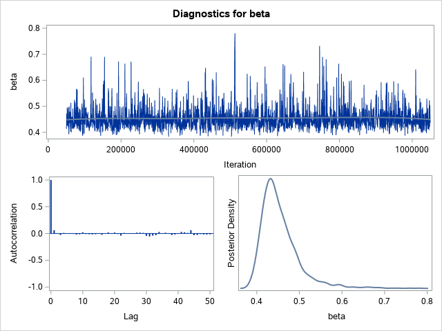
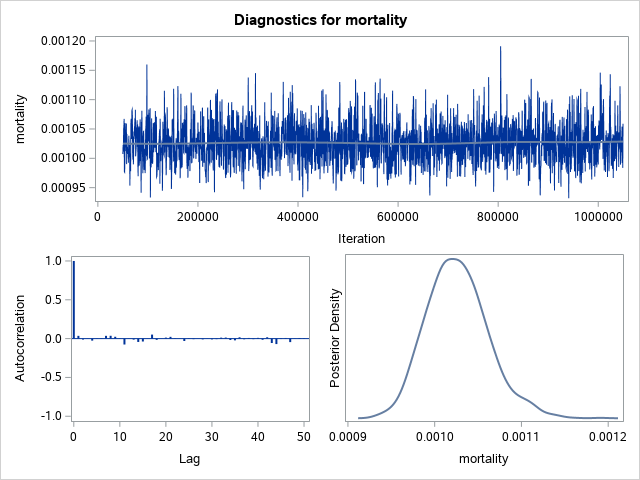

| MCMC analysis of regions (Runge-Kutta solver) |
The MCMC Procedure
|
|
|---|
| Parameters | ||||
|---|---|---|---|---|
| Block | Parameter | Sampling Method |
Initial Value |
Prior Distribution |
| 1 | log_mort | N-Metropolis | -4.6052 | normal(-4.605170186, sd= 2.302585093) |
| log_i0 | -4.6052 | normal(-4.605170186, sd=3.4538776395) | ||
| log_R0 | 1.0986 | normal(1.0986122887, sd=0.9210340372) | ||
| log_gamma | -2.9957 | normal(-2.995732274, sd=1.1512925465) | ||
| Tuning History | |||
|---|---|---|---|
| Phase | Block | Scale | Acceptance Rate |
| 1 | 1 | 2.3800 | 0.000320 |
| 2 | 1 | 0.6181 | 0.00226 |
| 3 | 1 | 0.1892 | 0.1719 |
| 4 | 1 | 0.1294 | 0.5472 |
| 5 | 1 | 0.2009 | 0.6186 |
| 6 | 1 | 0.3772 | 0.6024 |
| 7 | 1 | 0.6766 | 0.5235 |
| 8 | 1 | 0.9911 | 0.4370 |
| 9 | 1 | 1.1917 | 0.3893 |
| Burn-In History | ||
|---|---|---|
| Block | Scale | Acceptance Rate |
| 1 | 1.1917 | 0.3769 |
| Sampling History | ||
|---|---|---|
| Block | Scale | Acceptance Rate |
| 1 | 1.1917 | 0.3865 |
| MCMC analysis of regions (Runge-Kutta solver) |
The MCMC Procedure
| Posterior Summaries and Intervals | |||||
|---|---|---|---|---|---|
| Parameter | N | Mean | Standard Deviation |
95% HPD Interval | |
| mortality | 2000 | 0.000679 | 0.000050 | 0.000606 | 0.000776 |
| i0 | 2000 | 0.0785 | 0.0145 | 0.0499 | 0.1067 |
| R0 | 2000 | 2.3014 | 0.3390 | 1.7081 | 3.0137 |
| beta | 2000 | 0.3288 | 0.0140 | 0.3038 | 0.3546 |
| gamma | 2000 | 0.1466 | 0.0271 | 0.1033 | 0.2007 |
| MCMC analysis of regions (Runge-Kutta solver) |
The MCMC Procedure
| Monte Carlo Standard Errors | |||
|---|---|---|---|
| Parameter | MCSE | Standard Deviation |
MCSE/SD |
| mortality | 1.188E-6 | 0.000050 | 0.0239 |
| i0 | 0.000325 | 0.0145 | 0.0224 |
| R0 | 0.00787 | 0.3390 | 0.0232 |
| beta | 0.000321 | 0.0140 | 0.0229 |
| gamma | 0.000635 | 0.0271 | 0.0235 |
| Posterior Autocorrelations | ||||
|---|---|---|---|---|
| Parameter | Lag 1 | Lag 5 | Lag 10 | Lag 50 |
| mortality | 0.0278 | -0.0004 | -0.0357 | -0.0085 |
| i0 | 0.0091 | 0.0044 | -0.0136 | 0.0053 |
| R0 | 0.0172 | 0.0116 | -0.0021 | -0.0032 |
| beta | -0.0195 | -0.0149 | -0.0242 | 0.0274 |
| gamma | 0.0183 | 0.0004 | -0.0260 | 0.0001 |
| Geweke Diagnostics | ||
|---|---|---|
| Parameter | z | Pr > |z| |
| mortality | -0.6549 | 0.5125 |
| i0 | 0.5480 | 0.5837 |
| R0 | 0.0610 | 0.9514 |
| beta | -0.4228 | 0.6725 |
| gamma | -0.2762 | 0.7824 |
| Raftery-Lewis Diagnostics | ||||
|---|---|---|---|---|
| Quantile=0.025 Accuracy=+/-0.005 Probability=0.95 Epsilon=0.001 | ||||
| Parameter | Number of Samples | Dependence Factor |
||
| Burn-In | Total | Minimum | ||
| mortality | . | . | 3746 | . |
| i0 | . | . | 3746 | . |
| R0 | . | . | 3746 | . |
| beta | . | . | 3746 | . |
| gamma | . | . | 3746 | . |
| NOTE: The minimum required sample size of 3746 is larger than the available chain length of 2000. | ||||
| Heidelberger-Welch Diagnostics | ||||||||
|---|---|---|---|---|---|---|---|---|
| Parameter | Stationarity Test | Half-Width Test | ||||||
| Cramer-von Mises Stat |
p-Value | Test Outcome |
Iterations Discarded |
Half-Width | Mean | Relative Half-Width |
Test Outcome |
|
| mortality | 0.0841 | 0.6686 | Passed | 0 | 2.282E-6 | 0.000679 | 0.00336 | Passed |
| i0 | 0.2191 | 0.2333 | Passed | 0 | 0.000647 | 0.0785 | 0.00824 | Passed |
| R0 | 0.1277 | 0.4653 | Passed | 0 | 0.0153 | 2.3014 | 0.00665 | Passed |
| beta | 0.1042 | 0.5646 | Passed | 0 | 0.000604 | 0.3288 | 0.00184 | Passed |
| gamma | 0.1163 | 0.5109 | Passed | 0 | 0.00119 | 0.1466 | 0.00810 | Passed |
| Effective Sample Sizes | |||
|---|---|---|---|
| Parameter | ESS | Autocorrelation Time |
Efficiency |
| mortality | 1746.5 | 1.1451 | 0.8733 |
| i0 | 2000.0 | 1.0000 | 1.0000 |
| R0 | 1855.3 | 1.0780 | 0.9277 |
| beta | 1913.0 | 1.0455 | 0.9565 |
| gamma | 1814.2 | 1.1024 | 0.9071 |
| Posterior Summaries and Intervals for Prediction | |||||
|---|---|---|---|---|---|
| Parameter | N | Mean | Standard Deviation |
95% HPD Interval | |
| int_dec_avg_dot_1 | 2000 | 72.6165 | 9.7216 | 53.0000 | 91.0000 |
| int_dec_avg_dot_2 | 2000 | 84.2505 | 10.3703 | 63.0000 | 103.0 |
| int_dec_avg_dot_3 | 2000 | 97.1390 | 10.7154 | 77.0000 | 118.0 |
| int_dec_avg_dot_4 | 2000 | 110.4 | 11.3374 | 89.0000 | 133.0 |
| int_dec_avg_dot_5 | 2000 | 123.6 | 11.8225 | 100.0 | 146.0 |
| int_dec_avg_dot_6 | 2000 | 137.7 | 12.5523 | 112.0 | 161.0 |
| int_dec_avg_dot_7 | 2000 | 151.3 | 12.9638 | 125.0 | 174.0 |
| int_dec_avg_dot_8 | 2000 | 163.6 | 13.1578 | 138.0 | 189.0 |
| int_dec_avg_dot_9 | 2000 | 174.3 | 13.6831 | 146.0 | 199.0 |
| int_dec_avg_dot_10 | 2000 | 183.0 | 14.7198 | 154.0 | 211.0 |
| int_dec_avg_dot_11 | 2000 | 190.5 | 14.7247 | 160.0 | 218.0 |
| int_dec_avg_dot_12 | 2000 | 196.5 | 14.6623 | 168.0 | 226.0 |
| int_dec_avg_dot_13 | 2000 | 199.0 | 15.0251 | 169.0 | 228.0 |
| int_dec_avg_dot_14 | 2000 | 198.8 | 14.9025 | 168.0 | 226.0 |
| int_dec_avg_dot_15 | 2000 | 198.2 | 14.6592 | 169.0 | 226.0 |
| int_dec_avg_dot_16 | 2000 | 194.4 | 14.5423 | 165.0 | 221.0 |
| int_dec_avg_dot_17 | 2000 | 188.8 | 14.4536 | 159.0 | 215.0 |
| int_dec_avg_dot_18 | 2000 | 182.3 | 14.3573 | 152.0 | 208.0 |
| int_dec_avg_dot_19 | 2000 | 175.5 | 13.9561 | 147.0 | 200.0 |
| int_dec_avg_dot_20 | 2000 | 167.4 | 13.5080 | 141.0 | 194.0 |
| int_dec_avg_dot_21 | 2000 | 158.4 | 12.8073 | 135.0 | 183.0 |
| int_dec_avg_dot_22 | 2000 | 148.5 | 12.5275 | 124.0 | 173.0 |
| int_dec_avg_dot_23 | 2000 | 139.7 | 12.2850 | 116.0 | 163.0 |
| int_dec_avg_dot_24 | 2000 | 131.0 | 11.9996 | 107.0 | 153.0 |
| int_dec_avg_dot_25 | 2000 | 122.3 | 11.6932 | 99.0000 | 144.0 |
| int_dec_avg_dot_26 | 2000 | 113.4 | 10.9480 | 91.0000 | 134.0 |
| int_dec_avg_dot_27 | 2000 | 104.9 | 10.1992 | 84.0000 | 124.0 |
| int_dec_avg_dot_28 | 2000 | 96.4160 | 9.9465 | 76.0000 | 115.0 |
| int_dec_avg_dot_29 | 2000 | 88.4910 | 9.8451 | 68.0000 | 107.0 |
| int_dec_avg_dot_30 | 2000 | 81.5900 | 9.3436 | 63.0000 | 99.0000 |
| int_dec_avg_dot_31 | 2000 | 75.2575 | 8.6045 | 57.0000 | 91.0000 |
| int_dec_avg_dot_32 | 2000 | 68.9195 | 8.3178 | 52.0000 | 84.0000 |
| int_dec_avg_dot_33 | 2000 | 63.2510 | 8.0838 | 47.0000 | 78.0000 |
| int_dec_avg_dot_34 | 2000 | 57.2640 | 7.8757 | 42.0000 | 72.0000 |
| int_dec_avg_dot_35 | 2000 | 52.2155 | 7.0708 | 37.0000 | 64.0000 |
| int_dec_avg_dot_36 | 2000 | 47.7625 | 7.2504 | 31.0000 | 60.0000 |
| int_dec_avg_dot_37 | 2000 | 43.7220 | 6.7535 | 31.0000 | 57.0000 |
| int_dec_avg_dot_38 | 2000 | 39.4565 | 6.7417 | 26.0000 | 52.0000 |
| int_dec_avg_dot_39 | 2000 | 35.9830 | 6.2068 | 23.0000 | 47.0000 |
| int_dec_avg_dot_40 | 2000 | 32.6005 | 5.9456 | 21.0000 | 44.0000 |
| int_dec_avg_dot_41 | 2000 | 29.9045 | 5.6806 | 19.0000 | 40.0000 |
| int_dec_avg_dot_42 | 2000 | 26.9290 | 5.4996 | 15.0000 | 37.0000 |
| int_dec_avg_dot_43 | 2000 | 24.5970 | 5.0678 | 14.0000 | 34.0000 |
| MCMC analysis of regions (Runge-Kutta solver) |
The MCMC Procedure
| MCMC analysis of regions (Runge-Kutta solver) |
The MCMC Procedure
|
|
|---|
| Parameters | ||||
|---|---|---|---|---|
| Block | Parameter | Sampling Method |
Initial Value |
Prior Distribution |
| 1 | log_mort | N-Metropolis | -4.6052 | normal(-4.605170186, sd= 2.302585093) |
| log_i0 | -4.6052 | normal(-4.605170186, sd=3.4538776395) | ||
| log_R0 | 1.0986 | normal(1.0986122887, sd=0.9210340372) | ||
| log_gamma | -2.9957 | normal(-2.995732274, sd=1.1512925465) | ||
| Tuning History | |||
|---|---|---|---|
| Phase | Block | Scale | Acceptance Rate |
| 1 | 1 | 2.3800 | 0.000420 |
| 2 | 1 | 0.6306 | 0.00564 |
| 3 | 1 | 0.2129 | 0.2200 |
| 4 | 1 | 0.1622 | 0.5755 |
| 5 | 1 | 0.2707 | 0.6171 |
| 6 | 1 | 0.5062 | 0.6055 |
| 7 | 1 | 0.9160 | 0.5311 |
| 8 | 1 | 1.3667 | 0.4527 |
| 9 | 1 | 1.7010 | 0.3859 |
| Burn-In History | ||
|---|---|---|
| Block | Scale | Acceptance Rate |
| 1 | 1.7010 | 0.3835 |
| Sampling History | ||
|---|---|---|
| Block | Scale | Acceptance Rate |
| 1 | 1.7010 | 0.3881 |
| MCMC analysis of regions (Runge-Kutta solver) |
The MCMC Procedure
| Posterior Summaries and Intervals | |||||
|---|---|---|---|---|---|
| Parameter | N | Mean | Standard Deviation |
95% HPD Interval | |
| mortality | 2000 | 0.000456 | 9.288E-6 | 0.000437 | 0.000473 |
| i0 | 2000 | 0.1003 | 0.00973 | 0.0826 | 0.1195 |
| R0 | 2000 | 4.3705 | 0.7278 | 3.0292 | 5.7306 |
| beta | 2000 | 0.2928 | 0.0151 | 0.2658 | 0.3234 |
| gamma | 2000 | 0.0684 | 0.00891 | 0.0521 | 0.0862 |
| MCMC analysis of regions (Runge-Kutta solver) |
The MCMC Procedure
| Monte Carlo Standard Errors | |||
|---|---|---|---|
| Parameter | MCSE | Standard Deviation |
MCSE/SD |
| mortality | 2.021E-7 | 9.288E-6 | 0.0218 |
| i0 | 0.000215 | 0.00973 | 0.0221 |
| R0 | 0.0161 | 0.7278 | 0.0221 |
| beta | 0.000329 | 0.0151 | 0.0218 |
| gamma | 0.000199 | 0.00891 | 0.0224 |
| Posterior Autocorrelations | ||||
|---|---|---|---|---|
| Parameter | Lag 1 | Lag 5 | Lag 10 | Lag 50 |
| mortality | 0.0101 | -0.0231 | -0.0007 | -0.0221 |
| i0 | -0.0248 | -0.0240 | -0.0139 | -0.0044 |
| R0 | -0.0136 | -0.0227 | 0.0218 | -0.0177 |
| beta | -0.0134 | 0.0192 | 0.0363 | 0.0148 |
| gamma | -0.0071 | -0.0248 | -0.0028 | -0.0219 |
| Geweke Diagnostics | ||
|---|---|---|
| Parameter | z | Pr > |z| |
| mortality | . | . |
| i0 | -0.4797 | 0.6315 |
| R0 | -0.7928 | 0.4279 |
| beta | -0.7393 | 0.4597 |
| gamma | 0.5226 | 0.6013 |
| Raftery-Lewis Diagnostics | ||||
|---|---|---|---|---|
| Quantile=0.025 Accuracy=+/-0.005 Probability=0.95 Epsilon=0.001 | ||||
| Parameter | Number of Samples | Dependence Factor |
||
| Burn-In | Total | Minimum | ||
| mortality | . | . | 3746 | . |
| i0 | . | . | 3746 | . |
| R0 | . | . | 3746 | . |
| beta | . | . | 3746 | . |
| gamma | . | . | 3746 | . |
| NOTE: The minimum required sample size of 3746 is larger than the available chain length of 2000. | ||||
| Heidelberger-Welch Diagnostics | ||||||||
|---|---|---|---|---|---|---|---|---|
| Parameter | Stationarity Test | Half-Width Test | ||||||
| Cramer-von Mises Stat |
p-Value | Test Outcome |
Iterations Discarded |
Half-Width | Mean | Relative Half-Width |
Test Outcome |
|
| mortality | . | . | Failed | . | . | . | . | |
| i0 | 0.1730 | 0.3266 | Passed | 0 | 0.000410 | 0.1003 | 0.00409 | Passed |
| R0 | 0.2131 | 0.2435 | Passed | 0 | 0.0261 | 4.3705 | 0.00598 | Passed |
| beta | 0.1805 | 0.3086 | Passed | 0 | 0.000628 | 0.2928 | 0.00215 | Passed |
| gamma | 0.1266 | 0.4696 | Passed | 0 | 0.000323 | 0.0684 | 0.00472 | Passed |
| Effective Sample Sizes | |||
|---|---|---|---|
| Parameter | ESS | Autocorrelation Time |
Efficiency |
| mortality | 2112.7 | 0.9466 | 1.0564 |
| i0 | 2044.3 | 0.9783 | 1.0222 |
| R0 | 2055.7 | 0.9729 | 1.0279 |
| beta | 2110.1 | 0.9478 | 1.0550 |
| gamma | 2000.0 | 1.0000 | 1.0000 |
| Posterior Summaries and Intervals for Prediction | |||||
|---|---|---|---|---|---|
| Parameter | N | Mean | Standard Deviation |
95% HPD Interval | |
| int_dec_avg_dot_1 | 2000 | 36.3955 | 6.9995 | 22.0000 | 49.0000 |
| int_dec_avg_dot_2 | 2000 | 43.8755 | 7.3818 | 30.0000 | 58.0000 |
| int_dec_avg_dot_3 | 2000 | 52.3670 | 7.7724 | 36.0000 | 66.0000 |
| int_dec_avg_dot_4 | 2000 | 61.7855 | 8.1671 | 45.0000 | 77.0000 |
| int_dec_avg_dot_5 | 2000 | 72.1460 | 8.9889 | 56.0000 | 90.0000 |
| int_dec_avg_dot_6 | 2000 | 83.3810 | 9.4611 | 63.0000 | 100.0 |
| int_dec_avg_dot_7 | 2000 | 93.8535 | 10.1400 | 73.0000 | 112.0 |
| int_dec_avg_dot_8 | 2000 | 104.9 | 10.8648 | 84.0000 | 126.0 |
| int_dec_avg_dot_9 | 2000 | 114.8 | 11.5737 | 91.0000 | 136.0 |
| int_dec_avg_dot_10 | 2000 | 123.5 | 11.8585 | 99.0000 | 146.0 |
| int_dec_avg_dot_11 | 2000 | 131.6 | 12.1377 | 109.0 | 155.0 |
| int_dec_avg_dot_12 | 2000 | 139.1 | 12.7583 | 114.0 | 163.0 |
| int_dec_avg_dot_13 | 2000 | 143.2 | 12.5388 | 118.0 | 167.0 |
| int_dec_avg_dot_14 | 2000 | 146.0 | 12.4987 | 123.0 | 171.0 |
| int_dec_avg_dot_15 | 2000 | 148.3 | 12.4699 | 125.0 | 173.0 |
| int_dec_avg_dot_16 | 2000 | 148.3 | 12.9163 | 121.0 | 172.0 |
| int_dec_avg_dot_17 | 2000 | 147.1 | 12.3558 | 122.0 | 170.0 |
| int_dec_avg_dot_18 | 2000 | 145.5 | 12.2252 | 120.0 | 168.0 |
| int_dec_avg_dot_19 | 2000 | 142.3 | 12.3635 | 120.0 | 166.0 |
| int_dec_avg_dot_20 | 2000 | 138.7 | 12.3488 | 114.0 | 162.0 |
| int_dec_avg_dot_21 | 2000 | 135.0 | 12.1184 | 110.0 | 157.0 |
| int_dec_avg_dot_22 | 2000 | 130.1 | 12.0615 | 108.0 | 154.0 |
| int_dec_avg_dot_23 | 2000 | 125.4 | 11.5174 | 101.0 | 145.0 |
| int_dec_avg_dot_24 | 2000 | 119.8 | 11.2901 | 97.0000 | 141.0 |
| int_dec_avg_dot_25 | 2000 | 115.1 | 11.0766 | 93.0000 | 136.0 |
| int_dec_avg_dot_26 | 2000 | 109.5 | 10.5399 | 88.0000 | 129.0 |
| int_dec_avg_dot_27 | 2000 | 104.6 | 10.5833 | 83.0000 | 124.0 |
| int_dec_avg_dot_28 | 2000 | 99.6365 | 10.0849 | 79.0000 | 118.0 |
| int_dec_avg_dot_29 | 2000 | 94.8190 | 9.8964 | 76.0000 | 113.0 |
| int_dec_avg_dot_30 | 2000 | 89.4800 | 9.6071 | 70.0000 | 107.0 |
| int_dec_avg_dot_31 | 2000 | 85.0290 | 9.6740 | 65.0000 | 102.0 |
| int_dec_avg_dot_32 | 2000 | 80.6405 | 8.8588 | 64.0000 | 98.0000 |
| int_dec_avg_dot_33 | 2000 | 76.1270 | 8.9699 | 59.0000 | 93.0000 |
| int_dec_avg_dot_34 | 2000 | 72.1695 | 8.8999 | 54.0000 | 88.0000 |
| int_dec_avg_dot_35 | 2000 | 67.5305 | 8.4087 | 50.0000 | 83.0000 |
| int_dec_avg_dot_36 | 2000 | 63.6190 | 8.1122 | 48.0000 | 79.0000 |
| int_dec_avg_dot_37 | 2000 | 60.4430 | 8.0467 | 45.0000 | 76.0000 |
| int_dec_avg_dot_38 | 2000 | 56.9865 | 7.9480 | 41.0000 | 71.0000 |
| int_dec_avg_dot_39 | 2000 | 53.5800 | 7.6414 | 39.0000 | 68.0000 |
| int_dec_avg_dot_40 | 2000 | 50.6210 | 7.5352 | 35.0000 | 64.0000 |
| int_dec_avg_dot_41 | 2000 | 47.7475 | 7.2760 | 33.0000 | 61.0000 |
| int_dec_avg_dot_42 | 2000 | 45.0185 | 7.0233 | 31.0000 | 58.0000 |
| int_dec_avg_dot_43 | 2000 | 42.0210 | 6.9681 | 27.0000 | 54.0000 |
| MCMC analysis of regions (Runge-Kutta solver) |
The MCMC Procedure
| MCMC analysis of regions (Runge-Kutta solver) |
The MCMC Procedure
|
|
|---|
| Parameters | ||||
|---|---|---|---|---|
| Block | Parameter | Sampling Method |
Initial Value |
Prior Distribution |
| 1 | log_mort | N-Metropolis | -4.6052 | normal(-4.605170186, sd= 2.302585093) |
| log_i0 | -4.6052 | normal(-4.605170186, sd=3.4538776395) | ||
| log_R0 | 1.0986 | normal(1.0986122887, sd=0.9210340372) | ||
| log_gamma | -2.9957 | normal(-2.995732274, sd=1.1512925465) | ||
| Tuning History | |||
|---|---|---|---|
| Phase | Block | Scale | Acceptance Rate |
| 1 | 1 | 2.3800 | 0.000420 |
| 2 | 1 | 0.6306 | 0.00692 |
| 3 | 1 | 0.2182 | 0.2480 |
| 4 | 1 | 0.1766 | 0.5716 |
| 5 | 1 | 0.2917 | 0.6243 |
| 6 | 1 | 0.5566 | 0.5930 |
| 7 | 1 | 0.9733 | 0.5243 |
| 8 | 1 | 1.4287 | 0.4505 |
| 9 | 1 | 1.7696 | 0.3757 |
| Burn-In History | ||
|---|---|---|
| Block | Scale | Acceptance Rate |
| 1 | 1.7696 | 0.3812 |
| Sampling History | ||
|---|---|---|
| Block | Scale | Acceptance Rate |
| 1 | 1.7696 | 0.3783 |
| MCMC analysis of regions (Runge-Kutta solver) |
The MCMC Procedure
| Posterior Summaries and Intervals | |||||
|---|---|---|---|---|---|
| Parameter | N | Mean | Standard Deviation |
95% HPD Interval | |
| mortality | 2000 | 0.000516 | 0.000011 | 0.000494 | 0.000537 |
| i0 | 2000 | 0.0440 | 0.00500 | 0.0354 | 0.0547 |
| R0 | 2000 | 3.9366 | 0.5932 | 2.8849 | 5.1446 |
| beta | 2000 | 0.3118 | 0.0105 | 0.2929 | 0.3344 |
| gamma | 2000 | 0.0808 | 0.0115 | 0.0606 | 0.1022 |
| MCMC analysis of regions (Runge-Kutta solver) |
The MCMC Procedure
| Monte Carlo Standard Errors | |||
|---|---|---|---|
| Parameter | MCSE | Standard Deviation |
MCSE/SD |
| mortality | 2.485E-7 | 0.000011 | 0.0224 |
| i0 | 0.000112 | 0.00500 | 0.0224 |
| R0 | 0.0125 | 0.5932 | 0.0211 |
| beta | 0.000236 | 0.0105 | 0.0224 |
| gamma | 0.000243 | 0.0115 | 0.0211 |
| Posterior Autocorrelations | ||||
|---|---|---|---|---|
| Parameter | Lag 1 | Lag 5 | Lag 10 | Lag 50 |
| mortality | 0.0050 | 0.0349 | 0.0036 | -0.0168 |
| i0 | -0.0086 | 0.0084 | -0.0009 | -0.0058 |
| R0 | -0.0568 | -0.0255 | -0.0224 | 0.0305 |
| beta | -0.0087 | 0.0080 | 0.0482 | 0.0107 |
| gamma | -0.0398 | -0.0231 | -0.0374 | 0.0266 |
| Geweke Diagnostics | ||
|---|---|---|
| Parameter | z | Pr > |z| |
| mortality | 1.6947 | 0.0901 |
| i0 | 0.6619 | 0.5080 |
| R0 | 1.6041 | 0.1087 |
| beta | 0.0744 | 0.9407 |
| gamma | -1.6371 | 0.1016 |
| Raftery-Lewis Diagnostics | ||||
|---|---|---|---|---|
| Quantile=0.025 Accuracy=+/-0.005 Probability=0.95 Epsilon=0.001 | ||||
| Parameter | Number of Samples | Dependence Factor |
||
| Burn-In | Total | Minimum | ||
| mortality | . | . | 3746 | . |
| i0 | . | . | 3746 | . |
| R0 | . | . | 3746 | . |
| beta | . | . | 3746 | . |
| gamma | . | . | 3746 | . |
| NOTE: The minimum required sample size of 3746 is larger than the available chain length of 2000. | ||||
| Heidelberger-Welch Diagnostics | ||||||||
|---|---|---|---|---|---|---|---|---|
| Parameter | Stationarity Test | Half-Width Test | ||||||
| Cramer-von Mises Stat |
p-Value | Test Outcome |
Iterations Discarded |
Half-Width | Mean | Relative Half-Width |
Test Outcome |
|
| mortality | . | . | Failed | . | . | . | . | |
| i0 | 0.1176 | 0.5054 | Passed | 0 | 0.000204 | 0.0440 | 0.00464 | Passed |
| R0 | 0.0880 | 0.6469 | Passed | 0 | 0.0244 | 3.9366 | 0.00621 | Passed |
| beta | 0.0800 | 0.6921 | Passed | 0 | 0.000505 | 0.3118 | 0.00162 | Passed |
| gamma | 0.0803 | 0.6904 | Passed | 0 | 0.000440 | 0.0808 | 0.00544 | Passed |
| Effective Sample Sizes | |||
|---|---|---|---|
| Parameter | ESS | Autocorrelation Time |
Efficiency |
| mortality | 2000.0 | 1.0000 | 1.0000 |
| i0 | 2000.0 | 1.0000 | 1.0000 |
| R0 | 2256.2 | 0.8864 | 1.1281 |
| beta | 2000.0 | 1.0000 | 1.0000 |
| gamma | 2247.6 | 0.8898 | 1.1238 |
| Posterior Summaries and Intervals for Prediction | |||||
|---|---|---|---|---|---|
| Parameter | N | Mean | Standard Deviation |
95% HPD Interval | |
| int_dec_avg_dot_1 | 2000 | 14.6725 | 4.1180 | 7.0000 | 22.0000 |
| int_dec_avg_dot_2 | 2000 | 18.3330 | 4.4928 | 10.0000 | 27.0000 |
| int_dec_avg_dot_3 | 2000 | 22.2440 | 5.1108 | 11.0000 | 31.0000 |
| int_dec_avg_dot_4 | 2000 | 27.3340 | 5.6747 | 16.0000 | 38.0000 |
| int_dec_avg_dot_5 | 2000 | 33.1935 | 6.1558 | 20.0000 | 44.0000 |
| int_dec_avg_dot_6 | 2000 | 39.4995 | 6.4261 | 25.0000 | 50.0000 |
| int_dec_avg_dot_7 | 2000 | 47.2170 | 7.1445 | 32.0000 | 60.0000 |
| int_dec_avg_dot_8 | 2000 | 55.5315 | 8.0287 | 38.0000 | 70.0000 |
| int_dec_avg_dot_9 | 2000 | 64.3510 | 8.2687 | 47.0000 | 79.0000 |
| int_dec_avg_dot_10 | 2000 | 73.0960 | 8.8794 | 56.0000 | 90.0000 |
| int_dec_avg_dot_11 | 2000 | 82.2230 | 9.5827 | 64.0000 | 101.0 |
| int_dec_avg_dot_12 | 2000 | 91.0295 | 9.9929 | 70.0000 | 109.0 |
| int_dec_avg_dot_13 | 2000 | 98.7845 | 10.4291 | 79.0000 | 119.0 |
| int_dec_avg_dot_14 | 2000 | 105.8 | 10.7271 | 84.0000 | 126.0 |
| int_dec_avg_dot_15 | 2000 | 111.3 | 11.3199 | 90.0000 | 133.0 |
| int_dec_avg_dot_16 | 2000 | 115.9 | 11.2803 | 93.0000 | 137.0 |
| int_dec_avg_dot_17 | 2000 | 119.3 | 11.2175 | 99.0000 | 143.0 |
| int_dec_avg_dot_18 | 2000 | 120.4 | 11.6488 | 98.0000 | 143.0 |
| int_dec_avg_dot_19 | 2000 | 120.7 | 11.4356 | 98.0000 | 141.0 |
| int_dec_avg_dot_20 | 2000 | 119.9 | 11.4006 | 98.0000 | 141.0 |
| int_dec_avg_dot_21 | 2000 | 118.1 | 10.9977 | 94.0000 | 137.0 |
| int_dec_avg_dot_22 | 2000 | 115.0 | 11.2372 | 93.0000 | 135.0 |
| int_dec_avg_dot_23 | 2000 | 112.0 | 11.3490 | 90.0000 | 133.0 |
| int_dec_avg_dot_24 | 2000 | 107.5 | 10.7030 | 87.0000 | 128.0 |
| int_dec_avg_dot_25 | 2000 | 103.6 | 10.6326 | 81.0000 | 123.0 |
| int_dec_avg_dot_26 | 2000 | 99.2620 | 10.3229 | 80.0000 | 119.0 |
| int_dec_avg_dot_27 | 2000 | 94.9795 | 10.1067 | 75.0000 | 114.0 |
| int_dec_avg_dot_28 | 2000 | 90.1400 | 9.7256 | 70.0000 | 108.0 |
| int_dec_avg_dot_29 | 2000 | 85.3965 | 9.6805 | 66.0000 | 104.0 |
| int_dec_avg_dot_30 | 2000 | 80.2900 | 9.1501 | 62.0000 | 97.0000 |
| int_dec_avg_dot_31 | 2000 | 76.4560 | 9.0840 | 58.0000 | 94.0000 |
| int_dec_avg_dot_32 | 2000 | 71.9540 | 8.7900 | 54.0000 | 88.0000 |
| int_dec_avg_dot_33 | 2000 | 67.8465 | 8.5008 | 51.0000 | 83.0000 |
| int_dec_avg_dot_34 | 2000 | 63.9320 | 8.1869 | 48.0000 | 79.0000 |
| int_dec_avg_dot_35 | 2000 | 59.6230 | 7.8722 | 44.0000 | 74.0000 |
| int_dec_avg_dot_36 | 2000 | 56.0935 | 7.8725 | 40.0000 | 71.0000 |
| int_dec_avg_dot_37 | 2000 | 52.8570 | 7.3767 | 38.0000 | 66.0000 |
| int_dec_avg_dot_38 | 2000 | 49.1575 | 7.2705 | 34.0000 | 62.0000 |
| int_dec_avg_dot_39 | 2000 | 46.1370 | 7.0888 | 31.0000 | 59.0000 |
| int_dec_avg_dot_40 | 2000 | 43.2100 | 6.9753 | 29.0000 | 56.0000 |
| int_dec_avg_dot_41 | 2000 | 40.3010 | 6.6489 | 26.0000 | 52.0000 |
| int_dec_avg_dot_42 | 2000 | 37.6620 | 6.7262 | 24.0000 | 50.0000 |
| int_dec_avg_dot_43 | 2000 | 35.0660 | 6.4283 | 22.0000 | 47.0000 |
| MCMC analysis of regions (Runge-Kutta solver) |
The MCMC Procedure
| MCMC analysis of regions (Runge-Kutta solver) |
The MCMC Procedure
|
|
|---|
| Parameters | ||||
|---|---|---|---|---|
| Block | Parameter | Sampling Method |
Initial Value |
Prior Distribution |
| 1 | log_mort | N-Metropolis | -4.6052 | normal(-4.605170186, sd= 2.302585093) |
| log_i0 | -4.6052 | normal(-4.605170186, sd=3.4538776395) | ||
| log_R0 | 1.0986 | normal(1.0986122887, sd=0.9210340372) | ||
| log_gamma | -2.9957 | normal(-2.995732274, sd=1.1512925465) | ||
| Tuning History | |||
|---|---|---|---|
| Phase | Block | Scale | Acceptance Rate |
| 1 | 1 | 2.3800 | 0.00104 |
| 2 | 1 | 0.6783 | 0.00150 |
| 3 | 1 | 0.1997 | 0.1080 |
| 4 | 1 | 0.1161 | 0.4655 |
| 5 | 1 | 0.1487 | 0.6142 |
| 6 | 1 | 0.2756 | 0.6225 |
| 7 | 1 | 0.5233 | 0.6017 |
| 8 | 1 | 0.9370 | 0.5452 |
| 9 | 1 | 1.4474 | 0.4651 |
| 10 | 1 | 1.8517 | 0.3937 |
| Burn-In History | ||
|---|---|---|
| Block | Scale | Acceptance Rate |
| 1 | 1.8517 | 0.3906 |
| Sampling History | ||
|---|---|---|
| Block | Scale | Acceptance Rate |
| 1 | 1.8517 | 0.3905 |
| MCMC analysis of regions (Runge-Kutta solver) |
The MCMC Procedure
| Posterior Summaries and Intervals | |||||
|---|---|---|---|---|---|
| Parameter | N | Mean | Standard Deviation |
95% HPD Interval | |
| mortality | 2000 | 0.000865 | 0.000026 | 0.000814 | 0.000919 |
| i0 | 2000 | 0.0242 | 0.00450 | 0.0154 | 0.0328 |
| R0 | 2000 | 7.4722 | 0.9281 | 5.7935 | 9.3546 |
| beta | 2000 | 0.3952 | 0.0238 | 0.3513 | 0.4422 |
| gamma | 2000 | 0.0534 | 0.00444 | 0.0445 | 0.0616 |
| MCMC analysis of regions (Runge-Kutta solver) |
The MCMC Procedure
| Monte Carlo Standard Errors | |||
|---|---|---|---|
| Parameter | MCSE | Standard Deviation |
MCSE/SD |
| mortality | 5.922E-7 | 0.000026 | 0.0224 |
| i0 | 0.000098 | 0.00450 | 0.0217 |
| R0 | 0.0205 | 0.9281 | 0.0221 |
| beta | 0.000531 | 0.0238 | 0.0224 |
| gamma | 0.000096 | 0.00444 | 0.0215 |
| Posterior Autocorrelations | ||||
|---|---|---|---|---|
| Parameter | Lag 1 | Lag 5 | Lag 10 | Lag 50 |
| mortality | 0.0027 | 0.0038 | -0.0168 | 0.0091 |
| i0 | -0.0138 | -0.0150 | 0.0278 | -0.0113 |
| R0 | -0.0246 | -0.0204 | -0.0053 | -0.0058 |
| beta | -0.0031 | -0.0152 | 0.0280 | 0.0050 |
| gamma | -0.0288 | -0.0165 | 0.0005 | -0.0276 |
| Geweke Diagnostics | ||
|---|---|---|
| Parameter | z | Pr > |z| |
| mortality | 0.1742 | 0.8617 |
| i0 | -0.7113 | 0.4769 |
| R0 | 1.0404 | 0.2982 |
| beta | 1.0456 | 0.2957 |
| gamma | -0.7293 | 0.4658 |
| Raftery-Lewis Diagnostics | ||||
|---|---|---|---|---|
| Quantile=0.025 Accuracy=+/-0.005 Probability=0.95 Epsilon=0.001 | ||||
| Parameter | Number of Samples | Dependence Factor |
||
| Burn-In | Total | Minimum | ||
| mortality | . | . | 3746 | . |
| i0 | . | . | 3746 | . |
| R0 | . | . | 3746 | . |
| beta | . | . | 3746 | . |
| gamma | . | . | 3746 | . |
| NOTE: The minimum required sample size of 3746 is larger than the available chain length of 2000. | ||||
| Heidelberger-Welch Diagnostics | ||||||||
|---|---|---|---|---|---|---|---|---|
| Parameter | Stationarity Test | Half-Width Test | ||||||
| Cramer-von Mises Stat |
p-Value | Test Outcome |
Iterations Discarded |
Half-Width | Mean | Relative Half-Width |
Test Outcome |
|
| mortality | 0.0933 | 0.6187 | Passed | 0 | 0 | 0.000865 | 0 | Passed |
| i0 | 0.4337 | 0.0590 | Passed | 0 | 0.000207 | 0.0242 | 0.00858 | Passed |
| R0 | 0.2005 | 0.2665 | Passed | 0 | 0.0394 | 7.4722 | 0.00528 | Passed |
| beta | 0.3271 | 0.1136 | Passed | 0 | 0.00116 | 0.3952 | 0.00293 | Passed |
| gamma | 0.1256 | 0.4732 | Passed | 0 | 0.000174 | 0.0534 | 0.00326 | Passed |
| Effective Sample Sizes | |||
|---|---|---|---|
| Parameter | ESS | Autocorrelation Time |
Efficiency |
| mortality | 2000.0 | 1.0000 | 1.0000 |
| i0 | 2115.8 | 0.9453 | 1.0579 |
| R0 | 2043.0 | 0.9790 | 1.0215 |
| beta | 2000.0 | 1.0000 | 1.0000 |
| gamma | 2157.4 | 0.9270 | 1.0787 |
| Posterior Summaries and Intervals for Prediction | |||||
|---|---|---|---|---|---|
| Parameter | N | Mean | Standard Deviation |
95% HPD Interval | |
| int_dec_avg_dot_1 | 2000 | 3.2020 | 1.8987 | 0 | 7.0000 |
| int_dec_avg_dot_2 | 2000 | 4.4550 | 2.1809 | 0 | 8.0000 |
| int_dec_avg_dot_3 | 2000 | 6.1060 | 2.5361 | 2.0000 | 11.0000 |
| int_dec_avg_dot_4 | 2000 | 8.2945 | 2.9552 | 2.0000 | 13.0000 |
| int_dec_avg_dot_5 | 2000 | 11.1080 | 3.4421 | 4.0000 | 17.0000 |
| int_dec_avg_dot_6 | 2000 | 14.9080 | 4.1000 | 6.0000 | 22.0000 |
| int_dec_avg_dot_7 | 2000 | 19.3315 | 4.5797 | 10.0000 | 27.0000 |
| int_dec_avg_dot_8 | 2000 | 24.9445 | 5.3906 | 14.0000 | 35.0000 |
| int_dec_avg_dot_9 | 2000 | 31.2670 | 5.8467 | 20.0000 | 42.0000 |
| int_dec_avg_dot_10 | 2000 | 37.9295 | 6.6130 | 25.0000 | 50.0000 |
| int_dec_avg_dot_11 | 2000 | 44.2580 | 6.9370 | 30.0000 | 56.0000 |
| int_dec_avg_dot_12 | 2000 | 50.8390 | 7.5133 | 36.0000 | 65.0000 |
| int_dec_avg_dot_13 | 2000 | 55.8205 | 7.7847 | 42.0000 | 71.0000 |
| int_dec_avg_dot_14 | 2000 | 60.4335 | 8.2243 | 45.0000 | 76.0000 |
| int_dec_avg_dot_15 | 2000 | 63.1050 | 8.4651 | 45.0000 | 78.0000 |
| int_dec_avg_dot_16 | 2000 | 64.8670 | 8.3815 | 49.0000 | 81.0000 |
| int_dec_avg_dot_17 | 2000 | 65.8050 | 8.4104 | 49.0000 | 81.0000 |
| int_dec_avg_dot_18 | 2000 | 65.8870 | 8.4542 | 51.0000 | 83.0000 |
| int_dec_avg_dot_19 | 2000 | 64.8895 | 8.4047 | 49.0000 | 81.0000 |
| int_dec_avg_dot_20 | 2000 | 63.4305 | 8.2278 | 47.0000 | 79.0000 |
| int_dec_avg_dot_21 | 2000 | 62.0125 | 8.2168 | 44.0000 | 76.0000 |
| int_dec_avg_dot_22 | 2000 | 59.6720 | 7.8728 | 42.0000 | 73.0000 |
| int_dec_avg_dot_23 | 2000 | 57.6790 | 7.8510 | 42.0000 | 72.0000 |
| int_dec_avg_dot_24 | 2000 | 55.2295 | 7.7686 | 40.0000 | 70.0000 |
| int_dec_avg_dot_25 | 2000 | 53.3840 | 7.4772 | 40.0000 | 69.0000 |
| int_dec_avg_dot_26 | 2000 | 50.6080 | 7.4289 | 37.0000 | 65.0000 |
| int_dec_avg_dot_27 | 2000 | 48.6400 | 7.3027 | 35.0000 | 63.0000 |
| int_dec_avg_dot_28 | 2000 | 46.5690 | 7.0645 | 33.0000 | 60.0000 |
| int_dec_avg_dot_29 | 2000 | 43.9815 | 6.8426 | 30.0000 | 56.0000 |
| int_dec_avg_dot_30 | 2000 | 42.2250 | 6.5914 | 28.0000 | 54.0000 |
| int_dec_avg_dot_31 | 2000 | 39.9935 | 6.4652 | 27.0000 | 52.0000 |
| int_dec_avg_dot_32 | 2000 | 38.0520 | 6.0208 | 25.0000 | 48.0000 |
| int_dec_avg_dot_33 | 2000 | 36.2615 | 6.1132 | 25.0000 | 48.0000 |
| int_dec_avg_dot_34 | 2000 | 34.6020 | 6.0174 | 22.0000 | 45.0000 |
| int_dec_avg_dot_35 | 2000 | 32.8635 | 5.8700 | 20.0000 | 43.0000 |
| int_dec_avg_dot_36 | 2000 | 30.9220 | 5.5323 | 19.0000 | 40.0000 |
| int_dec_avg_dot_37 | 2000 | 29.5085 | 5.3350 | 20.0000 | 40.0000 |
| int_dec_avg_dot_38 | 2000 | 27.9330 | 5.3086 | 18.0000 | 38.0000 |
| int_dec_avg_dot_39 | 2000 | 26.7180 | 5.3133 | 16.0000 | 36.0000 |
| int_dec_avg_dot_40 | 2000 | 25.2855 | 5.1123 | 14.0000 | 34.0000 |
| int_dec_avg_dot_41 | 2000 | 24.1335 | 4.8873 | 14.0000 | 33.0000 |
| int_dec_avg_dot_42 | 2000 | 22.7645 | 4.9338 | 14.0000 | 32.0000 |
| int_dec_avg_dot_43 | 2000 | 21.7055 | 4.7939 | 11.0000 | 30.0000 |
| int_dec_avg_dot_44 | 2000 | 20.4450 | 4.6167 | 11.0000 | 29.0000 |
| int_dec_avg_dot_45 | 2000 | 19.5175 | 4.6374 | 10.0000 | 28.0000 |
| int_dec_avg_dot_46 | 2000 | 18.6140 | 4.4075 | 9.0000 | 26.0000 |
| int_dec_avg_dot_47 | 2000 | 17.6105 | 4.3888 | 8.0000 | 25.0000 |
| int_dec_avg_dot_48 | 2000 | 16.6540 | 4.1987 | 8.0000 | 24.0000 |
| int_dec_avg_dot_49 | 2000 | 15.7875 | 4.2894 | 7.0000 | 23.0000 |
| int_dec_avg_dot_50 | 2000 | 14.8205 | 4.0779 | 7.0000 | 22.0000 |
| int_dec_avg_dot_51 | 2000 | 14.2005 | 3.9988 | 6.0000 | 21.0000 |
| MCMC analysis of regions (Runge-Kutta solver) |
The MCMC Procedure
| MCMC analysis of regions (Runge-Kutta solver) |
The MCMC Procedure
|
|
|---|
| Parameters | ||||
|---|---|---|---|---|
| Block | Parameter | Sampling Method |
Initial Value |
Prior Distribution |
| 1 | log_mort | N-Metropolis | -4.6052 | normal(-4.605170186, sd= 2.302585093) |
| log_i0 | -4.6052 | normal(-4.605170186, sd=3.4538776395) | ||
| log_R0 | 1.0986 | normal(1.0986122887, sd=0.9210340372) | ||
| log_gamma | -2.9957 | normal(-2.995732274, sd=1.1512925465) | ||
| Tuning History | |||
|---|---|---|---|
| Phase | Block | Scale | Acceptance Rate |
| 1 | 1 | 2.3800 | 0.000280 |
| 2 | 1 | 0.6122 | 0.00816 |
| 3 | 1 | 0.2163 | 0.2338 |
| 4 | 1 | 0.1698 | 0.5731 |
| 5 | 1 | 0.2816 | 0.6181 |
| 6 | 1 | 0.5280 | 0.6084 |
| 7 | 1 | 0.9629 | 0.5402 |
| 8 | 1 | 1.4692 | 0.4591 |
| 9 | 1 | 1.8547 | 0.3891 |
| Burn-In History | ||
|---|---|---|
| Block | Scale | Acceptance Rate |
| 1 | 1.8547 | 0.3945 |
| Sampling History | ||
|---|---|---|
| Block | Scale | Acceptance Rate |
| 1 | 1.8547 | 0.3921 |
| MCMC analysis of regions (Runge-Kutta solver) |
The MCMC Procedure
| Posterior Summaries and Intervals | |||||
|---|---|---|---|---|---|
| Parameter | N | Mean | Standard Deviation |
95% HPD Interval | |
| mortality | 2000 | 0.000971 | 0.000032 | 0.000906 | 0.00103 |
| i0 | 2000 | 0.0189 | 0.00302 | 0.0136 | 0.0253 |
| R0 | 2000 | 14.2092 | 1.4349 | 11.5850 | 17.0636 |
| beta | 2000 | 0.4252 | 0.0222 | 0.3867 | 0.4712 |
| gamma | 2000 | 0.0301 | 0.00194 | 0.0261 | 0.0335 |
| MCMC analysis of regions (Runge-Kutta solver) |
The MCMC Procedure
| Monte Carlo Standard Errors | |||
|---|---|---|---|
| Parameter | MCSE | Standard Deviation |
MCSE/SD |
| mortality | 6.472E-7 | 0.000032 | 0.0204 |
| i0 | 0.000068 | 0.00302 | 0.0224 |
| R0 | 0.0311 | 1.4349 | 0.0217 |
| beta | 0.000503 | 0.0222 | 0.0227 |
| gamma | 0.000040 | 0.00194 | 0.0207 |
| Posterior Autocorrelations | ||||
|---|---|---|---|---|
| Parameter | Lag 1 | Lag 5 | Lag 10 | Lag 50 |
| mortality | -0.0162 | -0.0388 | 0.0029 | -0.0051 |
| i0 | -0.0077 | -0.0142 | -0.0050 | 0.0196 |
| R0 | -0.0179 | -0.0238 | -0.0237 | 0.0042 |
| beta | -0.0145 | -0.0052 | -0.0205 | 0.0086 |
| gamma | -0.0157 | -0.0274 | -0.0122 | -0.0030 |
| Geweke Diagnostics | ||
|---|---|---|
| Parameter | z | Pr > |z| |
| mortality | 0.3949 | 0.6930 |
| i0 | -0.1375 | 0.8907 |
| R0 | 0.0241 | 0.9808 |
| beta | -0.0605 | 0.9518 |
| gamma | -0.0496 | 0.9604 |
| Raftery-Lewis Diagnostics | ||||
|---|---|---|---|---|
| Quantile=0.025 Accuracy=+/-0.005 Probability=0.95 Epsilon=0.001 | ||||
| Parameter | Number of Samples | Dependence Factor |
||
| Burn-In | Total | Minimum | ||
| mortality | . | . | 3746 | . |
| i0 | . | . | 3746 | . |
| R0 | . | . | 3746 | . |
| beta | . | . | 3746 | . |
| gamma | . | . | 3746 | . |
| NOTE: The minimum required sample size of 3746 is larger than the available chain length of 2000. | ||||
| Heidelberger-Welch Diagnostics | ||||||||
|---|---|---|---|---|---|---|---|---|
| Parameter | Stationarity Test | Half-Width Test | ||||||
| Cramer-von Mises Stat |
p-Value | Test Outcome |
Iterations Discarded |
Half-Width | Mean | Relative Half-Width |
Test Outcome |
|
| mortality | 0.1882 | 0.2915 | Passed | 0 | 0 | 0.000971 | 0 | Passed |
| i0 | 0.0793 | 0.6958 | Passed | 0 | 0.000130 | 0.0189 | 0.00690 | Passed |
| R0 | 0.0718 | 0.7403 | Passed | 0 | 0.0491 | 14.2092 | 0.00346 | Passed |
| beta | 0.0280 | 0.9823 | Passed | 0 | 0.000857 | 0.4252 | 0.00201 | Passed |
| gamma | 0.2165 | 0.2376 | Passed | 0 | 0.000070 | 0.0301 | 0.00233 | Passed |
| Effective Sample Sizes | |||
|---|---|---|---|
| Parameter | ESS | Autocorrelation Time |
Efficiency |
| mortality | 2406.4 | 0.8311 | 1.2032 |
| i0 | 2000.0 | 1.0000 | 1.0000 |
| R0 | 2129.0 | 0.9394 | 1.0645 |
| beta | 1945.0 | 1.0283 | 0.9725 |
| gamma | 2336.6 | 0.8559 | 1.1683 |
| Posterior Summaries and Intervals for Prediction | |||||
|---|---|---|---|---|---|
| Parameter | N | Mean | Standard Deviation |
95% HPD Interval | |
| int_dec_avg_dot_1 | 2000 | 5.1850 | 2.4024 | 0 | 9.0000 |
| int_dec_avg_dot_2 | 2000 | 7.5250 | 2.8502 | 1.0000 | 12.0000 |
| int_dec_avg_dot_3 | 2000 | 10.8515 | 3.5520 | 3.0000 | 17.0000 |
| int_dec_avg_dot_4 | 2000 | 15.7395 | 4.2315 | 8.0000 | 24.0000 |
| int_dec_avg_dot_5 | 2000 | 22.6685 | 5.1316 | 12.0000 | 32.0000 |
| int_dec_avg_dot_6 | 2000 | 31.5900 | 6.1048 | 20.0000 | 43.0000 |
| int_dec_avg_dot_7 | 2000 | 43.3750 | 7.0950 | 29.0000 | 56.0000 |
| int_dec_avg_dot_8 | 2000 | 57.9850 | 7.9577 | 41.0000 | 72.0000 |
| int_dec_avg_dot_9 | 2000 | 75.1795 | 9.3552 | 57.0000 | 92.0000 |
| int_dec_avg_dot_10 | 2000 | 93.4120 | 10.4736 | 72.0000 | 113.0 |
| int_dec_avg_dot_11 | 2000 | 111.5 | 11.4101 | 88.0000 | 132.0 |
| int_dec_avg_dot_12 | 2000 | 128.0 | 12.3640 | 103.0 | 150.0 |
| int_dec_avg_dot_13 | 2000 | 142.0 | 12.4660 | 117.0 | 164.0 |
| int_dec_avg_dot_14 | 2000 | 152.5 | 12.6684 | 128.0 | 176.0 |
| int_dec_avg_dot_15 | 2000 | 159.7 | 13.0996 | 135.0 | 185.0 |
| int_dec_avg_dot_16 | 2000 | 163.6 | 13.6527 | 135.0 | 189.0 |
| int_dec_avg_dot_17 | 2000 | 165.7 | 13.6482 | 138.0 | 191.0 |
| int_dec_avg_dot_18 | 2000 | 166.0 | 13.2241 | 138.0 | 190.0 |
| int_dec_avg_dot_19 | 2000 | 164.8 | 13.5628 | 137.0 | 190.0 |
| int_dec_avg_dot_20 | 2000 | 162.3 | 13.2969 | 135.0 | 186.0 |
| int_dec_avg_dot_21 | 2000 | 159.6 | 12.9098 | 133.0 | 183.0 |
| int_dec_avg_dot_22 | 2000 | 156.6 | 12.8421 | 132.0 | 181.0 |
| int_dec_avg_dot_23 | 2000 | 152.5 | 13.1993 | 125.0 | 176.0 |
| int_dec_avg_dot_24 | 2000 | 148.2 | 12.6521 | 121.0 | 171.0 |
| int_dec_avg_dot_25 | 2000 | 144.9 | 12.7093 | 122.0 | 170.0 |
| int_dec_avg_dot_26 | 2000 | 141.1 | 12.1397 | 116.0 | 163.0 |
| int_dec_avg_dot_27 | 2000 | 136.7 | 11.8461 | 112.0 | 158.0 |
| int_dec_avg_dot_28 | 2000 | 133.2 | 11.8082 | 108.0 | 155.0 |
| int_dec_avg_dot_29 | 2000 | 129.5 | 11.7952 | 107.0 | 152.0 |
| int_dec_avg_dot_30 | 2000 | 125.3 | 11.1380 | 104.0 | 146.0 |
| int_dec_avg_dot_31 | 2000 | 122.5 | 11.4549 | 100.0 | 144.0 |
| int_dec_avg_dot_32 | 2000 | 118.4 | 11.1029 | 96.0000 | 139.0 |
| int_dec_avg_dot_33 | 2000 | 115.1 | 11.0336 | 93.0000 | 136.0 |
| int_dec_avg_dot_34 | 2000 | 111.7 | 10.4752 | 91.0000 | 131.0 |
| int_dec_avg_dot_35 | 2000 | 108.4 | 10.7299 | 85.0000 | 127.0 |
| int_dec_avg_dot_36 | 2000 | 105.3 | 10.1009 | 83.0000 | 123.0 |
| int_dec_avg_dot_37 | 2000 | 102.1 | 10.3275 | 81.0000 | 121.0 |
| int_dec_avg_dot_38 | 2000 | 99.1315 | 10.0712 | 80.0000 | 118.0 |
| int_dec_avg_dot_39 | 2000 | 96.5860 | 9.9725 | 77.0000 | 116.0 |
| int_dec_avg_dot_40 | 2000 | 93.3315 | 9.8271 | 73.0000 | 111.0 |
| int_dec_avg_dot_41 | 2000 | 90.4740 | 9.8411 | 70.0000 | 108.0 |
| int_dec_avg_dot_42 | 2000 | 87.8915 | 9.8051 | 68.0000 | 106.0 |
| int_dec_avg_dot_43 | 2000 | 85.0065 | 9.7182 | 65.0000 | 103.0 |
| int_dec_avg_dot_44 | 2000 | 82.7075 | 9.1183 | 64.0000 | 99.0000 |
| int_dec_avg_dot_45 | 2000 | 80.1605 | 9.2238 | 63.0000 | 98.0000 |
| int_dec_avg_dot_46 | 2000 | 78.0950 | 9.1886 | 59.0000 | 94.0000 |
| int_dec_avg_dot_47 | 2000 | 75.7655 | 9.0642 | 58.0000 | 93.0000 |
| int_dec_avg_dot_48 | 2000 | 73.1650 | 8.8993 | 57.0000 | 91.0000 |
| int_dec_avg_dot_49 | 2000 | 71.0490 | 8.7305 | 53.0000 | 87.0000 |
| int_dec_avg_dot_50 | 2000 | 69.1775 | 8.7830 | 53.0000 | 86.0000 |
| int_dec_avg_dot_51 | 2000 | 67.0055 | 8.5699 | 50.0000 | 83.0000 |
| MCMC analysis of regions (Runge-Kutta solver) |
The MCMC Procedure
| MCMC analysis of regions (Runge-Kutta solver) |
The MCMC Procedure
|
|
|---|
| Parameters | ||||
|---|---|---|---|---|
| Block | Parameter | Sampling Method |
Initial Value |
Prior Distribution |
| 1 | log_mort | N-Metropolis | -4.6052 | normal(-4.605170186, sd= 2.302585093) |
| log_i0 | -4.6052 | normal(-4.605170186, sd=3.4538776395) | ||
| log_R0 | 1.0986 | normal(1.0986122887, sd=0.9210340372) | ||
| log_gamma | -2.9957 | normal(-2.995732274, sd=1.1512925465) | ||
| Tuning History | |||
|---|---|---|---|
| Phase | Block | Scale | Acceptance Rate |
| 1 | 1 | 2.3800 | 0.000280 |
| 2 | 1 | 0.6122 | 0.00230 |
| 3 | 1 | 0.1877 | 0.2148 |
| 4 | 1 | 0.1414 | 0.5663 |
| 5 | 1 | 0.2305 | 0.6285 |
| 6 | 1 | 0.4451 | 0.6174 |
| 7 | 1 | 0.8328 | 0.5601 |
| 8 | 1 | 1.3358 | 0.4823 |
| 9 | 1 | 1.7767 | 0.4034 |
| Burn-In History | ||
|---|---|---|
| Block | Scale | Acceptance Rate |
| 1 | 1.7767 | 0.4051 |
| Sampling History | ||
|---|---|---|
| Block | Scale | Acceptance Rate |
| 1 | 1.7767 | 0.4052 |
| MCMC analysis of regions (Runge-Kutta solver) |
The MCMC Procedure
| Posterior Summaries and Intervals | |||||
|---|---|---|---|---|---|
| Parameter | N | Mean | Standard Deviation |
95% HPD Interval | |
| mortality | 2000 | 0.00135 | 0.000017 | 0.00132 | 0.00138 |
| i0 | 2000 | 0.0924 | 0.00610 | 0.0809 | 0.1048 |
| R0 | 2000 | 6.2753 | 0.4275 | 5.5164 | 7.1649 |
| beta | 2000 | 0.3748 | 0.0144 | 0.3472 | 0.4035 |
| gamma | 2000 | 0.0599 | 0.00226 | 0.0554 | 0.0641 |
| MCMC analysis of regions (Runge-Kutta solver) |
The MCMC Procedure
| Monte Carlo Standard Errors | |||
|---|---|---|---|
| Parameter | MCSE | Standard Deviation |
MCSE/SD |
| mortality | 3.889E-7 | 0.000017 | 0.0232 |
| i0 | 0.000141 | 0.00610 | 0.0230 |
| R0 | 0.00949 | 0.4275 | 0.0222 |
| beta | 0.000321 | 0.0144 | 0.0223 |
| gamma | 0.000051 | 0.00226 | 0.0227 |
| Posterior Autocorrelations | ||||
|---|---|---|---|---|
| Parameter | Lag 1 | Lag 5 | Lag 10 | Lag 50 |
| mortality | 0.0384 | 0.0583 | 0.0044 | 0.0002 |
| i0 | 0.0178 | 0.0255 | -0.0226 | -0.0089 |
| R0 | 0.0232 | 0.0283 | 0.0032 | 0.0125 |
| beta | 0.0183 | 0.0278 | -0.0036 | -0.0013 |
| gamma | 0.0133 | 0.0362 | 0.0074 | 0.0206 |
| Geweke Diagnostics | ||
|---|---|---|
| Parameter | z | Pr > |z| |
| mortality | -0.8841 | 0.3766 |
| i0 | 0.0207 | 0.9835 |
| R0 | 0.7847 | 0.4326 |
| beta | 0.8424 | 0.3996 |
| gamma | -0.6827 | 0.4948 |
| Raftery-Lewis Diagnostics | ||||
|---|---|---|---|---|
| Quantile=0.025 Accuracy=+/-0.005 Probability=0.95 Epsilon=0.001 | ||||
| Parameter | Number of Samples | Dependence Factor |
||
| Burn-In | Total | Minimum | ||
| mortality | . | . | 3746 | . |
| i0 | . | . | 3746 | . |
| R0 | . | . | 3746 | . |
| beta | . | . | 3746 | . |
| gamma | . | . | 3746 | . |
| NOTE: The minimum required sample size of 3746 is larger than the available chain length of 2000. | ||||
| Heidelberger-Welch Diagnostics | ||||||||
|---|---|---|---|---|---|---|---|---|
| Parameter | Stationarity Test | Half-Width Test | ||||||
| Cramer-von Mises Stat |
p-Value | Test Outcome |
Iterations Discarded |
Half-Width | Mean | Relative Half-Width |
Test Outcome |
|
| mortality | . | . | Failed | . | . | . | . | |
| i0 | 0.0459 | 0.9005 | Passed | 0 | 0.000299 | 0.0924 | 0.00324 | Passed |
| R0 | 0.1020 | 0.5750 | Passed | 0 | 0.0203 | 6.2753 | 0.00324 | Passed |
| beta | 0.1173 | 0.5067 | Passed | 0 | 0.000667 | 0.3748 | 0.00178 | Passed |
| gamma | 0.0876 | 0.6494 | Passed | 0 | 0.000106 | 0.0599 | 0.00177 | Passed |
| Effective Sample Sizes | |||
|---|---|---|---|
| Parameter | ESS | Autocorrelation Time |
Efficiency |
| mortality | 1857.5 | 1.0767 | 0.9287 |
| i0 | 1882.6 | 1.0624 | 0.9413 |
| R0 | 2030.8 | 0.9849 | 1.0154 |
| beta | 2004.4 | 0.9978 | 1.0022 |
| gamma | 1935.6 | 1.0333 | 0.9678 |
| Posterior Summaries and Intervals for Prediction | |||||
|---|---|---|---|---|---|
| Parameter | N | Mean | Standard Deviation |
95% HPD Interval | |
| int_dec_avg_dot_1 | 2000 | 56.9650 | 8.4119 | 39.0000 | 72.0000 |
| int_dec_avg_dot_2 | 2000 | 74.5195 | 9.7022 | 56.0000 | 93.0000 |
| int_dec_avg_dot_3 | 2000 | 96.0985 | 10.6774 | 76.0000 | 117.0 |
| int_dec_avg_dot_4 | 2000 | 121.0 | 11.7862 | 96.0000 | 142.0 |
| int_dec_avg_dot_5 | 2000 | 148.1 | 12.8919 | 122.0 | 172.0 |
| int_dec_avg_dot_6 | 2000 | 177.4 | 13.9561 | 149.0 | 203.0 |
| int_dec_avg_dot_7 | 2000 | 206.8 | 15.7602 | 173.0 | 234.0 |
| int_dec_avg_dot_8 | 2000 | 234.4 | 16.4190 | 199.0 | 265.0 |
| int_dec_avg_dot_9 | 2000 | 257.3 | 17.3184 | 225.0 | 291.0 |
| int_dec_avg_dot_10 | 2000 | 277.1 | 18.3904 | 241.0 | 315.0 |
| int_dec_avg_dot_11 | 2000 | 290.0 | 18.2165 | 255.0 | 325.0 |
| int_dec_avg_dot_12 | 2000 | 298.1 | 17.9714 | 259.0 | 329.0 |
| int_dec_avg_dot_13 | 2000 | 301.8 | 18.2714 | 263.0 | 334.0 |
| int_dec_avg_dot_14 | 2000 | 301.6 | 18.3009 | 266.0 | 336.0 |
| int_dec_avg_dot_15 | 2000 | 299.0 | 17.4388 | 264.0 | 332.0 |
| int_dec_avg_dot_16 | 2000 | 291.6 | 17.3538 | 256.0 | 323.0 |
| int_dec_avg_dot_17 | 2000 | 283.2 | 17.8919 | 250.0 | 319.0 |
| int_dec_avg_dot_18 | 2000 | 273.3 | 17.1881 | 239.0 | 306.0 |
| int_dec_avg_dot_19 | 2000 | 263.6 | 16.8696 | 233.0 | 299.0 |
| int_dec_avg_dot_20 | 2000 | 252.4 | 16.6304 | 222.0 | 285.0 |
| int_dec_avg_dot_21 | 2000 | 241.9 | 16.1462 | 208.0 | 271.0 |
| int_dec_avg_dot_22 | 2000 | 230.0 | 15.5920 | 197.0 | 258.0 |
| int_dec_avg_dot_23 | 2000 | 220.0 | 14.9199 | 190.0 | 248.0 |
| int_dec_avg_dot_24 | 2000 | 209.0 | 14.6234 | 180.0 | 236.0 |
| int_dec_avg_dot_25 | 2000 | 198.1 | 14.5510 | 170.0 | 226.0 |
| int_dec_avg_dot_26 | 2000 | 187.7 | 13.9963 | 160.0 | 214.0 |
| int_dec_avg_dot_27 | 2000 | 177.8 | 13.4118 | 151.0 | 202.0 |
| int_dec_avg_dot_28 | 2000 | 168.5 | 13.0549 | 143.0 | 192.0 |
| int_dec_avg_dot_29 | 2000 | 159.5 | 12.8054 | 135.0 | 184.0 |
| int_dec_avg_dot_30 | 2000 | 151.4 | 12.1415 | 126.0 | 173.0 |
| int_dec_avg_dot_31 | 2000 | 142.5 | 11.8896 | 118.0 | 164.0 |
| int_dec_avg_dot_32 | 2000 | 135.2 | 12.1437 | 112.0 | 159.0 |
| int_dec_avg_dot_33 | 2000 | 127.7 | 11.6466 | 103.0 | 148.0 |
| int_dec_avg_dot_34 | 2000 | 120.6 | 10.9981 | 99.0000 | 141.0 |
| int_dec_avg_dot_35 | 2000 | 113.6 | 10.7702 | 91.0000 | 133.0 |
| int_dec_avg_dot_36 | 2000 | 107.0 | 10.2990 | 87.0000 | 126.0 |
| int_dec_avg_dot_37 | 2000 | 101.0 | 10.4242 | 80.0000 | 120.0 |
| int_dec_avg_dot_38 | 2000 | 95.5445 | 9.9805 | 75.0000 | 113.0 |
| int_dec_avg_dot_39 | 2000 | 90.3405 | 9.7602 | 70.0000 | 108.0 |
| int_dec_avg_dot_40 | 2000 | 85.5320 | 9.3003 | 65.0000 | 101.0 |
| int_dec_avg_dot_41 | 2000 | 80.3570 | 9.2286 | 63.0000 | 98.0000 |
| int_dec_avg_dot_42 | 2000 | 75.8930 | 9.1333 | 57.0000 | 92.0000 |
| int_dec_avg_dot_43 | 2000 | 71.7665 | 8.6283 | 53.0000 | 87.0000 |
| int_dec_avg_dot_44 | 2000 | 67.4845 | 8.3165 | 52.0000 | 84.0000 |
| int_dec_avg_dot_45 | 2000 | 63.8730 | 8.2546 | 47.0000 | 79.0000 |
| int_dec_avg_dot_46 | 2000 | 59.6590 | 8.1016 | 44.0000 | 75.0000 |
| int_dec_avg_dot_47 | 2000 | 56.3805 | 7.7775 | 40.0000 | 70.0000 |
| int_dec_avg_dot_48 | 2000 | 53.7010 | 7.5694 | 37.0000 | 67.0000 |
| int_dec_avg_dot_49 | 2000 | 50.4175 | 7.2764 | 35.0000 | 63.0000 |
| int_dec_avg_dot_50 | 2000 | 47.3310 | 7.1293 | 32.0000 | 60.0000 |
| int_dec_avg_dot_51 | 2000 | 45.0155 | 6.9172 | 31.0000 | 57.0000 |
| MCMC analysis of regions (Runge-Kutta solver) |
The MCMC Procedure

| MCMC analysis of regions (Runge-Kutta solver) |
The MCMC Procedure
|
|
|---|
| Parameters | ||||
|---|---|---|---|---|
| Block | Parameter | Sampling Method |
Initial Value |
Prior Distribution |
| 1 | log_mort | N-Metropolis | -4.6052 | normal(-4.605170186, sd= 2.302585093) |
| log_i0 | -4.6052 | normal(-4.605170186, sd=3.4538776395) | ||
| log_R0 | 1.0986 | normal(1.0986122887, sd=0.9210340372) | ||
| log_gamma | -2.9957 | normal(-2.995732274, sd=1.1512925465) | ||
| Tuning History | |||
|---|---|---|---|
| Phase | Block | Scale | Acceptance Rate |
| 1 | 1 | 2.3800 | 0.000320 |
| 2 | 1 | 0.6181 | 0.00964 |
| 3 | 1 | 0.2232 | 0.2701 |
| 4 | 1 | 0.1891 | 0.5836 |
| 5 | 1 | 0.3225 | 0.6244 |
| 6 | 1 | 0.6156 | 0.5933 |
| 7 | 1 | 1.0774 | 0.5216 |
| 8 | 1 | 1.5710 | 0.4269 |
| 9 | 1 | 1.8481 | 0.3859 |
| Burn-In History | ||
|---|---|---|
| Block | Scale | Acceptance Rate |
| 1 | 1.8481 | 0.3812 |
| Sampling History | ||
|---|---|---|
| Block | Scale | Acceptance Rate |
| 1 | 1.8481 | 0.3845 |
| MCMC analysis of regions (Runge-Kutta solver) |
The MCMC Procedure
| Posterior Summaries and Intervals | |||||
|---|---|---|---|---|---|
| Parameter | N | Mean | Standard Deviation |
95% HPD Interval | |
| mortality | 2000 | 0.000564 | 0.000013 | 0.000541 | 0.000591 |
| i0 | 2000 | 0.1955 | 0.0143 | 0.1674 | 0.2242 |
| R0 | 2000 | 6.7206 | 1.1772 | 4.5454 | 9.0368 |
| beta | 2000 | 0.3639 | 0.0348 | 0.3011 | 0.4316 |
| gamma | 2000 | 0.0550 | 0.00505 | 0.0455 | 0.0649 |
| MCMC analysis of regions (Runge-Kutta solver) |
The MCMC Procedure
| Monte Carlo Standard Errors | |||
|---|---|---|---|
| Parameter | MCSE | Standard Deviation |
MCSE/SD |
| mortality | 2.878E-7 | 0.000013 | 0.0224 |
| i0 | 0.000335 | 0.0143 | 0.0235 |
| R0 | 0.0254 | 1.1772 | 0.0216 |
| beta | 0.000759 | 0.0348 | 0.0218 |
| gamma | 0.000111 | 0.00505 | 0.0219 |
| Posterior Autocorrelations | ||||
|---|---|---|---|---|
| Parameter | Lag 1 | Lag 5 | Lag 10 | Lag 50 |
| mortality | 0.0042 | 0.0315 | 0.0425 | 0.0030 |
| i0 | 0.0329 | 0.0165 | 0.0188 | -0.0084 |
| R0 | -0.0349 | -0.0050 | 0.0073 | -0.0036 |
| beta | -0.0238 | -0.0231 | 0.0030 | -0.0044 |
| gamma | -0.0327 | 0.0266 | 0.0085 | -0.0022 |
| Geweke Diagnostics | ||
|---|---|---|
| Parameter | z | Pr > |z| |
| mortality | 1.1248 | 0.2607 |
| i0 | 0.2888 | 0.7728 |
| R0 | -0.0596 | 0.9524 |
| beta | -0.1616 | 0.8717 |
| gamma | -0.0316 | 0.9748 |
| Raftery-Lewis Diagnostics | ||||
|---|---|---|---|---|
| Quantile=0.025 Accuracy=+/-0.005 Probability=0.95 Epsilon=0.001 | ||||
| Parameter | Number of Samples | Dependence Factor |
||
| Burn-In | Total | Minimum | ||
| mortality | . | . | 3746 | . |
| i0 | . | . | 3746 | . |
| R0 | . | . | 3746 | . |
| beta | . | . | 3746 | . |
| gamma | . | . | 3746 | . |
| NOTE: The minimum required sample size of 3746 is larger than the available chain length of 2000. | ||||
| Heidelberger-Welch Diagnostics | ||||||||
|---|---|---|---|---|---|---|---|---|
| Parameter | Stationarity Test | Half-Width Test | ||||||
| Cramer-von Mises Stat |
p-Value | Test Outcome |
Iterations Discarded |
Half-Width | Mean | Relative Half-Width |
Test Outcome |
|
| mortality | . | . | Failed | . | . | . | . | |
| i0 | 0.1339 | 0.4424 | Passed | 0 | 0.000691 | 0.1955 | 0.00353 | Passed |
| R0 | 0.0503 | 0.8744 | Passed | 0 | 0.0476 | 6.7206 | 0.00708 | Passed |
| beta | 0.0524 | 0.8618 | Passed | 0 | 0.00136 | 0.3639 | 0.00374 | Passed |
| gamma | 0.0555 | 0.8424 | Passed | 0 | 0.000227 | 0.0550 | 0.00412 | Passed |
| Effective Sample Sizes | |||
|---|---|---|---|
| Parameter | ESS | Autocorrelation Time |
Efficiency |
| mortality | 2000.0 | 1.0000 | 1.0000 |
| i0 | 1818.0 | 1.1001 | 0.9090 |
| R0 | 2149.9 | 0.9303 | 1.0749 |
| beta | 2099.8 | 0.9525 | 1.0499 |
| gamma | 2081.2 | 0.9610 | 1.0406 |
| Posterior Summaries and Intervals for Prediction | |||||
|---|---|---|---|---|---|
| Parameter | N | Mean | Standard Deviation |
95% HPD Interval | |
| int_dec_avg_dot_1 | 2000 | 82.6925 | 11.2464 | 62.0000 | 105.0 |
| int_dec_avg_dot_2 | 2000 | 102.5 | 11.3374 | 81.0000 | 125.0 |
| int_dec_avg_dot_3 | 2000 | 123.5 | 12.1527 | 97.0000 | 145.0 |
| int_dec_avg_dot_4 | 2000 | 145.2 | 12.8220 | 119.0 | 169.0 |
| int_dec_avg_dot_5 | 2000 | 165.3 | 13.7144 | 138.0 | 192.0 |
| int_dec_avg_dot_6 | 2000 | 183.9 | 14.7806 | 156.0 | 213.0 |
| int_dec_avg_dot_7 | 2000 | 199.2 | 15.4278 | 169.0 | 228.0 |
| int_dec_avg_dot_8 | 2000 | 210.1 | 15.9911 | 178.0 | 241.0 |
| int_dec_avg_dot_9 | 2000 | 217.3 | 15.5903 | 185.0 | 247.0 |
| int_dec_avg_dot_10 | 2000 | 221.5 | 16.1523 | 190.0 | 252.0 |
| int_dec_avg_dot_11 | 2000 | 222.5 | 15.8314 | 191.0 | 252.0 |
| int_dec_avg_dot_12 | 2000 | 221.3 | 15.3226 | 191.0 | 251.0 |
| int_dec_avg_dot_13 | 2000 | 217.5 | 15.3034 | 185.0 | 245.0 |
| int_dec_avg_dot_14 | 2000 | 213.1 | 15.1463 | 185.0 | 243.0 |
| int_dec_avg_dot_15 | 2000 | 206.6 | 15.4728 | 174.0 | 234.0 |
| int_dec_avg_dot_16 | 2000 | 199.5 | 15.0976 | 172.0 | 230.0 |
| int_dec_avg_dot_17 | 2000 | 192.0 | 14.7399 | 163.0 | 220.0 |
| int_dec_avg_dot_18 | 2000 | 184.6 | 14.5000 | 156.0 | 212.0 |
| int_dec_avg_dot_19 | 2000 | 177.5 | 13.6357 | 151.0 | 203.0 |
| int_dec_avg_dot_20 | 2000 | 169.6 | 13.6993 | 143.0 | 195.0 |
| int_dec_avg_dot_21 | 2000 | 162.0 | 13.4108 | 134.0 | 186.0 |
| int_dec_avg_dot_22 | 2000 | 155.1 | 12.4725 | 130.0 | 179.0 |
| int_dec_avg_dot_23 | 2000 | 147.1 | 12.6008 | 120.0 | 170.0 |
| int_dec_avg_dot_24 | 2000 | 140.5 | 12.3266 | 115.0 | 163.0 |
| int_dec_avg_dot_25 | 2000 | 133.7 | 11.9243 | 109.0 | 155.0 |
| int_dec_avg_dot_26 | 2000 | 126.9 | 11.4880 | 103.0 | 148.0 |
| int_dec_avg_dot_27 | 2000 | 120.6 | 11.4247 | 98.0000 | 141.0 |
| int_dec_avg_dot_28 | 2000 | 114.5 | 10.8866 | 94.0000 | 135.0 |
| int_dec_avg_dot_29 | 2000 | 108.6 | 10.8382 | 87.0000 | 128.0 |
| int_dec_avg_dot_30 | 2000 | 103.6 | 10.5139 | 81.0000 | 122.0 |
| int_dec_avg_dot_31 | 2000 | 97.9720 | 10.2456 | 79.0000 | 117.0 |
| int_dec_avg_dot_32 | 2000 | 93.0595 | 9.7138 | 74.0000 | 111.0 |
| int_dec_avg_dot_33 | 2000 | 88.0340 | 9.6347 | 68.0000 | 106.0 |
| int_dec_avg_dot_34 | 2000 | 83.7855 | 9.6771 | 64.0000 | 101.0 |
| int_dec_avg_dot_35 | 2000 | 79.1075 | 9.0592 | 61.0000 | 96.0000 |
| int_dec_avg_dot_36 | 2000 | 75.6260 | 9.0812 | 56.0000 | 92.0000 |
| int_dec_avg_dot_37 | 2000 | 71.2610 | 8.9294 | 52.0000 | 87.0000 |
| int_dec_avg_dot_38 | 2000 | 67.9030 | 8.7666 | 50.0000 | 84.0000 |
| int_dec_avg_dot_39 | 2000 | 64.1660 | 8.6476 | 46.0000 | 79.0000 |
| int_dec_avg_dot_40 | 2000 | 60.9015 | 8.2444 | 44.0000 | 76.0000 |
| MCMC analysis of regions (Runge-Kutta solver) |
The MCMC Procedure
| MCMC analysis of regions (Runge-Kutta solver) |
The MCMC Procedure
|
|
|---|
| Parameters | ||||
|---|---|---|---|---|
| Block | Parameter | Sampling Method |
Initial Value |
Prior Distribution |
| 1 | log_mort | N-Metropolis | -4.6052 | normal(-4.605170186, sd= 2.302585093) |
| log_i0 | -4.6052 | normal(-4.605170186, sd=3.4538776395) | ||
| log_R0 | 1.0986 | normal(1.0986122887, sd=0.9210340372) | ||
| log_gamma | -2.9957 | normal(-2.995732274, sd=1.1512925465) | ||
| Tuning History | |||
|---|---|---|---|
| Phase | Block | Scale | Acceptance Rate |
| 1 | 1 | 2.3800 | 0.000440 |
| 2 | 1 | 0.6328 | 0.0217 |
| 3 | 1 | 0.2577 | 0.3359 |
| Burn-In History | ||
|---|---|---|
| Block | Scale | Acceptance Rate |
| 1 | 0.2577 | 0.3330 |
| Sampling History | ||
|---|---|---|
| Block | Scale | Acceptance Rate |
| 1 | 0.2577 | 0.3361 |
| MCMC analysis of regions (Runge-Kutta solver) |
The MCMC Procedure
| Posterior Summaries and Intervals | |||||
|---|---|---|---|---|---|
| Parameter | N | Mean | Standard Deviation |
95% HPD Interval | |
| mortality | 2000 | 0.000273 | 9.148E-6 | 0.000255 | 0.000290 |
| i0 | 2000 | 0.0297 | 0.00516 | 0.0206 | 0.0403 |
| R0 | 2000 | 4.2089 | 0.7476 | 2.8408 | 5.7023 |
| beta | 2000 | 0.2864 | 0.0138 | 0.2608 | 0.3121 |
| gamma | 2000 | 0.0700 | 0.0121 | 0.0496 | 0.0949 |
| MCMC analysis of regions (Runge-Kutta solver) |
The MCMC Procedure
| Monte Carlo Standard Errors | |||
|---|---|---|---|
| Parameter | MCSE | Standard Deviation |
MCSE/SD |
| mortality | 2.046E-7 | 9.148E-6 | 0.0224 |
| i0 | 0.000107 | 0.00516 | 0.0207 |
| R0 | 0.0170 | 0.7476 | 0.0227 |
| beta | 0.000319 | 0.0138 | 0.0231 |
| gamma | 0.000279 | 0.0121 | 0.0231 |
| Posterior Autocorrelations | ||||
|---|---|---|---|---|
| Parameter | Lag 1 | Lag 5 | Lag 10 | Lag 50 |
| mortality | 0.0015 | -0.0340 | 0.0310 | -0.0045 |
| i0 | 0.0377 | -0.0382 | -0.0467 | -0.0197 |
| R0 | 0.0401 | -0.0076 | -0.0055 | -0.0183 |
| beta | 0.0322 | -0.0295 | -0.0206 | -0.0425 |
| gamma | 0.0558 | -0.0078 | -0.0117 | -0.0043 |
| Geweke Diagnostics | ||
|---|---|---|
| Parameter | z | Pr > |z| |
| mortality | . | . |
| i0 | 1.0241 | 0.3058 |
| R0 | -0.0720 | 0.9426 |
| beta | -1.7354 | 0.0827 |
| gamma | -0.1114 | 0.9113 |
| Raftery-Lewis Diagnostics | ||||
|---|---|---|---|---|
| Quantile=0.025 Accuracy=+/-0.005 Probability=0.95 Epsilon=0.001 | ||||
| Parameter | Number of Samples | Dependence Factor |
||
| Burn-In | Total | Minimum | ||
| mortality | . | . | 3746 | . |
| i0 | . | . | 3746 | . |
| R0 | . | . | 3746 | . |
| beta | . | . | 3746 | . |
| gamma | . | . | 3746 | . |
| NOTE: The minimum required sample size of 3746 is larger than the available chain length of 2000. | ||||
| Heidelberger-Welch Diagnostics | ||||||||
|---|---|---|---|---|---|---|---|---|
| Parameter | Stationarity Test | Half-Width Test | ||||||
| Cramer-von Mises Stat |
p-Value | Test Outcome |
Iterations Discarded |
Half-Width | Mean | Relative Half-Width |
Test Outcome |
|
| mortality | . | . | Failed | . | . | . | . | |
| i0 | 0.1401 | 0.4214 | Passed | 0 | 0.000219 | 0.0297 | 0.00736 | Passed |
| R0 | 0.0842 | 0.6677 | Passed | 0 | 0.0325 | 4.2089 | 0.00773 | Passed |
| beta | 0.1207 | 0.4926 | Passed | 0 | 0.000624 | 0.2864 | 0.00218 | Passed |
| gamma | 0.1096 | 0.5399 | Passed | 0 | 0.000504 | 0.0700 | 0.00720 | Passed |
| Effective Sample Sizes | |||
|---|---|---|---|
| Parameter | ESS | Autocorrelation Time |
Efficiency |
| mortality | 2000.0 | 1.0000 | 1.0000 |
| i0 | 2328.3 | 0.8590 | 1.1641 |
| R0 | 1941.4 | 1.0302 | 0.9707 |
| beta | 1879.1 | 1.0643 | 0.9396 |
| gamma | 1873.7 | 1.0674 | 0.9369 |
| Posterior Summaries and Intervals for Prediction | |||||
|---|---|---|---|---|---|
| Parameter | N | Mean | Standard Deviation |
95% HPD Interval | |
| int_dec_avg_dot_1 | 2000 | 3.7330 | 2.0520 | 0 | 7.0000 |
| int_dec_avg_dot_2 | 2000 | 4.6000 | 2.2357 | 0 | 8.0000 |
| int_dec_avg_dot_3 | 2000 | 5.6075 | 2.4701 | 1.0000 | 10.0000 |
| int_dec_avg_dot_4 | 2000 | 6.8695 | 2.7427 | 2.0000 | 12.0000 |
| int_dec_avg_dot_5 | 2000 | 8.2655 | 3.0827 | 3.0000 | 14.0000 |
| int_dec_avg_dot_6 | 2000 | 9.9800 | 3.2322 | 4.0000 | 16.0000 |
| int_dec_avg_dot_7 | 2000 | 11.9155 | 3.5401 | 6.0000 | 19.0000 |
| int_dec_avg_dot_8 | 2000 | 14.0950 | 3.8710 | 6.0000 | 21.0000 |
| int_dec_avg_dot_9 | 2000 | 16.6595 | 4.2944 | 9.0000 | 25.0000 |
| int_dec_avg_dot_10 | 2000 | 19.5280 | 4.6292 | 10.0000 | 28.0000 |
| int_dec_avg_dot_11 | 2000 | 22.6095 | 4.9435 | 12.0000 | 31.0000 |
| int_dec_avg_dot_12 | 2000 | 25.6930 | 5.3569 | 16.0000 | 36.0000 |
| int_dec_avg_dot_13 | 2000 | 29.0575 | 5.5798 | 19.0000 | 40.0000 |
| int_dec_avg_dot_14 | 2000 | 32.3660 | 5.9659 | 20.0000 | 43.0000 |
| int_dec_avg_dot_15 | 2000 | 35.2555 | 6.2526 | 22.0000 | 46.0000 |
| int_dec_avg_dot_16 | 2000 | 38.4215 | 6.4164 | 24.0000 | 49.0000 |
| int_dec_avg_dot_17 | 2000 | 40.9530 | 6.5881 | 27.0000 | 52.0000 |
| int_dec_avg_dot_18 | 2000 | 42.9365 | 6.8759 | 29.0000 | 55.0000 |
| int_dec_avg_dot_19 | 2000 | 44.7270 | 6.9639 | 32.0000 | 58.0000 |
| int_dec_avg_dot_20 | 2000 | 45.9835 | 6.9385 | 33.0000 | 59.0000 |
| int_dec_avg_dot_21 | 2000 | 46.9450 | 7.0845 | 34.0000 | 61.0000 |
| int_dec_avg_dot_22 | 2000 | 47.2040 | 7.0597 | 33.0000 | 60.0000 |
| int_dec_avg_dot_23 | 2000 | 46.6785 | 7.2441 | 33.0000 | 60.0000 |
| int_dec_avg_dot_24 | 2000 | 46.6130 | 7.0959 | 32.0000 | 59.0000 |
| int_dec_avg_dot_25 | 2000 | 46.0240 | 6.9650 | 32.0000 | 59.0000 |
| int_dec_avg_dot_26 | 2000 | 44.9170 | 7.1220 | 30.0000 | 58.0000 |
| int_dec_avg_dot_27 | 2000 | 43.8515 | 6.8246 | 29.0000 | 55.0000 |
| int_dec_avg_dot_28 | 2000 | 42.0445 | 6.5772 | 29.0000 | 54.0000 |
| int_dec_avg_dot_29 | 2000 | 41.0230 | 6.5940 | 26.0000 | 52.0000 |
| int_dec_avg_dot_30 | 2000 | 39.3455 | 6.3980 | 27.0000 | 51.0000 |
| int_dec_avg_dot_31 | 2000 | 37.9330 | 6.2442 | 26.0000 | 50.0000 |
| int_dec_avg_dot_32 | 2000 | 36.3070 | 6.2320 | 24.0000 | 48.0000 |
| int_dec_avg_dot_33 | 2000 | 34.7970 | 6.1392 | 24.0000 | 47.0000 |
| int_dec_avg_dot_34 | 2000 | 33.2020 | 5.9425 | 22.0000 | 45.0000 |
| int_dec_avg_dot_35 | 2000 | 31.5980 | 5.6688 | 21.0000 | 42.0000 |
| int_dec_avg_dot_36 | 2000 | 29.8720 | 5.6035 | 18.0000 | 40.0000 |
| int_dec_avg_dot_37 | 2000 | 28.4930 | 5.4031 | 19.0000 | 39.0000 |
| int_dec_avg_dot_38 | 2000 | 27.0770 | 5.2905 | 17.0000 | 37.0000 |
| int_dec_avg_dot_39 | 2000 | 25.7225 | 5.1075 | 15.0000 | 35.0000 |
| int_dec_avg_dot_40 | 2000 | 24.0395 | 4.9824 | 14.0000 | 33.0000 |
| int_dec_avg_dot_41 | 2000 | 22.7235 | 5.0753 | 13.0000 | 32.0000 |
| int_dec_avg_dot_42 | 2000 | 21.5750 | 4.8151 | 11.0000 | 30.0000 |
| int_dec_avg_dot_43 | 2000 | 20.3160 | 4.7563 | 11.0000 | 29.0000 |
| int_dec_avg_dot_44 | 2000 | 19.3035 | 4.5689 | 9.0000 | 27.0000 |
| int_dec_avg_dot_45 | 2000 | 18.0875 | 4.4479 | 9.0000 | 26.0000 |
| int_dec_avg_dot_46 | 2000 | 17.1715 | 4.3820 | 8.0000 | 25.0000 |
| int_dec_avg_dot_47 | 2000 | 16.1160 | 4.2262 | 6.0000 | 23.0000 |
| int_dec_avg_dot_48 | 2000 | 15.2475 | 4.1385 | 7.0000 | 23.0000 |
| int_dec_avg_dot_49 | 2000 | 14.4550 | 4.0272 | 7.0000 | 22.0000 |
| int_dec_avg_dot_50 | 2000 | 13.5375 | 3.9075 | 5.0000 | 20.0000 |
| MCMC analysis of regions (Runge-Kutta solver) |
The MCMC Procedure
| MCMC analysis of regions (Runge-Kutta solver) |
The MCMC Procedure
|
|
|---|
| Parameters | ||||
|---|---|---|---|---|
| Block | Parameter | Sampling Method |
Initial Value |
Prior Distribution |
| 1 | log_mort | N-Metropolis | -4.6052 | normal(-4.605170186, sd= 2.302585093) |
| log_i0 | -4.6052 | normal(-4.605170186, sd=3.4538776395) | ||
| log_R0 | 1.0986 | normal(1.0986122887, sd=0.9210340372) | ||
| log_gamma | -2.9957 | normal(-2.995732274, sd=1.1512925465) | ||
| Tuning History | |||
|---|---|---|---|
| Phase | Block | Scale | Acceptance Rate |
| 1 | 1 | 2.3800 | 0.000420 |
| 2 | 1 | 0.6306 | 0.0221 |
| 3 | 1 | 0.2574 | 0.3678 |
| Burn-In History | ||
|---|---|---|
| Block | Scale | Acceptance Rate |
| 1 | 0.2574 | 0.3716 |
| Sampling History | ||
|---|---|---|
| Block | Scale | Acceptance Rate |
| 1 | 0.2574 | 0.3700 |
| MCMC analysis of regions (Runge-Kutta solver) |
The MCMC Procedure
| Posterior Summaries and Intervals | |||||
|---|---|---|---|---|---|
| Parameter | N | Mean | Standard Deviation |
95% HPD Interval | |
| mortality | 2000 | 0.000551 | 0.000016 | 0.000521 | 0.000579 |
| i0 | 2000 | 0.3209 | 0.0363 | 0.2551 | 0.3965 |
| R0 | 2000 | 6.1556 | 1.6889 | 3.1349 | 9.5804 |
| beta | 2000 | 0.3228 | 0.0563 | 0.2158 | 0.4301 |
| gamma | 2000 | 0.0542 | 0.00763 | 0.0430 | 0.0688 |
| MCMC analysis of regions (Runge-Kutta solver) |
The MCMC Procedure
| Monte Carlo Standard Errors | |||
|---|---|---|---|
| Parameter | MCSE | Standard Deviation |
MCSE/SD |
| mortality | 4.016E-7 | 0.000016 | 0.0255 |
| i0 | 0.000904 | 0.0363 | 0.0249 |
| R0 | 0.0409 | 1.6889 | 0.0242 |
| beta | 0.00127 | 0.0563 | 0.0226 |
| gamma | 0.000222 | 0.00763 | 0.0291 |
| Posterior Autocorrelations | ||||
|---|---|---|---|---|
| Parameter | Lag 1 | Lag 5 | Lag 10 | Lag 50 |
| mortality | 0.0443 | 0.0222 | 0.0020 | 0.0147 |
| i0 | 0.0329 | 0.0141 | 0.0142 | -0.0112 |
| R0 | 0.1084 | 0.0105 | -0.0283 | 0.0224 |
| beta | 0.0889 | 0.0104 | -0.0217 | 0.0260 |
| gamma | 0.2445 | -0.0070 | -0.0380 | 0.0315 |
| Geweke Diagnostics | ||
|---|---|---|
| Parameter | z | Pr > |z| |
| mortality | -1.4797 | 0.1390 |
| i0 | -0.2516 | 0.8014 |
| R0 | 0.7230 | 0.4697 |
| beta | 0.6637 | 0.5069 |
| gamma | -1.6458 | 0.0998 |
| Raftery-Lewis Diagnostics | ||||
|---|---|---|---|---|
| Quantile=0.025 Accuracy=+/-0.005 Probability=0.95 Epsilon=0.001 | ||||
| Parameter | Number of Samples | Dependence Factor |
||
| Burn-In | Total | Minimum | ||
| mortality | . | . | 3746 | . |
| i0 | . | . | 3746 | . |
| R0 | . | . | 3746 | . |
| beta | . | . | 3746 | . |
| gamma | . | . | 3746 | . |
| NOTE: The minimum required sample size of 3746 is larger than the available chain length of 2000. | ||||
| Heidelberger-Welch Diagnostics | ||||||||
|---|---|---|---|---|---|---|---|---|
| Parameter | Stationarity Test | Half-Width Test | ||||||
| Cramer-von Mises Stat |
p-Value | Test Outcome |
Iterations Discarded |
Half-Width | Mean | Relative Half-Width |
Test Outcome |
|
| mortality | . | . | Failed | . | . | . | . | |
| i0 | 0.0990 | 0.5896 | Passed | 0 | 0.00173 | 0.3209 | 0.00538 | Passed |
| R0 | 0.1051 | 0.5606 | Passed | 0 | 0.0689 | 6.1556 | 0.0112 | Passed |
| beta | 0.1361 | 0.4349 | Passed | 0 | 0.00243 | 0.3228 | 0.00754 | Passed |
| gamma | 0.0602 | 0.8125 | Passed | 0 | 0.000339 | 0.0542 | 0.00626 | Passed |
| Effective Sample Sizes | |||
|---|---|---|---|
| Parameter | ESS | Autocorrelation Time |
Efficiency |
| mortality | 1534.9 | 1.3030 | 0.7674 |
| i0 | 1615.8 | 1.2378 | 0.8079 |
| R0 | 1703.9 | 1.1738 | 0.8520 |
| beta | 1959.4 | 1.0207 | 0.9797 |
| gamma | 1180.8 | 1.6937 | 0.5904 |
| Posterior Summaries and Intervals for Prediction | |||||
|---|---|---|---|---|---|
| Parameter | N | Mean | Standard Deviation |
95% HPD Interval | |
| int_dec_avg_dot_1 | 2000 | 56.8155 | 9.2749 | 37.0000 | 73.0000 |
| int_dec_avg_dot_2 | 2000 | 65.4780 | 8.8347 | 48.0000 | 82.0000 |
| int_dec_avg_dot_3 | 2000 | 73.3050 | 9.0691 | 55.0000 | 90.0000 |
| int_dec_avg_dot_4 | 2000 | 79.9825 | 9.6643 | 59.0000 | 97.0000 |
| int_dec_avg_dot_5 | 2000 | 86.2110 | 9.7952 | 66.0000 | 104.0 |
| int_dec_avg_dot_6 | 2000 | 90.6940 | 10.4441 | 70.0000 | 111.0 |
| int_dec_avg_dot_7 | 2000 | 93.7395 | 10.2783 | 72.0000 | 112.0 |
| int_dec_avg_dot_8 | 2000 | 95.8410 | 10.4146 | 75.0000 | 115.0 |
| int_dec_avg_dot_9 | 2000 | 96.1485 | 10.5233 | 75.0000 | 116.0 |
| int_dec_avg_dot_10 | 2000 | 95.9155 | 10.0632 | 77.0000 | 115.0 |
| int_dec_avg_dot_11 | 2000 | 94.9275 | 10.1644 | 75.0000 | 114.0 |
| int_dec_avg_dot_12 | 2000 | 93.1190 | 10.0466 | 73.0000 | 111.0 |
| int_dec_avg_dot_13 | 2000 | 91.1265 | 9.7632 | 70.0000 | 108.0 |
| int_dec_avg_dot_14 | 2000 | 88.1735 | 9.5210 | 68.0000 | 105.0 |
| int_dec_avg_dot_15 | 2000 | 85.5945 | 9.6104 | 68.0000 | 105.0 |
| int_dec_avg_dot_16 | 2000 | 82.4485 | 9.4661 | 62.0000 | 99.0000 |
| int_dec_avg_dot_17 | 2000 | 79.4240 | 9.2942 | 61.0000 | 97.0000 |
| int_dec_avg_dot_18 | 2000 | 76.3945 | 9.1316 | 58.0000 | 93.0000 |
| int_dec_avg_dot_19 | 2000 | 73.1885 | 9.0000 | 55.0000 | 90.0000 |
| int_dec_avg_dot_20 | 2000 | 69.8980 | 8.6447 | 54.0000 | 87.0000 |
| int_dec_avg_dot_21 | 2000 | 67.0245 | 8.4859 | 50.0000 | 82.0000 |
| int_dec_avg_dot_22 | 2000 | 64.1865 | 8.3807 | 47.0000 | 80.0000 |
| int_dec_avg_dot_23 | 2000 | 61.1255 | 8.0929 | 46.0000 | 77.0000 |
| int_dec_avg_dot_24 | 2000 | 57.9995 | 7.6430 | 41.0000 | 71.0000 |
| int_dec_avg_dot_25 | 2000 | 55.4310 | 7.5243 | 41.0000 | 70.0000 |
| int_dec_avg_dot_26 | 2000 | 52.9225 | 7.1658 | 38.0000 | 65.0000 |
| int_dec_avg_dot_27 | 2000 | 50.4860 | 7.2112 | 35.0000 | 63.0000 |
| int_dec_avg_dot_28 | 2000 | 48.0935 | 7.1084 | 33.0000 | 61.0000 |
| int_dec_avg_dot_29 | 2000 | 45.6145 | 6.9131 | 31.0000 | 58.0000 |
| int_dec_avg_dot_30 | 2000 | 43.5745 | 6.7510 | 30.0000 | 56.0000 |
| int_dec_avg_dot_31 | 2000 | 41.3910 | 6.6191 | 28.0000 | 53.0000 |
| int_dec_avg_dot_32 | 2000 | 39.1300 | 6.4998 | 26.0000 | 51.0000 |
| int_dec_avg_dot_33 | 2000 | 37.4270 | 6.2499 | 25.0000 | 49.0000 |
| int_dec_avg_dot_34 | 2000 | 35.6670 | 6.1082 | 22.0000 | 46.0000 |
| int_dec_avg_dot_35 | 2000 | 33.7785 | 5.7763 | 23.0000 | 45.0000 |
| int_dec_avg_dot_36 | 2000 | 32.3855 | 5.9374 | 20.0000 | 43.0000 |
| int_dec_avg_dot_37 | 2000 | 30.5555 | 5.6441 | 18.0000 | 40.0000 |
| int_dec_avg_dot_38 | 2000 | 28.7925 | 5.6861 | 18.0000 | 39.0000 |
| int_dec_avg_dot_39 | 2000 | 27.6545 | 5.4037 | 16.0000 | 37.0000 |
| int_dec_avg_dot_40 | 2000 | 26.2190 | 5.2825 | 16.0000 | 36.0000 |
| int_dec_avg_dot_41 | 2000 | 24.8040 | 5.1623 | 14.0000 | 34.0000 |
| int_dec_avg_dot_42 | 2000 | 23.4505 | 5.1085 | 14.0000 | 33.0000 |
| int_dec_avg_dot_43 | 2000 | 22.3305 | 4.9551 | 12.0000 | 31.0000 |
| MCMC analysis of regions (Runge-Kutta solver) |
The MCMC Procedure
| MCMC analysis of regions (Runge-Kutta solver) |
The MCMC Procedure
|
|
|---|
| Parameters | ||||
|---|---|---|---|---|
| Block | Parameter | Sampling Method |
Initial Value |
Prior Distribution |
| 1 | log_mort | N-Metropolis | -4.6052 | normal(-4.605170186, sd= 2.302585093) |
| log_i0 | -4.6052 | normal(-4.605170186, sd=3.4538776395) | ||
| log_R0 | 1.0986 | normal(1.0986122887, sd=0.9210340372) | ||
| log_gamma | -2.9957 | normal(-2.995732274, sd=1.1512925465) | ||
| Tuning History | |||
|---|---|---|---|
| Phase | Block | Scale | Acceptance Rate |
| 1 | 1 | 2.3800 | 0.000480 |
| 2 | 1 | 0.6370 | 0.00170 |
| 3 | 1 | 0.1897 | 0.0688 |
| 4 | 1 | 0.0974 | 0.4406 |
| 5 | 1 | 0.1181 | 0.5009 |
| 6 | 1 | 0.1640 | 0.5877 |
| 7 | 1 | 0.2826 | 0.5079 |
| 8 | 1 | 0.3990 | 0.4293 |
| 9 | 1 | 0.4717 | 0.4227 |
| Burn-In History | ||
|---|---|---|
| Block | Scale | Acceptance Rate |
| 1 | 0.4717 | 0.4304 |
| Sampling History | ||
|---|---|---|
| Block | Scale | Acceptance Rate |
| 1 | 0.4717 | 0.4255 |
| MCMC analysis of regions (Runge-Kutta solver) |
The MCMC Procedure
| Posterior Summaries and Intervals | |||||
|---|---|---|---|---|---|
| Parameter | N | Mean | Standard Deviation |
95% HPD Interval | |
| mortality | 2000 | 0.000150 | 0.000047 | 0.000090 | 0.000241 |
| i0 | 2000 | 0.00207 | 0.000990 | 0.000319 | 0.00389 |
| R0 | 2000 | 1.4552 | 0.1840 | 1.1236 | 1.8138 |
| beta | 2000 | 0.6901 | 0.2124 | 0.4108 | 1.0983 |
| gamma | 2000 | 0.4976 | 0.2205 | 0.1928 | 0.9135 |
| MCMC analysis of regions (Runge-Kutta solver) |
The MCMC Procedure
| Monte Carlo Standard Errors | |||
|---|---|---|---|
| Parameter | MCSE | Standard Deviation |
MCSE/SD |
| mortality | 1.604E-6 | 0.000047 | 0.0339 |
| i0 | 0.000026 | 0.000990 | 0.0259 |
| R0 | 0.00543 | 0.1840 | 0.0295 |
| beta | 0.00713 | 0.2124 | 0.0336 |
| gamma | 0.00734 | 0.2205 | 0.0333 |
| Posterior Autocorrelations | ||||
|---|---|---|---|---|
| Parameter | Lag 1 | Lag 5 | Lag 10 | Lag 50 |
| mortality | 0.3442 | -0.0044 | 0.0112 | 0.0242 |
| i0 | 0.1168 | -0.0271 | 0.0341 | 0.0294 |
| R0 | 0.1673 | -0.0467 | 0.0323 | 0.0266 |
| beta | 0.3385 | -0.0064 | 0.0131 | 0.0235 |
| gamma | 0.3340 | -0.0079 | 0.0127 | 0.0238 |
| Geweke Diagnostics | ||
|---|---|---|
| Parameter | z | Pr > |z| |
| mortality | -0.2385 | 0.8115 |
| i0 | -0.4726 | 0.6365 |
| R0 | -0.5598 | 0.5756 |
| beta | -0.0865 | 0.9311 |
| gamma | -0.0848 | 0.9324 |
| Raftery-Lewis Diagnostics | ||||
|---|---|---|---|---|
| Quantile=0.025 Accuracy=+/-0.005 Probability=0.95 Epsilon=0.001 | ||||
| Parameter | Number of Samples | Dependence Factor |
||
| Burn-In | Total | Minimum | ||
| mortality | . | . | 3746 | . |
| i0 | . | . | 3746 | . |
| R0 | . | . | 3746 | . |
| beta | . | . | 3746 | . |
| gamma | . | . | 3746 | . |
| NOTE: The minimum required sample size of 3746 is larger than the available chain length of 2000. | ||||
| Heidelberger-Welch Diagnostics | ||||||||
|---|---|---|---|---|---|---|---|---|
| Parameter | Stationarity Test | Half-Width Test | ||||||
| Cramer-von Mises Stat |
p-Value | Test Outcome |
Iterations Discarded |
Half-Width | Mean | Relative Half-Width |
Test Outcome |
|
| mortality | 0.1370 | 0.4316 | Passed | 0 | 3.361E-6 | 0.000150 | 0.0225 | Passed |
| i0 | 0.0935 | 0.6178 | Passed | 0 | 0.000062 | 0.00207 | 0.0299 | Passed |
| R0 | 0.1007 | 0.5814 | Passed | 0 | 0.0114 | 1.4552 | 0.00780 | Passed |
| beta | 0.1238 | 0.4802 | Passed | 0 | 0.0150 | 0.6901 | 0.0217 | Passed |
| gamma | 0.1246 | 0.4770 | Passed | 0 | 0.0155 | 0.4976 | 0.0311 | Passed |
| Effective Sample Sizes | |||
|---|---|---|---|
| Parameter | ESS | Autocorrelation Time |
Efficiency |
| mortality | 872.3 | 2.2928 | 0.4361 |
| i0 | 1487.3 | 1.3447 | 0.7437 |
| R0 | 1145.9 | 1.7453 | 0.5730 |
| beta | 887.2 | 2.2544 | 0.4436 |
| gamma | 903.3 | 2.2142 | 0.4516 |
| Posterior Summaries and Intervals for Prediction | |||||
|---|---|---|---|---|---|
| Parameter | N | Mean | Standard Deviation |
95% HPD Interval | |
| int_dec_avg_dot_1 | 2000 | 2.3620 | 1.5353 | 0 | 5.0000 |
| int_dec_avg_dot_2 | 2000 | 2.9395 | 1.7693 | 0 | 6.0000 |
| int_dec_avg_dot_3 | 2000 | 3.4470 | 1.9131 | 0 | 7.0000 |
| int_dec_avg_dot_4 | 2000 | 4.1895 | 2.1506 | 0 | 8.0000 |
| int_dec_avg_dot_5 | 2000 | 5.0760 | 2.3377 | 1.0000 | 9.0000 |
| int_dec_avg_dot_6 | 2000 | 6.0440 | 2.5806 | 0 | 10.0000 |
| int_dec_avg_dot_7 | 2000 | 7.2940 | 2.7823 | 2.0000 | 12.0000 |
| int_dec_avg_dot_8 | 2000 | 8.7010 | 3.0666 | 3.0000 | 14.0000 |
| int_dec_avg_dot_9 | 2000 | 10.2135 | 3.3781 | 3.0000 | 16.0000 |
| int_dec_avg_dot_10 | 2000 | 12.3370 | 3.5684 | 5.0000 | 18.0000 |
| int_dec_avg_dot_11 | 2000 | 14.6125 | 4.0186 | 6.0000 | 22.0000 |
| int_dec_avg_dot_12 | 2000 | 17.0185 | 4.2132 | 9.0000 | 25.0000 |
| int_dec_avg_dot_13 | 2000 | 20.1260 | 4.7968 | 9.0000 | 28.0000 |
| int_dec_avg_dot_14 | 2000 | 23.3385 | 5.0833 | 14.0000 | 33.0000 |
| int_dec_avg_dot_15 | 2000 | 26.7825 | 5.2970 | 15.0000 | 36.0000 |
| int_dec_avg_dot_16 | 2000 | 30.8575 | 5.8478 | 19.0000 | 41.0000 |
| int_dec_avg_dot_17 | 2000 | 34.5265 | 6.0959 | 23.0000 | 46.0000 |
| int_dec_avg_dot_18 | 2000 | 38.8725 | 6.3857 | 27.0000 | 51.0000 |
| int_dec_avg_dot_19 | 2000 | 42.5445 | 6.7570 | 29.0000 | 55.0000 |
| int_dec_avg_dot_20 | 2000 | 46.5750 | 7.0902 | 33.0000 | 60.0000 |
| int_dec_avg_dot_21 | 2000 | 50.0035 | 7.3253 | 34.0000 | 63.0000 |
| int_dec_avg_dot_22 | 2000 | 52.9245 | 7.6822 | 36.0000 | 66.0000 |
| int_dec_avg_dot_23 | 2000 | 55.1605 | 7.6610 | 41.0000 | 70.0000 |
| int_dec_avg_dot_24 | 2000 | 56.1055 | 7.9027 | 39.0000 | 70.0000 |
| int_dec_avg_dot_25 | 2000 | 57.1730 | 7.8290 | 42.0000 | 72.0000 |
| int_dec_avg_dot_26 | 2000 | 56.7235 | 7.7963 | 41.0000 | 71.0000 |
| int_dec_avg_dot_27 | 2000 | 55.7180 | 7.6265 | 39.0000 | 69.0000 |
| int_dec_avg_dot_28 | 2000 | 53.9705 | 7.5529 | 38.0000 | 67.0000 |
| int_dec_avg_dot_29 | 2000 | 51.7710 | 7.5464 | 37.0000 | 66.0000 |
| int_dec_avg_dot_30 | 2000 | 48.8110 | 7.3211 | 33.0000 | 62.0000 |
| int_dec_avg_dot_31 | 2000 | 45.8780 | 7.0458 | 31.0000 | 58.0000 |
| int_dec_avg_dot_32 | 2000 | 42.3485 | 6.8401 | 29.0000 | 55.0000 |
| int_dec_avg_dot_33 | 2000 | 38.9865 | 6.4976 | 26.0000 | 51.0000 |
| int_dec_avg_dot_34 | 2000 | 35.5150 | 6.1296 | 22.0000 | 46.0000 |
| int_dec_avg_dot_35 | 2000 | 32.0495 | 5.8865 | 20.0000 | 42.0000 |
| int_dec_avg_dot_36 | 2000 | 28.7240 | 5.6421 | 19.0000 | 40.0000 |
| int_dec_avg_dot_37 | 2000 | 25.6925 | 5.3109 | 16.0000 | 36.0000 |
| int_dec_avg_dot_38 | 2000 | 22.8215 | 4.7821 | 14.0000 | 32.0000 |
| int_dec_avg_dot_39 | 2000 | 20.2390 | 4.6968 | 11.0000 | 29.0000 |
| int_dec_avg_dot_40 | 2000 | 17.8090 | 4.4390 | 9.0000 | 26.0000 |
| int_dec_avg_dot_41 | 2000 | 15.7455 | 4.1051 | 7.0000 | 23.0000 |
| int_dec_avg_dot_42 | 2000 | 13.6635 | 3.8422 | 5.0000 | 20.0000 |
| int_dec_avg_dot_43 | 2000 | 12.0255 | 3.5144 | 4.0000 | 18.0000 |
| int_dec_avg_dot_44 | 2000 | 10.5585 | 3.3160 | 5.0000 | 17.0000 |
| int_dec_avg_dot_45 | 2000 | 9.2355 | 3.1220 | 3.0000 | 15.0000 |
| int_dec_avg_dot_46 | 2000 | 8.0785 | 2.9534 | 3.0000 | 14.0000 |
| int_dec_avg_dot_47 | 2000 | 6.9700 | 2.6479 | 2.0000 | 12.0000 |
| int_dec_avg_dot_48 | 2000 | 6.0630 | 2.4292 | 1.0000 | 10.0000 |
| int_dec_avg_dot_49 | 2000 | 5.2790 | 2.3052 | 0 | 9.0000 |
| int_dec_avg_dot_50 | 2000 | 4.5310 | 2.1586 | 0 | 8.0000 |
| int_dec_avg_dot_51 | 2000 | 3.9765 | 2.0197 | 1.0000 | 8.0000 |
| int_dec_avg_dot_52 | 2000 | 3.4040 | 1.9033 | 0 | 7.0000 |
| int_dec_avg_dot_53 | 2000 | 3.0025 | 1.7647 | 0 | 6.0000 |
| int_dec_avg_dot_54 | 2000 | 2.5500 | 1.5952 | 0 | 5.0000 |
| int_dec_avg_dot_55 | 2000 | 2.2075 | 1.5397 | 0 | 5.0000 |
| int_dec_avg_dot_56 | 2000 | 1.9010 | 1.3929 | 0 | 4.0000 |
| MCMC analysis of regions (Runge-Kutta solver) |
The MCMC Procedure

| MCMC analysis of regions (Runge-Kutta solver) |
The MCMC Procedure
|
|
|---|
| Parameters | ||||
|---|---|---|---|---|
| Block | Parameter | Sampling Method |
Initial Value |
Prior Distribution |
| 1 | log_mort | N-Metropolis | -4.6052 | normal(-4.605170186, sd= 2.302585093) |
| log_i0 | -4.6052 | normal(-4.605170186, sd=3.4538776395) | ||
| log_R0 | 1.0986 | normal(1.0986122887, sd=0.9210340372) | ||
| log_gamma | -2.9957 | normal(-2.995732274, sd=1.1512925465) | ||
| Tuning History | |||
|---|---|---|---|
| Phase | Block | Scale | Acceptance Rate |
| 1 | 1 | 2.3800 | 0.000400 |
| 2 | 1 | 0.6283 | 0.00712 |
| 3 | 1 | 0.2182 | 0.1952 |
| 4 | 1 | 0.1574 | 0.5236 |
| 5 | 1 | 0.2307 | 0.6075 |
| 6 | 1 | 0.4198 | 0.5800 |
| 7 | 1 | 0.7089 | 0.5173 |
| 8 | 1 | 1.0233 | 0.4577 |
| 9 | 1 | 1.2877 | 0.3834 |
| Burn-In History | ||
|---|---|---|
| Block | Scale | Acceptance Rate |
| 1 | 1.2877 | 0.3853 |
| Sampling History | ||
|---|---|---|
| Block | Scale | Acceptance Rate |
| 1 | 1.2877 | 0.3844 |
| MCMC analysis of regions (Runge-Kutta solver) |
The MCMC Procedure
| Posterior Summaries and Intervals | |||||
|---|---|---|---|---|---|
| Parameter | N | Mean | Standard Deviation |
95% HPD Interval | |
| mortality | 2000 | 0.000170 | 0.000020 | 0.000141 | 0.000208 |
| i0 | 2000 | 0.00543 | 0.00120 | 0.00316 | 0.00794 |
| R0 | 2000 | 2.0234 | 0.2762 | 1.5105 | 2.5808 |
| beta | 2000 | 0.4544 | 0.0456 | 0.3845 | 0.5398 |
| gamma | 2000 | 0.2317 | 0.0569 | 0.1406 | 0.3394 |
| MCMC analysis of regions (Runge-Kutta solver) |
The MCMC Procedure
| Monte Carlo Standard Errors | |||
|---|---|---|---|
| Parameter | MCSE | Standard Deviation |
MCSE/SD |
| mortality | 4.652E-7 | 0.000020 | 0.0237 |
| i0 | 0.000026 | 0.00120 | 0.0218 |
| R0 | 0.00640 | 0.2762 | 0.0232 |
| beta | 0.00108 | 0.0456 | 0.0237 |
| gamma | 0.00134 | 0.0569 | 0.0236 |
| Posterior Autocorrelations | ||||
|---|---|---|---|---|
| Parameter | Lag 1 | Lag 5 | Lag 10 | Lag 50 |
| mortality | 0.0614 | -0.0078 | 0.0211 | -0.0028 |
| i0 | -0.0269 | 0.0058 | 0.0102 | -0.0132 |
| R0 | 0.0283 | -0.0008 | 0.0497 | -0.0027 |
| beta | 0.0610 | -0.0008 | 0.0222 | -0.0158 |
| gamma | 0.0575 | -0.0048 | 0.0310 | -0.0137 |
| Geweke Diagnostics | ||
|---|---|---|
| Parameter | z | Pr > |z| |
| mortality | -1.6263 | 0.1039 |
| i0 | 1.4340 | 0.1516 |
| R0 | 1.1907 | 0.2338 |
| beta | -1.8056 | 0.0710 |
| gamma | -1.5730 | 0.1157 |
| Raftery-Lewis Diagnostics | ||||
|---|---|---|---|---|
| Quantile=0.025 Accuracy=+/-0.005 Probability=0.95 Epsilon=0.001 | ||||
| Parameter | Number of Samples | Dependence Factor |
||
| Burn-In | Total | Minimum | ||
| mortality | . | . | 3746 | . |
| i0 | . | . | 3746 | . |
| R0 | . | . | 3746 | . |
| beta | . | . | 3746 | . |
| gamma | . | . | 3746 | . |
| NOTE: The minimum required sample size of 3746 is larger than the available chain length of 2000. | ||||
| Heidelberger-Welch Diagnostics | ||||||||
|---|---|---|---|---|---|---|---|---|
| Parameter | Stationarity Test | Half-Width Test | ||||||
| Cramer-von Mises Stat |
p-Value | Test Outcome |
Iterations Discarded |
Half-Width | Mean | Relative Half-Width |
Test Outcome |
|
| mortality | . | . | Failed | . | . | . | . | |
| i0 | 0.1476 | 0.3970 | Passed | 0 | 0.000045 | 0.00543 | 0.00822 | Passed |
| R0 | 0.1458 | 0.4026 | Passed | 0 | 0.0139 | 2.0234 | 0.00685 | Passed |
| beta | 0.1711 | 0.3313 | Passed | 0 | 0.00207 | 0.4544 | 0.00457 | Passed |
| gamma | 0.1333 | 0.4448 | Passed | 0 | 0.00267 | 0.2317 | 0.0115 | Passed |
| Effective Sample Sizes | |||
|---|---|---|---|
| Parameter | ESS | Autocorrelation Time |
Efficiency |
| mortality | 1781.3 | 1.1228 | 0.8906 |
| i0 | 2113.6 | 0.9463 | 1.0568 |
| R0 | 1862.9 | 1.0736 | 0.9314 |
| beta | 1782.6 | 1.1220 | 0.8913 |
| gamma | 1793.6 | 1.1151 | 0.8968 |
| Posterior Summaries and Intervals for Prediction | |||||
|---|---|---|---|---|---|
| Parameter | N | Mean | Standard Deviation |
95% HPD Interval | |
| int_dec_avg_dot_1 | 2000 | 2.4375 | 1.6345 | 0 | 5.0000 |
| int_dec_avg_dot_2 | 2000 | 3.1220 | 1.8504 | 0 | 6.0000 |
| int_dec_avg_dot_3 | 2000 | 3.9080 | 2.0649 | 1.0000 | 8.0000 |
| int_dec_avg_dot_4 | 2000 | 4.9075 | 2.2464 | 1.0000 | 9.0000 |
| int_dec_avg_dot_5 | 2000 | 6.0070 | 2.5389 | 0 | 10.0000 |
| int_dec_avg_dot_6 | 2000 | 7.3155 | 2.8381 | 1.0000 | 12.0000 |
| int_dec_avg_dot_7 | 2000 | 9.1070 | 3.1685 | 3.0000 | 15.0000 |
| int_dec_avg_dot_8 | 2000 | 11.2035 | 3.3509 | 4.0000 | 17.0000 |
| int_dec_avg_dot_9 | 2000 | 13.4265 | 3.7798 | 7.0000 | 21.0000 |
| int_dec_avg_dot_10 | 2000 | 16.1870 | 4.0761 | 9.0000 | 24.0000 |
| int_dec_avg_dot_11 | 2000 | 19.6380 | 4.5314 | 9.0000 | 27.0000 |
| int_dec_avg_dot_12 | 2000 | 23.3640 | 4.9124 | 13.0000 | 32.0000 |
| int_dec_avg_dot_13 | 2000 | 27.5760 | 5.4274 | 16.0000 | 37.0000 |
| int_dec_avg_dot_14 | 2000 | 32.1675 | 5.7973 | 20.0000 | 42.0000 |
| int_dec_avg_dot_15 | 2000 | 36.8520 | 6.4034 | 23.0000 | 48.0000 |
| int_dec_avg_dot_16 | 2000 | 42.0145 | 6.9850 | 27.0000 | 54.0000 |
| int_dec_avg_dot_17 | 2000 | 46.7105 | 7.1773 | 34.0000 | 60.0000 |
| int_dec_avg_dot_18 | 2000 | 51.2855 | 7.4396 | 37.0000 | 65.0000 |
| int_dec_avg_dot_19 | 2000 | 55.6470 | 7.6673 | 39.0000 | 69.0000 |
| int_dec_avg_dot_20 | 2000 | 59.0345 | 8.1996 | 42.0000 | 73.0000 |
| int_dec_avg_dot_21 | 2000 | 61.4110 | 7.9029 | 45.0000 | 75.0000 |
| int_dec_avg_dot_22 | 2000 | 63.1225 | 8.5864 | 46.0000 | 79.0000 |
| int_dec_avg_dot_23 | 2000 | 63.3860 | 8.2563 | 47.0000 | 79.0000 |
| int_dec_avg_dot_24 | 2000 | 63.2855 | 8.3113 | 46.0000 | 78.0000 |
| int_dec_avg_dot_25 | 2000 | 61.9310 | 8.0240 | 46.0000 | 77.0000 |
| int_dec_avg_dot_26 | 2000 | 59.4815 | 8.1164 | 42.0000 | 73.0000 |
| int_dec_avg_dot_27 | 2000 | 56.9440 | 7.8870 | 42.0000 | 72.0000 |
| int_dec_avg_dot_28 | 2000 | 53.9665 | 7.4379 | 38.0000 | 67.0000 |
| int_dec_avg_dot_29 | 2000 | 50.4345 | 7.4045 | 37.0000 | 65.0000 |
| int_dec_avg_dot_30 | 2000 | 46.9245 | 6.9175 | 32.0000 | 59.0000 |
| int_dec_avg_dot_31 | 2000 | 43.1340 | 6.9233 | 30.0000 | 56.0000 |
| int_dec_avg_dot_32 | 2000 | 39.5855 | 6.4908 | 26.0000 | 51.0000 |
| int_dec_avg_dot_33 | 2000 | 35.8395 | 6.1901 | 24.0000 | 47.0000 |
| int_dec_avg_dot_34 | 2000 | 32.4710 | 5.8714 | 20.0000 | 43.0000 |
| int_dec_avg_dot_35 | 2000 | 29.4410 | 5.7046 | 17.0000 | 39.0000 |
| int_dec_avg_dot_36 | 2000 | 26.6000 | 5.2753 | 16.0000 | 36.0000 |
| int_dec_avg_dot_37 | 2000 | 23.9335 | 5.0738 | 13.0000 | 33.0000 |
| int_dec_avg_dot_38 | 2000 | 21.2775 | 4.6400 | 11.0000 | 29.0000 |
| int_dec_avg_dot_39 | 2000 | 18.9840 | 4.3652 | 10.0000 | 26.0000 |
| int_dec_avg_dot_40 | 2000 | 16.7310 | 4.3235 | 7.0000 | 24.0000 |
| int_dec_avg_dot_41 | 2000 | 14.9785 | 4.0714 | 7.0000 | 22.0000 |
| int_dec_avg_dot_42 | 2000 | 13.3255 | 3.6608 | 6.0000 | 20.0000 |
| int_dec_avg_dot_43 | 2000 | 11.7530 | 3.4821 | 5.0000 | 18.0000 |
| int_dec_avg_dot_44 | 2000 | 10.4935 | 3.2944 | 4.0000 | 16.0000 |
| int_dec_avg_dot_45 | 2000 | 9.1310 | 3.1405 | 3.0000 | 15.0000 |
| int_dec_avg_dot_46 | 2000 | 8.0870 | 2.8651 | 2.0000 | 13.0000 |
| int_dec_avg_dot_47 | 2000 | 7.1650 | 2.8026 | 1.0000 | 12.0000 |
| int_dec_avg_dot_48 | 2000 | 6.2705 | 2.5590 | 1.0000 | 11.0000 |
| int_dec_avg_dot_49 | 2000 | 5.5680 | 2.4026 | 1.0000 | 10.0000 |
| int_dec_avg_dot_50 | 2000 | 4.7990 | 2.2806 | 1.0000 | 9.0000 |
| int_dec_avg_dot_51 | 2000 | 4.2065 | 2.0924 | 1.0000 | 8.0000 |
| int_dec_avg_dot_52 | 2000 | 3.7550 | 2.0120 | 0 | 7.0000 |
| int_dec_avg_dot_53 | 2000 | 3.2925 | 1.8239 | 0 | 6.0000 |
| int_dec_avg_dot_54 | 2000 | 2.9620 | 1.7878 | 0 | 6.0000 |
| int_dec_avg_dot_55 | 2000 | 2.5150 | 1.5903 | 0 | 5.0000 |
| int_dec_avg_dot_56 | 2000 | 2.2475 | 1.5239 | 0 | 5.0000 |
| MCMC analysis of regions (Runge-Kutta solver) |
The MCMC Procedure

| MCMC analysis of regions (Runge-Kutta solver) |
The MCMC Procedure
|
|
|---|
| Parameters | ||||
|---|---|---|---|---|
| Block | Parameter | Sampling Method |
Initial Value |
Prior Distribution |
| 1 | log_mort | N-Metropolis | -4.6052 | normal(-4.605170186, sd= 2.302585093) |
| log_i0 | -4.6052 | normal(-4.605170186, sd=3.4538776395) | ||
| log_R0 | 1.0986 | normal(1.0986122887, sd=0.9210340372) | ||
| log_gamma | -2.9957 | normal(-2.995732274, sd=1.1512925465) | ||
| Tuning History | |||
|---|---|---|---|
| Phase | Block | Scale | Acceptance Rate |
| 1 | 1 | 2.3800 | 0.000580 |
| 2 | 1 | 0.6465 | 0.00132 |
| 3 | 1 | 0.1881 | 0.0875 |
| 4 | 1 | 0.1029 | 0.4200 |
| Burn-In History | ||
|---|---|---|
| Block | Scale | Acceptance Rate |
| 1 | 0.1029 | 0.4221 |
| Sampling History | ||
|---|---|---|
| Block | Scale | Acceptance Rate |
| 1 | 0.1029 | 0.4224 |
| MCMC analysis of regions (Runge-Kutta solver) |
The MCMC Procedure
| Posterior Summaries and Intervals | |||||
|---|---|---|---|---|---|
| Parameter | N | Mean | Standard Deviation |
95% HPD Interval | |
| mortality | 2000 | 0.000168 | 6.653E-6 | 0.000155 | 0.000181 |
| i0 | 2000 | 0.00414 | 0.000544 | 0.00308 | 0.00519 |
| R0 | 2000 | 2.7310 | 0.2987 | 2.1326 | 3.2820 |
| beta | 2000 | 0.4201 | 0.0111 | 0.3989 | 0.4422 |
| gamma | 2000 | 0.1559 | 0.0198 | 0.1211 | 0.1973 |
| MCMC analysis of regions (Runge-Kutta solver) |
The MCMC Procedure
| Monte Carlo Standard Errors | |||
|---|---|---|---|
| Parameter | MCSE | Standard Deviation |
MCSE/SD |
| mortality | 2.896E-7 | 6.653E-6 | 0.0435 |
| i0 | 0.000019 | 0.000544 | 0.0354 |
| R0 | 0.0150 | 0.2987 | 0.0502 |
| beta | 0.000495 | 0.0111 | 0.0446 |
| gamma | 0.00102 | 0.0198 | 0.0516 |
| Posterior Autocorrelations | ||||
|---|---|---|---|---|
| Parameter | Lag 1 | Lag 5 | Lag 10 | Lag 50 |
| mortality | 0.4525 | 0.1000 | -0.0079 | 0.0755 |
| i0 | 0.4359 | 0.0016 | 0.0531 | -0.0205 |
| R0 | 0.6670 | 0.1380 | 0.0073 | 0.0764 |
| beta | 0.4769 | 0.0365 | 0.0772 | -0.0339 |
| gamma | 0.6824 | 0.1483 | 0.0209 | 0.0712 |
| Geweke Diagnostics | ||
|---|---|---|
| Parameter | z | Pr > |z| |
| mortality | . | . |
| i0 | -1.6304 | 0.1030 |
| R0 | 1.1520 | 0.2493 |
| beta | 0.4499 | 0.6528 |
| gamma | -1.0458 | 0.2957 |
| Raftery-Lewis Diagnostics | ||||
|---|---|---|---|---|
| Quantile=0.025 Accuracy=+/-0.005 Probability=0.95 Epsilon=0.001 | ||||
| Parameter | Number of Samples | Dependence Factor |
||
| Burn-In | Total | Minimum | ||
| mortality | . | . | 3746 | . |
| i0 | . | . | 3746 | . |
| R0 | . | . | 3746 | . |
| beta | . | . | 3746 | . |
| gamma | . | . | 3746 | . |
| NOTE: The minimum required sample size of 3746 is larger than the available chain length of 2000. | ||||
| Heidelberger-Welch Diagnostics | ||||||||
|---|---|---|---|---|---|---|---|---|
| Parameter | Stationarity Test | Half-Width Test | ||||||
| Cramer-von Mises Stat |
p-Value | Test Outcome |
Iterations Discarded |
Half-Width | Mean | Relative Half-Width |
Test Outcome |
|
| mortality | . | . | Failed | . | . | . | . | |
| i0 | 0.4502 | 0.0534 | Passed | 600 | 0.000045 | 0.00415 | 0.0109 | Passed |
| R0 | 0.1352 | 0.4382 | Passed | 0 | 0.0310 | 2.7310 | 0.0113 | Passed |
| beta | 0.2106 | 0.2479 | Passed | 0 | 0.00106 | 0.4201 | 0.00253 | Passed |
| gamma | 0.1007 | 0.5816 | Passed | 0 | 0.00214 | 0.1559 | 0.0137 | Passed |
| Effective Sample Sizes | |||
|---|---|---|---|
| Parameter | ESS | Autocorrelation Time |
Efficiency |
| mortality | 527.7 | 3.7898 | 0.2639 |
| i0 | 798.3 | 2.5054 | 0.3991 |
| R0 | 396.4 | 5.0449 | 0.1982 |
| beta | 502.2 | 3.9821 | 0.2511 |
| gamma | 375.0 | 5.3332 | 0.1875 |
| Posterior Summaries and Intervals for Prediction | |||||
|---|---|---|---|---|---|
| Parameter | N | Mean | Standard Deviation |
95% HPD Interval | |
| int_dec_avg_dot_1 | 2000 | 1.5755 | 1.2811 | 0 | 4.0000 |
| int_dec_avg_dot_2 | 2000 | 2.0640 | 1.4515 | 0 | 5.0000 |
| int_dec_avg_dot_3 | 2000 | 2.7405 | 1.6678 | 0 | 6.0000 |
| int_dec_avg_dot_4 | 2000 | 3.4475 | 1.9455 | 0 | 7.0000 |
| int_dec_avg_dot_5 | 2000 | 4.5365 | 2.2615 | 1.0000 | 9.0000 |
| int_dec_avg_dot_6 | 2000 | 5.8520 | 2.4343 | 1.0000 | 10.0000 |
| int_dec_avg_dot_7 | 2000 | 7.5255 | 2.8659 | 1.0000 | 12.0000 |
| int_dec_avg_dot_8 | 2000 | 9.5600 | 3.2269 | 3.0000 | 15.0000 |
| int_dec_avg_dot_9 | 2000 | 12.2660 | 3.7157 | 5.0000 | 19.0000 |
| int_dec_avg_dot_10 | 2000 | 15.4340 | 4.0420 | 8.0000 | 23.0000 |
| int_dec_avg_dot_11 | 2000 | 19.6985 | 4.5812 | 10.0000 | 28.0000 |
| int_dec_avg_dot_12 | 2000 | 24.2840 | 5.1256 | 13.0000 | 33.0000 |
| int_dec_avg_dot_13 | 2000 | 29.7400 | 5.7992 | 19.0000 | 41.0000 |
| int_dec_avg_dot_14 | 2000 | 36.3205 | 6.2521 | 24.0000 | 48.0000 |
| int_dec_avg_dot_15 | 2000 | 43.8210 | 7.0017 | 29.0000 | 57.0000 |
| int_dec_avg_dot_16 | 2000 | 51.2500 | 7.5194 | 37.0000 | 66.0000 |
| int_dec_avg_dot_17 | 2000 | 59.1840 | 8.3658 | 43.0000 | 75.0000 |
| int_dec_avg_dot_18 | 2000 | 66.9810 | 8.4422 | 49.0000 | 82.0000 |
| int_dec_avg_dot_19 | 2000 | 73.8405 | 9.3412 | 54.0000 | 91.0000 |
| int_dec_avg_dot_20 | 2000 | 79.9910 | 9.3811 | 60.0000 | 96.0000 |
| int_dec_avg_dot_21 | 2000 | 84.3585 | 9.5854 | 66.0000 | 102.0 |
| int_dec_avg_dot_22 | 2000 | 87.5545 | 9.8341 | 68.0000 | 105.0 |
| int_dec_avg_dot_23 | 2000 | 88.5370 | 9.7950 | 69.0000 | 106.0 |
| int_dec_avg_dot_24 | 2000 | 88.2845 | 10.0537 | 69.0000 | 107.0 |
| int_dec_avg_dot_25 | 2000 | 87.1350 | 9.7221 | 65.0000 | 104.0 |
| int_dec_avg_dot_26 | 2000 | 84.2575 | 9.3074 | 66.0000 | 102.0 |
| int_dec_avg_dot_27 | 2000 | 80.7575 | 9.4874 | 63.0000 | 99.0000 |
| int_dec_avg_dot_28 | 2000 | 76.6290 | 9.0867 | 58.0000 | 92.0000 |
| int_dec_avg_dot_29 | 2000 | 71.7630 | 8.7315 | 55.0000 | 88.0000 |
| int_dec_avg_dot_30 | 2000 | 66.6355 | 8.2996 | 50.0000 | 82.0000 |
| int_dec_avg_dot_31 | 2000 | 61.6515 | 8.1907 | 47.0000 | 78.0000 |
| int_dec_avg_dot_32 | 2000 | 57.0315 | 8.0403 | 41.0000 | 71.0000 |
| int_dec_avg_dot_33 | 2000 | 51.9915 | 7.2634 | 37.0000 | 65.0000 |
| int_dec_avg_dot_34 | 2000 | 47.4335 | 6.9121 | 32.0000 | 60.0000 |
| int_dec_avg_dot_35 | 2000 | 43.2995 | 6.6966 | 31.0000 | 56.0000 |
| int_dec_avg_dot_36 | 2000 | 39.2215 | 6.4133 | 25.0000 | 50.0000 |
| int_dec_avg_dot_37 | 2000 | 35.2510 | 6.2770 | 22.0000 | 46.0000 |
| int_dec_avg_dot_38 | 2000 | 31.8295 | 5.6112 | 20.0000 | 42.0000 |
| int_dec_avg_dot_39 | 2000 | 28.6655 | 5.4459 | 18.0000 | 39.0000 |
| int_dec_avg_dot_40 | 2000 | 25.7225 | 5.1722 | 16.0000 | 35.0000 |
| int_dec_avg_dot_41 | 2000 | 23.2675 | 4.9039 | 13.0000 | 32.0000 |
| int_dec_avg_dot_42 | 2000 | 20.7300 | 4.6961 | 11.0000 | 29.0000 |
| int_dec_avg_dot_43 | 2000 | 18.5810 | 4.4181 | 9.0000 | 26.0000 |
| int_dec_avg_dot_44 | 2000 | 16.5550 | 4.1439 | 8.0000 | 24.0000 |
| int_dec_avg_dot_45 | 2000 | 14.8295 | 3.9689 | 7.0000 | 22.0000 |
| int_dec_avg_dot_46 | 2000 | 13.1315 | 3.7634 | 6.0000 | 20.0000 |
| int_dec_avg_dot_47 | 2000 | 11.9500 | 3.5148 | 5.0000 | 18.0000 |
| int_dec_avg_dot_48 | 2000 | 10.4230 | 3.2696 | 4.0000 | 16.0000 |
| int_dec_avg_dot_49 | 2000 | 9.3235 | 3.1349 | 3.0000 | 15.0000 |
| int_dec_avg_dot_50 | 2000 | 8.3210 | 2.9009 | 2.0000 | 13.0000 |
| int_dec_avg_dot_51 | 2000 | 7.4030 | 2.7717 | 2.0000 | 12.0000 |
| int_dec_avg_dot_52 | 2000 | 6.6405 | 2.6378 | 1.0000 | 11.0000 |
| int_dec_avg_dot_53 | 2000 | 5.9390 | 2.4719 | 1.0000 | 10.0000 |
| int_dec_avg_dot_54 | 2000 | 5.2755 | 2.3714 | 0 | 9.0000 |
| int_dec_avg_dot_55 | 2000 | 4.5775 | 2.1544 | 0 | 8.0000 |
| int_dec_avg_dot_56 | 2000 | 4.0810 | 2.0588 | 0 | 8.0000 |
| MCMC analysis of regions (Runge-Kutta solver) |
The MCMC Procedure
| MCMC analysis of regions (Runge-Kutta solver) |
The MCMC Procedure
|
|
|---|
| Parameters | ||||
|---|---|---|---|---|
| Block | Parameter | Sampling Method |
Initial Value |
Prior Distribution |
| 1 | log_mort | N-Metropolis | -4.6052 | normal(-4.605170186, sd= 2.302585093) |
| log_i0 | -4.6052 | normal(-4.605170186, sd=3.4538776395) | ||
| log_R0 | 1.0986 | normal(1.0986122887, sd=0.9210340372) | ||
| log_gamma | -2.9957 | normal(-2.995732274, sd=1.1512925465) | ||
| Tuning History | |||
|---|---|---|---|
| Phase | Block | Scale | Acceptance Rate |
| 1 | 1 | 2.3800 | 0.000280 |
| 2 | 1 | 0.6122 | 0.00554 |
| 3 | 1 | 0.2063 | 0.2039 |
| 4 | 1 | 0.1517 | 0.5067 |
| 5 | 1 | 0.2136 | 0.5604 |
| 6 | 1 | 0.3429 | 0.5227 |
| 7 | 1 | 0.5013 | 0.4559 |
| 8 | 1 | 0.6283 | 0.4217 |
| Burn-In History | ||
|---|---|---|
| Block | Scale | Acceptance Rate |
| 1 | 0.6283 | 0.4263 |
| Sampling History | ||
|---|---|---|
| Block | Scale | Acceptance Rate |
| 1 | 0.6283 | 0.4088 |
| MCMC analysis of regions (Runge-Kutta solver) |
The MCMC Procedure
| Posterior Summaries and Intervals | |||||
|---|---|---|---|---|---|
| Parameter | N | Mean | Standard Deviation |
95% HPD Interval | |
| mortality | 2000 | 0.00111 | 0.000219 | 0.000908 | 0.00153 |
| i0 | 2000 | 0.0199 | 0.00811 | 0.00531 | 0.0362 |
| R0 | 2000 | 2.1592 | 0.5389 | 1.2472 | 3.1876 |
| beta | 2000 | 0.2448 | 0.0546 | 0.1851 | 0.3492 |
| gamma | 2000 | 0.1258 | 0.0624 | 0.0452 | 0.2491 |
| MCMC analysis of regions (Runge-Kutta solver) |
The MCMC Procedure
| Monte Carlo Standard Errors | |||
|---|---|---|---|
| Parameter | MCSE | Standard Deviation |
MCSE/SD |
| mortality | 0.000016 | 0.000219 | 0.0715 |
| i0 | 0.000354 | 0.00811 | 0.0437 |
| R0 | 0.0179 | 0.5389 | 0.0332 |
| beta | 0.00388 | 0.0546 | 0.0712 |
| gamma | 0.00424 | 0.0624 | 0.0680 |
| Posterior Autocorrelations | ||||
|---|---|---|---|---|
| Parameter | Lag 1 | Lag 5 | Lag 10 | Lag 50 |
| mortality | 0.5926 | 0.3173 | 0.1802 | 0.0331 |
| i0 | 0.2340 | 0.1059 | 0.0714 | 0.0170 |
| R0 | 0.2203 | 0.0859 | 0.0484 | 0.0255 |
| beta | 0.5776 | 0.3175 | 0.1876 | 0.0217 |
| gamma | 0.5376 | 0.2847 | 0.1665 | 0.0288 |
| Geweke Diagnostics | ||
|---|---|---|
| Parameter | z | Pr > |z| |
| mortality | -2.1331 | 0.0329 |
| i0 | 3.0744 | 0.0021 |
| R0 | 2.2850 | 0.0223 |
| beta | -2.4536 | 0.0141 |
| gamma | -2.4459 | 0.0144 |
| Raftery-Lewis Diagnostics | ||||
|---|---|---|---|---|
| Quantile=0.025 Accuracy=+/-0.005 Probability=0.95 Epsilon=0.001 | ||||
| Parameter | Number of Samples | Dependence Factor |
||
| Burn-In | Total | Minimum | ||
| mortality | . | . | 3746 | . |
| i0 | . | . | 3746 | . |
| R0 | . | . | 3746 | . |
| beta | . | . | 3746 | . |
| gamma | . | . | 3746 | . |
| NOTE: The minimum required sample size of 3746 is larger than the available chain length of 2000. | ||||
| Heidelberger-Welch Diagnostics | ||||||||
|---|---|---|---|---|---|---|---|---|
| Parameter | Stationarity Test | Half-Width Test | ||||||
| Cramer-von Mises Stat |
p-Value | Test Outcome |
Iterations Discarded |
Half-Width | Mean | Relative Half-Width |
Test Outcome |
|
| mortality | 0.2633 | 0.1722 | Passed | 0 | 0.000034 | 0.00111 | 0.0305 | Passed |
| i0 | 0.2862 | 0.1479 | Passed | 200 | 0.000713 | 0.0197 | 0.0363 | Passed |
| R0 | 0.2578 | 0.1786 | Passed | 0 | 0.0418 | 2.1592 | 0.0194 | Passed |
| beta | 0.3358 | 0.1075 | Passed | 0 | 0.00843 | 0.2448 | 0.0344 | Passed |
| gamma | 0.3181 | 0.1203 | Passed | 0 | 0.00913 | 0.1258 | 0.0726 | Passed |
| Effective Sample Sizes | |||
|---|---|---|---|
| Parameter | ESS | Autocorrelation Time |
Efficiency |
| mortality | 195.6 | 10.2234 | 0.0978 |
| i0 | 523.3 | 3.8220 | 0.2616 |
| R0 | 909.1 | 2.2000 | 0.4545 |
| beta | 197.3 | 10.1363 | 0.0987 |
| gamma | 216.0 | 9.2575 | 0.1080 |
| Posterior Summaries and Intervals for Prediction | |||||
|---|---|---|---|---|---|
| Parameter | N | Mean | Standard Deviation |
95% HPD Interval | |
| int_dec_avg_dot_1 | 2000 | 10.5260 | 3.4241 | 3.0000 | 16.0000 |
| int_dec_avg_dot_2 | 2000 | 11.7140 | 3.5897 | 4.0000 | 18.0000 |
| int_dec_avg_dot_3 | 2000 | 13.1740 | 3.8364 | 6.0000 | 20.0000 |
| int_dec_avg_dot_4 | 2000 | 14.5980 | 4.0247 | 7.0000 | 22.0000 |
| int_dec_avg_dot_5 | 2000 | 16.3210 | 4.1530 | 7.0000 | 23.0000 |
| int_dec_avg_dot_6 | 2000 | 17.9905 | 4.3575 | 10.0000 | 26.0000 |
| int_dec_avg_dot_7 | 2000 | 20.1365 | 4.6196 | 10.0000 | 28.0000 |
| int_dec_avg_dot_8 | 2000 | 22.1910 | 4.9402 | 12.0000 | 31.0000 |
| int_dec_avg_dot_9 | 2000 | 24.6360 | 5.1592 | 14.0000 | 34.0000 |
| int_dec_avg_dot_10 | 2000 | 27.2840 | 5.3550 | 17.0000 | 37.0000 |
| int_dec_avg_dot_11 | 2000 | 29.9780 | 5.9062 | 19.0000 | 41.0000 |
| int_dec_avg_dot_12 | 2000 | 33.0090 | 5.7658 | 21.0000 | 43.0000 |
| int_dec_avg_dot_13 | 2000 | 35.8625 | 6.2290 | 23.0000 | 47.0000 |
| int_dec_avg_dot_14 | 2000 | 39.2240 | 6.5401 | 27.0000 | 52.0000 |
| int_dec_avg_dot_15 | 2000 | 42.7685 | 6.7776 | 29.0000 | 55.0000 |
| int_dec_avg_dot_16 | 2000 | 46.3095 | 6.9371 | 31.0000 | 58.0000 |
| int_dec_avg_dot_17 | 2000 | 49.7925 | 7.3080 | 35.0000 | 63.0000 |
| int_dec_avg_dot_18 | 2000 | 53.4875 | 7.6112 | 38.0000 | 67.0000 |
| int_dec_avg_dot_19 | 2000 | 56.8355 | 7.7341 | 41.0000 | 71.0000 |
| int_dec_avg_dot_20 | 2000 | 60.9580 | 8.1820 | 44.0000 | 76.0000 |
| int_dec_avg_dot_21 | 2000 | 64.5270 | 8.2804 | 45.0000 | 78.0000 |
| int_dec_avg_dot_22 | 2000 | 68.1815 | 8.6979 | 50.0000 | 84.0000 |
| int_dec_avg_dot_23 | 2000 | 71.3220 | 8.5641 | 54.0000 | 87.0000 |
| int_dec_avg_dot_24 | 2000 | 74.8670 | 8.7681 | 57.0000 | 91.0000 |
| int_dec_avg_dot_25 | 2000 | 77.3410 | 9.1403 | 59.0000 | 95.0000 |
| int_dec_avg_dot_26 | 2000 | 79.7865 | 9.1378 | 63.0000 | 98.0000 |
| int_dec_avg_dot_27 | 2000 | 82.3030 | 9.6559 | 63.0000 | 100.0 |
| int_dec_avg_dot_28 | 2000 | 84.1645 | 9.3078 | 65.0000 | 101.0 |
| int_dec_avg_dot_29 | 2000 | 85.0890 | 9.3665 | 66.0000 | 102.0 |
| int_dec_avg_dot_30 | 2000 | 86.3360 | 9.5871 | 68.0000 | 105.0 |
| int_dec_avg_dot_31 | 2000 | 87.2780 | 9.5534 | 67.0000 | 104.0 |
| int_dec_avg_dot_32 | 2000 | 87.0340 | 9.6168 | 68.0000 | 105.0 |
| int_dec_avg_dot_33 | 2000 | 87.7285 | 9.4456 | 67.0000 | 104.0 |
| int_dec_avg_dot_34 | 2000 | 86.8750 | 9.4028 | 68.0000 | 104.0 |
| int_dec_avg_dot_35 | 2000 | 86.0335 | 9.5318 | 67.0000 | 104.0 |
| int_dec_avg_dot_36 | 2000 | 85.4685 | 9.4846 | 66.0000 | 102.0 |
| int_dec_avg_dot_37 | 2000 | 83.4575 | 9.4202 | 65.0000 | 101.0 |
| int_dec_avg_dot_38 | 2000 | 81.7420 | 9.4571 | 64.0000 | 100.0 |
| int_dec_avg_dot_39 | 2000 | 79.8570 | 9.3015 | 63.0000 | 99.0000 |
| int_dec_avg_dot_40 | 2000 | 77.7190 | 9.0432 | 61.0000 | 95.0000 |
| int_dec_avg_dot_41 | 2000 | 75.3985 | 8.9539 | 58.0000 | 92.0000 |
| int_dec_avg_dot_42 | 2000 | 73.2130 | 8.9756 | 56.0000 | 90.0000 |
| int_dec_avg_dot_43 | 2000 | 70.7050 | 8.5955 | 56.0000 | 89.0000 |
| int_dec_avg_dot_44 | 2000 | 68.2425 | 8.6944 | 53.0000 | 86.0000 |
| int_dec_avg_dot_45 | 2000 | 65.4260 | 8.1472 | 51.0000 | 82.0000 |
| int_dec_avg_dot_46 | 2000 | 62.8905 | 8.0768 | 46.0000 | 77.0000 |
| int_dec_avg_dot_47 | 2000 | 59.9880 | 8.0533 | 43.0000 | 74.0000 |
| int_dec_avg_dot_48 | 2000 | 57.4670 | 7.8229 | 42.0000 | 72.0000 |
| int_dec_avg_dot_49 | 2000 | 54.6455 | 7.6483 | 40.0000 | 69.0000 |
| int_dec_avg_dot_50 | 2000 | 52.1765 | 7.4730 | 38.0000 | 66.0000 |
| int_dec_avg_dot_51 | 2000 | 49.5510 | 7.1509 | 36.0000 | 63.0000 |
| int_dec_avg_dot_52 | 2000 | 47.0655 | 7.1356 | 34.0000 | 61.0000 |
| int_dec_avg_dot_53 | 2000 | 44.6470 | 7.0040 | 30.0000 | 57.0000 |
| int_dec_avg_dot_54 | 2000 | 42.2355 | 6.9593 | 27.0000 | 54.0000 |
| int_dec_avg_dot_55 | 2000 | 40.2475 | 6.7249 | 27.0000 | 53.0000 |
| int_dec_avg_dot_56 | 2000 | 37.9470 | 6.6680 | 23.0000 | 49.0000 |
| int_dec_avg_dot_57 | 2000 | 35.7890 | 6.5118 | 22.0000 | 47.0000 |
| MCMC analysis of regions (Runge-Kutta solver) |
The MCMC Procedure
| MCMC analysis of regions (Runge-Kutta solver) |
The MCMC Procedure
|
|
|---|
| Parameters | ||||
|---|---|---|---|---|
| Block | Parameter | Sampling Method |
Initial Value |
Prior Distribution |
| 1 | log_mort | N-Metropolis | -4.6052 | normal(-4.605170186, sd= 2.302585093) |
| log_i0 | -4.6052 | normal(-4.605170186, sd=3.4538776395) | ||
| log_R0 | 1.0986 | normal(1.0986122887, sd=0.9210340372) | ||
| log_gamma | -2.9957 | normal(-2.995732274, sd=1.1512925465) | ||
| Tuning History | |||
|---|---|---|---|
| Phase | Block | Scale | Acceptance Rate |
| 1 | 1 | 2.3800 | 0.000200 |
| 2 | 1 | 0.5981 | 0.00204 |
| 3 | 1 | 0.1812 | 0.1600 |
| 4 | 1 | 0.1206 | 0.5506 |
| 5 | 1 | 0.1888 | 0.6250 |
| 6 | 1 | 0.3609 | 0.6247 |
| 7 | 1 | 0.6895 | 0.5872 |
| 8 | 1 | 1.1870 | 0.5098 |
| 9 | 1 | 1.6830 | 0.4190 |
| Burn-In History | ||
|---|---|---|
| Block | Scale | Acceptance Rate |
| 1 | 1.6830 | 0.4176 |
| Sampling History | ||
|---|---|---|
| Block | Scale | Acceptance Rate |
| 1 | 1.6830 | 0.4178 |
| MCMC analysis of regions (Runge-Kutta solver) |
The MCMC Procedure
| Posterior Summaries and Intervals | |||||
|---|---|---|---|---|---|
| Parameter | N | Mean | Standard Deviation |
95% HPD Interval | |
| mortality | 2000 | 0.00166 | 0.000019 | 0.00163 | 0.00170 |
| i0 | 2000 | 0.1070 | 0.00532 | 0.0960 | 0.1172 |
| R0 | 2000 | 6.2976 | 0.3681 | 5.5266 | 7.0030 |
| beta | 2000 | 0.2794 | 0.00822 | 0.2634 | 0.2960 |
| gamma | 2000 | 0.0444 | 0.00163 | 0.0411 | 0.0476 |
| MCMC analysis of regions (Runge-Kutta solver) |
The MCMC Procedure
| Monte Carlo Standard Errors | |||
|---|---|---|---|
| Parameter | MCSE | Standard Deviation |
MCSE/SD |
| mortality | 4.184E-7 | 0.000019 | 0.0224 |
| i0 | 0.000118 | 0.00532 | 0.0222 |
| R0 | 0.00836 | 0.3681 | 0.0227 |
| beta | 0.000186 | 0.00822 | 0.0227 |
| gamma | 0.000036 | 0.00163 | 0.0224 |
| Posterior Autocorrelations | ||||
|---|---|---|---|---|
| Parameter | Lag 1 | Lag 5 | Lag 10 | Lag 50 |
| mortality | 0.0041 | 0.0061 | -0.0245 | 0.0100 |
| i0 | -0.0196 | 0.0077 | -0.0253 | -0.0292 |
| R0 | -0.0200 | -0.0077 | 0.0082 | 0.0131 |
| beta | -0.0309 | 0.0110 | -0.0152 | -0.0040 |
| gamma | 0.0014 | -0.0162 | 0.0141 | 0.0185 |
| Geweke Diagnostics | ||
|---|---|---|
| Parameter | z | Pr > |z| |
| mortality | 2.0581 | 0.0396 |
| i0 | -1.1990 | 0.2305 |
| R0 | 1.9429 | 0.0520 |
| beta | 1.8184 | 0.0690 |
| gamma | -1.4693 | 0.1418 |
| Raftery-Lewis Diagnostics | ||||
|---|---|---|---|---|
| Quantile=0.025 Accuracy=+/-0.005 Probability=0.95 Epsilon=0.001 | ||||
| Parameter | Number of Samples | Dependence Factor |
||
| Burn-In | Total | Minimum | ||
| mortality | . | . | 3746 | . |
| i0 | . | . | 3746 | . |
| R0 | . | . | 3746 | . |
| beta | . | . | 3746 | . |
| gamma | . | . | 3746 | . |
| NOTE: The minimum required sample size of 3746 is larger than the available chain length of 2000. | ||||
| Heidelberger-Welch Diagnostics | ||||||||
|---|---|---|---|---|---|---|---|---|
| Parameter | Stationarity Test | Half-Width Test | ||||||
| Cramer-von Mises Stat |
p-Value | Test Outcome |
Iterations Discarded |
Half-Width | Mean | Relative Half-Width |
Test Outcome |
|
| mortality | . | . | Failed | . | . | . | . | |
| i0 | 0.0635 | 0.7918 | Passed | 0 | 0.000222 | 0.1070 | 0.00207 | Passed |
| R0 | 0.1394 | 0.4236 | Passed | 0 | 0.0146 | 6.2976 | 0.00232 | Passed |
| beta | 0.0760 | 0.7155 | Passed | 0 | 0.000312 | 0.2794 | 0.00112 | Passed |
| gamma | 0.1654 | 0.3458 | Passed | 0 | 0.000068 | 0.0444 | 0.00152 | Passed |
| Effective Sample Sizes | |||
|---|---|---|---|
| Parameter | ESS | Autocorrelation Time |
Efficiency |
| mortality | 2000.0 | 1.0000 | 1.0000 |
| i0 | 2033.3 | 0.9836 | 1.0167 |
| R0 | 1938.3 | 1.0318 | 0.9692 |
| beta | 1941.8 | 1.0300 | 0.9709 |
| gamma | 2000.0 | 1.0000 | 1.0000 |
| Posterior Summaries and Intervals for Prediction | |||||
|---|---|---|---|---|---|
| Parameter | N | Mean | Standard Deviation |
95% HPD Interval | |
| int_dec_avg_dot_1 | 2000 | 85.2230 | 10.2158 | 64.0000 | 104.0 |
| int_dec_avg_dot_2 | 2000 | 103.4 | 11.0406 | 81.0000 | 124.0 |
| int_dec_avg_dot_3 | 2000 | 125.5 | 12.0718 | 103.0 | 148.0 |
| int_dec_avg_dot_4 | 2000 | 149.7 | 13.4775 | 120.0 | 173.0 |
| int_dec_avg_dot_5 | 2000 | 175.7 | 14.2801 | 150.0 | 204.0 |
| int_dec_avg_dot_6 | 2000 | 204.4 | 15.1291 | 175.0 | 233.0 |
| int_dec_avg_dot_7 | 2000 | 234.3 | 15.9468 | 204.0 | 265.0 |
| int_dec_avg_dot_8 | 2000 | 264.1 | 17.0920 | 229.0 | 295.0 |
| int_dec_avg_dot_9 | 2000 | 293.1 | 18.1416 | 256.0 | 327.0 |
| int_dec_avg_dot_10 | 2000 | 320.2 | 18.3667 | 286.0 | 356.0 |
| int_dec_avg_dot_11 | 2000 | 343.7 | 19.8788 | 306.0 | 384.0 |
| int_dec_avg_dot_12 | 2000 | 364.3 | 20.1090 | 324.0 | 400.0 |
| int_dec_avg_dot_13 | 2000 | 381.4 | 21.1814 | 340.0 | 421.0 |
| int_dec_avg_dot_14 | 2000 | 392.8 | 20.6373 | 352.0 | 432.0 |
| int_dec_avg_dot_15 | 2000 | 402.0 | 20.2347 | 359.0 | 439.0 |
| int_dec_avg_dot_16 | 2000 | 406.5 | 20.2778 | 367.0 | 445.0 |
| int_dec_avg_dot_17 | 2000 | 408.5 | 20.9065 | 370.0 | 450.0 |
| int_dec_avg_dot_18 | 2000 | 407.0 | 20.1315 | 368.0 | 445.0 |
| int_dec_avg_dot_19 | 2000 | 403.5 | 20.3653 | 367.0 | 443.0 |
| int_dec_avg_dot_20 | 2000 | 397.6 | 20.5702 | 357.0 | 436.0 |
| int_dec_avg_dot_21 | 2000 | 390.3 | 19.9906 | 347.0 | 426.0 |
| int_dec_avg_dot_22 | 2000 | 380.7 | 19.8932 | 341.0 | 417.0 |
| int_dec_avg_dot_23 | 2000 | 371.5 | 19.4618 | 334.0 | 408.0 |
| int_dec_avg_dot_24 | 2000 | 361.9 | 19.6756 | 319.0 | 397.0 |
| int_dec_avg_dot_25 | 2000 | 350.6 | 18.4786 | 313.0 | 384.0 |
| int_dec_avg_dot_26 | 2000 | 340.4 | 18.9350 | 303.0 | 376.0 |
| int_dec_avg_dot_27 | 2000 | 328.5 | 18.5638 | 292.0 | 363.0 |
| int_dec_avg_dot_28 | 2000 | 317.3 | 17.6207 | 283.0 | 351.0 |
| int_dec_avg_dot_29 | 2000 | 307.0 | 17.5159 | 274.0 | 340.0 |
| int_dec_avg_dot_30 | 2000 | 294.8 | 17.9603 | 262.0 | 330.0 |
| int_dec_avg_dot_31 | 2000 | 284.8 | 17.1936 | 248.0 | 316.0 |
| int_dec_avg_dot_32 | 2000 | 272.9 | 16.8395 | 241.0 | 306.0 |
| int_dec_avg_dot_33 | 2000 | 263.3 | 15.9411 | 231.0 | 293.0 |
| int_dec_avg_dot_34 | 2000 | 253.5 | 16.0978 | 222.0 | 284.0 |
| int_dec_avg_dot_35 | 2000 | 243.0 | 16.0980 | 211.0 | 274.0 |
| int_dec_avg_dot_36 | 2000 | 233.7 | 15.6589 | 202.0 | 263.0 |
| int_dec_avg_dot_37 | 2000 | 224.6 | 15.3270 | 195.0 | 254.0 |
| int_dec_avg_dot_38 | 2000 | 214.8 | 14.9738 | 183.0 | 242.0 |
| int_dec_avg_dot_39 | 2000 | 206.4 | 14.3525 | 178.0 | 233.0 |
| int_dec_avg_dot_40 | 2000 | 198.6 | 14.2624 | 167.0 | 223.0 |
| int_dec_avg_dot_41 | 2000 | 189.6 | 14.2568 | 162.0 | 217.0 |
| int_dec_avg_dot_42 | 2000 | 182.5 | 13.8056 | 156.0 | 208.0 |
| int_dec_avg_dot_43 | 2000 | 175.1 | 13.3187 | 148.0 | 200.0 |
| int_dec_avg_dot_44 | 2000 | 168.0 | 13.0504 | 141.0 | 192.0 |
| int_dec_avg_dot_45 | 2000 | 160.9 | 13.1881 | 133.0 | 185.0 |
| int_dec_avg_dot_46 | 2000 | 154.4 | 12.7225 | 129.0 | 178.0 |
| int_dec_avg_dot_47 | 2000 | 147.2 | 12.4477 | 122.0 | 169.0 |
| int_dec_avg_dot_48 | 2000 | 141.4 | 12.4103 | 116.0 | 165.0 |
| int_dec_avg_dot_49 | 2000 | 135.7 | 11.8126 | 114.0 | 159.0 |
| int_dec_avg_dot_50 | 2000 | 130.8 | 11.4629 | 108.0 | 152.0 |
| int_dec_avg_dot_51 | 2000 | 124.2 | 11.2799 | 104.0 | 147.0 |
| int_dec_avg_dot_52 | 2000 | 118.8 | 11.2835 | 98.0000 | 141.0 |
| int_dec_avg_dot_53 | 2000 | 113.9 | 11.0251 | 92.0000 | 135.0 |
| int_dec_avg_dot_54 | 2000 | 109.2 | 10.8853 | 86.0000 | 128.0 |
| int_dec_avg_dot_55 | 2000 | 105.1 | 10.7070 | 84.0000 | 126.0 |
| int_dec_avg_dot_56 | 2000 | 100.2 | 10.5183 | 81.0000 | 122.0 |
| int_dec_avg_dot_57 | 2000 | 96.1535 | 9.9220 | 76.0000 | 114.0 |
| MCMC analysis of regions (Runge-Kutta solver) |
The MCMC Procedure
| MCMC analysis of regions (Runge-Kutta solver) |
The MCMC Procedure
|
|
|---|
| Parameters | ||||
|---|---|---|---|---|
| Block | Parameter | Sampling Method |
Initial Value |
Prior Distribution |
| 1 | log_mort | N-Metropolis | -4.6052 | normal(-4.605170186, sd= 2.302585093) |
| log_i0 | -4.6052 | normal(-4.605170186, sd=3.4538776395) | ||
| log_R0 | 1.0986 | normal(1.0986122887, sd=0.9210340372) | ||
| log_gamma | -2.9957 | normal(-2.995732274, sd=1.1512925465) | ||
| Tuning History | |||
|---|---|---|---|
| Phase | Block | Scale | Acceptance Rate |
| 1 | 1 | 2.3800 | 0.000280 |
| 2 | 1 | 0.6122 | 0.0161 |
| 3 | 1 | 0.2378 | 0.3212 |
| Burn-In History | ||
|---|---|---|
| Block | Scale | Acceptance Rate |
| 1 | 0.2378 | 0.3258 |
| Sampling History | ||
|---|---|---|
| Block | Scale | Acceptance Rate |
| 1 | 0.2378 | 0.3200 |
| MCMC analysis of regions (Runge-Kutta solver) |
The MCMC Procedure
| Posterior Summaries and Intervals | |||||
|---|---|---|---|---|---|
| Parameter | N | Mean | Standard Deviation |
95% HPD Interval | |
| mortality | 2000 | 0.00103 | 0.000035 | 0.000963 | 0.00110 |
| i0 | 2000 | 0.1364 | 0.0135 | 0.1111 | 0.1627 |
| R0 | 2000 | 7.2747 | 1.2876 | 4.8462 | 9.7570 |
| beta | 2000 | 0.2457 | 0.0211 | 0.2060 | 0.2882 |
| gamma | 2000 | 0.0344 | 0.00371 | 0.0276 | 0.0417 |
| MCMC analysis of regions (Runge-Kutta solver) |
The MCMC Procedure
| Monte Carlo Standard Errors | |||
|---|---|---|---|
| Parameter | MCSE | Standard Deviation |
MCSE/SD |
| mortality | 8.083E-7 | 0.000035 | 0.0229 |
| i0 | 0.000302 | 0.0135 | 0.0224 |
| R0 | 0.0309 | 1.2876 | 0.0240 |
| beta | 0.000504 | 0.0211 | 0.0239 |
| gamma | 0.000087 | 0.00371 | 0.0236 |
| Posterior Autocorrelations | ||||
|---|---|---|---|---|
| Parameter | Lag 1 | Lag 5 | Lag 10 | Lag 50 |
| mortality | 0.0356 | 0.0033 | 0.0023 | 0.0049 |
| i0 | -0.0028 | -0.0239 | -0.0083 | 0.0123 |
| R0 | 0.0665 | 0.0171 | 0.0042 | -0.0190 |
| beta | 0.0587 | 0.0167 | 0.0039 | 0.0040 |
| gamma | 0.0569 | 0.0064 | 0.0021 | -0.0256 |
| Geweke Diagnostics | ||
|---|---|---|
| Parameter | z | Pr > |z| |
| mortality | -0.5960 | 0.5512 |
| i0 | -0.3327 | 0.7394 |
| R0 | 0.3776 | 0.7057 |
| beta | 0.8058 | 0.4203 |
| gamma | -0.0820 | 0.9347 |
| Raftery-Lewis Diagnostics | ||||
|---|---|---|---|---|
| Quantile=0.025 Accuracy=+/-0.005 Probability=0.95 Epsilon=0.001 | ||||
| Parameter | Number of Samples | Dependence Factor |
||
| Burn-In | Total | Minimum | ||
| mortality | . | . | 3746 | . |
| i0 | . | . | 3746 | . |
| R0 | . | . | 3746 | . |
| beta | . | . | 3746 | . |
| gamma | . | . | 3746 | . |
| NOTE: The minimum required sample size of 3746 is larger than the available chain length of 2000. | ||||
| Heidelberger-Welch Diagnostics | ||||||||
|---|---|---|---|---|---|---|---|---|
| Parameter | Stationarity Test | Half-Width Test | ||||||
| Cramer-von Mises Stat |
p-Value | Test Outcome |
Iterations Discarded |
Half-Width | Mean | Relative Half-Width |
Test Outcome |
|
| mortality | 0.0833 | 0.6729 | Passed | 0 | 1.725E-6 | 0.00103 | 0.00168 | Passed |
| i0 | 0.0564 | 0.8366 | Passed | 0 | 0.000561 | 0.1364 | 0.00411 | Passed |
| R0 | 0.1304 | 0.4554 | Passed | 0 | 0.0674 | 7.2747 | 0.00926 | Passed |
| beta | 0.1253 | 0.4745 | Passed | 0 | 0.00110 | 0.2457 | 0.00448 | Passed |
| gamma | 0.1230 | 0.4833 | Passed | 0 | 0.000188 | 0.0344 | 0.00548 | Passed |
| Effective Sample Sizes | |||
|---|---|---|---|
| Parameter | ESS | Autocorrelation Time |
Efficiency |
| mortality | 1909.2 | 1.0475 | 0.9546 |
| i0 | 2000.0 | 1.0000 | 1.0000 |
| R0 | 1732.9 | 1.1542 | 0.8664 |
| beta | 1756.6 | 1.1386 | 0.8783 |
| gamma | 1802.6 | 1.1095 | 0.9013 |
| Posterior Summaries and Intervals for Prediction | |||||
|---|---|---|---|---|---|
| Parameter | N | Mean | Standard Deviation |
95% HPD Interval | |
| int_dec_avg_dot_1 | 2000 | 23.1860 | 5.3701 | 12.0000 | 33.0000 |
| int_dec_avg_dot_2 | 2000 | 27.8270 | 5.9061 | 16.0000 | 39.0000 |
| int_dec_avg_dot_3 | 2000 | 32.4630 | 6.1606 | 21.0000 | 45.0000 |
| int_dec_avg_dot_4 | 2000 | 37.9195 | 6.6542 | 24.0000 | 50.0000 |
| int_dec_avg_dot_5 | 2000 | 43.4925 | 6.9310 | 30.0000 | 56.0000 |
| int_dec_avg_dot_6 | 2000 | 49.5515 | 7.2892 | 36.0000 | 63.0000 |
| int_dec_avg_dot_7 | 2000 | 55.3385 | 7.8054 | 39.0000 | 69.0000 |
| int_dec_avg_dot_8 | 2000 | 61.2010 | 8.1873 | 45.0000 | 76.0000 |
| int_dec_avg_dot_9 | 2000 | 68.0250 | 8.6668 | 50.0000 | 83.0000 |
| int_dec_avg_dot_10 | 2000 | 72.7470 | 9.0884 | 56.0000 | 90.0000 |
| int_dec_avg_dot_11 | 2000 | 77.5290 | 9.5476 | 57.0000 | 94.0000 |
| int_dec_avg_dot_12 | 2000 | 81.9555 | 9.2221 | 64.0000 | 99.0000 |
| int_dec_avg_dot_13 | 2000 | 85.8945 | 9.7186 | 68.0000 | 105.0 |
| int_dec_avg_dot_14 | 2000 | 88.5475 | 9.9475 | 69.0000 | 107.0 |
| int_dec_avg_dot_15 | 2000 | 90.5860 | 9.7533 | 72.0000 | 109.0 |
| int_dec_avg_dot_16 | 2000 | 92.5710 | 9.9569 | 74.0000 | 112.0 |
| int_dec_avg_dot_17 | 2000 | 93.9210 | 9.9607 | 73.0000 | 112.0 |
| int_dec_avg_dot_18 | 2000 | 94.2820 | 9.5817 | 76.0000 | 113.0 |
| int_dec_avg_dot_19 | 2000 | 94.0170 | 9.9612 | 75.0000 | 114.0 |
| int_dec_avg_dot_20 | 2000 | 93.4380 | 10.0195 | 74.0000 | 113.0 |
| int_dec_avg_dot_21 | 2000 | 92.5600 | 9.9671 | 75.0000 | 113.0 |
| int_dec_avg_dot_22 | 2000 | 91.1215 | 10.0464 | 73.0000 | 111.0 |
| int_dec_avg_dot_23 | 2000 | 89.9120 | 9.8518 | 69.0000 | 107.0 |
| int_dec_avg_dot_24 | 2000 | 88.3345 | 9.5119 | 70.0000 | 106.0 |
| int_dec_avg_dot_25 | 2000 | 87.0995 | 9.7057 | 69.0000 | 106.0 |
| int_dec_avg_dot_26 | 2000 | 85.1515 | 9.5917 | 64.0000 | 102.0 |
| int_dec_avg_dot_27 | 2000 | 83.0095 | 9.2892 | 63.0000 | 99.0000 |
| int_dec_avg_dot_28 | 2000 | 80.6665 | 9.0410 | 62.0000 | 97.0000 |
| int_dec_avg_dot_29 | 2000 | 78.6530 | 9.1223 | 61.0000 | 96.0000 |
| int_dec_avg_dot_30 | 2000 | 76.7360 | 9.1145 | 59.0000 | 95.0000 |
| int_dec_avg_dot_31 | 2000 | 74.6895 | 8.7839 | 57.0000 | 91.0000 |
| int_dec_avg_dot_32 | 2000 | 72.7015 | 8.6787 | 56.0000 | 89.0000 |
| int_dec_avg_dot_33 | 2000 | 70.5585 | 8.6800 | 54.0000 | 87.0000 |
| int_dec_avg_dot_34 | 2000 | 68.5230 | 8.3089 | 52.0000 | 84.0000 |
| int_dec_avg_dot_35 | 2000 | 66.4775 | 8.6218 | 48.0000 | 81.0000 |
| int_dec_avg_dot_36 | 2000 | 64.4930 | 8.1310 | 47.0000 | 79.0000 |
| int_dec_avg_dot_37 | 2000 | 62.7640 | 7.9444 | 48.0000 | 78.0000 |
| int_dec_avg_dot_38 | 2000 | 60.6780 | 7.9612 | 44.0000 | 75.0000 |
| int_dec_avg_dot_39 | 2000 | 58.4825 | 7.6075 | 43.0000 | 73.0000 |
| int_dec_avg_dot_40 | 2000 | 57.2890 | 7.7170 | 42.0000 | 71.0000 |
| int_dec_avg_dot_41 | 2000 | 55.3550 | 7.5853 | 41.0000 | 69.0000 |
| int_dec_avg_dot_42 | 2000 | 53.3205 | 7.5975 | 38.0000 | 67.0000 |
| int_dec_avg_dot_43 | 2000 | 51.7670 | 7.2757 | 37.0000 | 65.0000 |
| int_dec_avg_dot_44 | 2000 | 50.1965 | 7.2353 | 35.0000 | 63.0000 |
| int_dec_avg_dot_45 | 2000 | 48.7875 | 7.0582 | 35.0000 | 62.0000 |
| int_dec_avg_dot_46 | 2000 | 47.1455 | 7.0998 | 33.0000 | 60.0000 |
| int_dec_avg_dot_47 | 2000 | 45.6635 | 6.9934 | 32.0000 | 59.0000 |
| int_dec_avg_dot_48 | 2000 | 43.9270 | 7.0011 | 31.0000 | 57.0000 |
| int_dec_avg_dot_49 | 2000 | 42.5950 | 6.6993 | 28.0000 | 54.0000 |
| int_dec_avg_dot_50 | 2000 | 41.3205 | 6.5381 | 28.0000 | 53.0000 |
| int_dec_avg_dot_51 | 2000 | 40.0130 | 6.6608 | 27.0000 | 52.0000 |
| int_dec_avg_dot_52 | 2000 | 38.3925 | 6.3084 | 26.0000 | 50.0000 |
| int_dec_avg_dot_53 | 2000 | 37.3285 | 6.3466 | 25.0000 | 49.0000 |
| int_dec_avg_dot_54 | 2000 | 36.0760 | 6.3983 | 25.0000 | 49.0000 |
| int_dec_avg_dot_55 | 2000 | 35.0170 | 6.1494 | 22.0000 | 46.0000 |
| int_dec_avg_dot_56 | 2000 | 33.6355 | 6.0904 | 22.0000 | 45.0000 |
| int_dec_avg_dot_57 | 2000 | 32.4405 | 6.0710 | 19.0000 | 43.0000 |
| MCMC analysis of regions (Runge-Kutta solver) |
The MCMC Procedure

| MCMC analysis of regions (Runge-Kutta solver) |
The MCMC Procedure
|
|
|---|
| Parameters | ||||
|---|---|---|---|---|
| Block | Parameter | Sampling Method |
Initial Value |
Prior Distribution |
| 1 | log_mort | N-Metropolis | -4.6052 | normal(-4.605170186, sd= 2.302585093) |
| log_i0 | -4.6052 | normal(-4.605170186, sd=3.4538776395) | ||
| log_R0 | 1.0986 | normal(1.0986122887, sd=0.9210340372) | ||
| log_gamma | -2.9957 | normal(-2.995732274, sd=1.1512925465) | ||
| Tuning History | |||
|---|---|---|---|
| Phase | Block | Scale | Acceptance Rate |
| 1 | 1 | 2.3800 | 0.000260 |
| 2 | 1 | 0.6090 | 0.00360 |
| 3 | 1 | 0.1955 | 0.1573 |
| 4 | 1 | 0.1292 | 0.4684 |
| 5 | 1 | 0.1665 | 0.5564 |
| 6 | 1 | 0.2647 | 0.5102 |
| 7 | 1 | 0.3756 | 0.4540 |
| 8 | 1 | 0.4688 | 0.4135 |
| Burn-In History | ||
|---|---|---|
| Block | Scale | Acceptance Rate |
| 1 | 0.4688 | 0.3908 |
| Sampling History | ||
|---|---|---|
| Block | Scale | Acceptance Rate |
| 1 | 0.4688 | 0.3965 |
| MCMC analysis of regions (Runge-Kutta solver) |
The MCMC Procedure
| Posterior Summaries and Intervals | |||||
|---|---|---|---|---|---|
| Parameter | N | Mean | Standard Deviation |
95% HPD Interval | |
| mortality | 2000 | 0.00107 | 0.000116 | 0.000930 | 0.00130 |
| i0 | 2000 | 0.00587 | 0.00235 | 0.00142 | 0.0103 |
| R0 | 2000 | 2.3003 | 0.5985 | 1.3699 | 3.5225 |
| beta | 2000 | 0.3136 | 0.0607 | 0.2228 | 0.4326 |
| gamma | 2000 | 0.1506 | 0.0659 | 0.0480 | 0.2805 |
| MCMC analysis of regions (Runge-Kutta solver) |
The MCMC Procedure
| Monte Carlo Standard Errors | |||
|---|---|---|---|
| Parameter | MCSE | Standard Deviation |
MCSE/SD |
| mortality | 4.714E-6 | 0.000116 | 0.0406 |
| i0 | 0.000078 | 0.00235 | 0.0331 |
| R0 | 0.0197 | 0.5985 | 0.0328 |
| beta | 0.00238 | 0.0607 | 0.0392 |
| gamma | 0.00256 | 0.0659 | 0.0389 |
| Posterior Autocorrelations | ||||
|---|---|---|---|---|
| Parameter | Lag 1 | Lag 5 | Lag 10 | Lag 50 |
| mortality | 0.4447 | 0.0888 | -0.0026 | -0.0183 |
| i0 | 0.2588 | 0.0195 | -0.0383 | -0.0402 |
| R0 | 0.3206 | 0.0038 | -0.0491 | -0.0558 |
| beta | 0.3943 | 0.0727 | -0.0142 | -0.0362 |
| gamma | 0.3925 | 0.0686 | -0.0151 | -0.0424 |
| Geweke Diagnostics | ||
|---|---|---|
| Parameter | z | Pr > |z| |
| mortality | 0.4676 | 0.6400 |
| i0 | 0.1200 | 0.9045 |
| R0 | -0.2468 | 0.8051 |
| beta | 0.2503 | 0.8024 |
| gamma | 0.2925 | 0.7699 |
| Raftery-Lewis Diagnostics | ||||
|---|---|---|---|---|
| Quantile=0.025 Accuracy=+/-0.005 Probability=0.95 Epsilon=0.001 | ||||
| Parameter | Number of Samples | Dependence Factor |
||
| Burn-In | Total | Minimum | ||
| mortality | . | . | 3746 | . |
| i0 | . | . | 3746 | . |
| R0 | . | . | 3746 | . |
| beta | . | . | 3746 | . |
| gamma | . | . | 3746 | . |
| NOTE: The minimum required sample size of 3746 is larger than the available chain length of 2000. | ||||
| Heidelberger-Welch Diagnostics | ||||||||
|---|---|---|---|---|---|---|---|---|
| Parameter | Stationarity Test | Half-Width Test | ||||||
| Cramer-von Mises Stat |
p-Value | Test Outcome |
Iterations Discarded |
Half-Width | Mean | Relative Half-Width |
Test Outcome |
|
| mortality | 0.0576 | 0.8293 | Passed | 0 | 9.232E-6 | 0.00107 | 0.00859 | Passed |
| i0 | 0.0271 | 0.9846 | Passed | 0 | 0.000149 | 0.00587 | 0.0253 | Passed |
| R0 | 0.0293 | 0.9784 | Passed | 0 | 0.0380 | 2.3003 | 0.0165 | Passed |
| beta | 0.0504 | 0.8736 | Passed | 0 | 0.00472 | 0.3136 | 0.0150 | Passed |
| gamma | 0.0521 | 0.8635 | Passed | 0 | 0.00508 | 0.1506 | 0.0337 | Passed |
| Effective Sample Sizes | |||
|---|---|---|---|
| Parameter | ESS | Autocorrelation Time |
Efficiency |
| mortality | 606.9 | 3.2956 | 0.3034 |
| i0 | 914.4 | 2.1872 | 0.4572 |
| R0 | 927.4 | 2.1567 | 0.4637 |
| beta | 651.2 | 3.0711 | 0.3256 |
| gamma | 661.7 | 3.0226 | 0.3308 |
| Posterior Summaries and Intervals for Prediction | |||||
|---|---|---|---|---|---|
| Parameter | N | Mean | Standard Deviation |
95% HPD Interval | |
| int_dec_avg_dot_1 | 2000 | 6.0240 | 2.4873 | 1.0000 | 10.0000 |
| int_dec_avg_dot_2 | 2000 | 7.0195 | 2.7839 | 2.0000 | 12.0000 |
| int_dec_avg_dot_3 | 2000 | 8.2380 | 2.9494 | 2.0000 | 13.0000 |
| int_dec_avg_dot_4 | 2000 | 9.6590 | 3.1643 | 3.0000 | 15.0000 |
| int_dec_avg_dot_5 | 2000 | 11.2270 | 3.4827 | 5.0000 | 18.0000 |
| int_dec_avg_dot_6 | 2000 | 13.1890 | 3.7580 | 6.0000 | 20.0000 |
| int_dec_avg_dot_7 | 2000 | 15.4160 | 4.0656 | 7.0000 | 22.0000 |
| int_dec_avg_dot_8 | 2000 | 17.8650 | 4.3371 | 8.0000 | 25.0000 |
| int_dec_avg_dot_9 | 2000 | 21.0050 | 4.8133 | 12.0000 | 30.0000 |
| int_dec_avg_dot_10 | 2000 | 24.6325 | 5.1799 | 14.0000 | 34.0000 |
| int_dec_avg_dot_11 | 2000 | 28.2785 | 5.4311 | 17.0000 | 38.0000 |
| int_dec_avg_dot_12 | 2000 | 32.7955 | 5.8243 | 22.0000 | 44.0000 |
| int_dec_avg_dot_13 | 2000 | 37.7280 | 6.2121 | 26.0000 | 49.0000 |
| int_dec_avg_dot_14 | 2000 | 43.3050 | 6.7286 | 30.0000 | 56.0000 |
| int_dec_avg_dot_15 | 2000 | 49.8885 | 7.1052 | 35.0000 | 62.0000 |
| int_dec_avg_dot_16 | 2000 | 56.7990 | 7.7080 | 42.0000 | 71.0000 |
| int_dec_avg_dot_17 | 2000 | 64.3815 | 8.1741 | 48.0000 | 80.0000 |
| int_dec_avg_dot_18 | 2000 | 73.1325 | 8.9776 | 54.0000 | 89.0000 |
| int_dec_avg_dot_19 | 2000 | 82.0345 | 9.3503 | 65.0000 | 101.0 |
| int_dec_avg_dot_20 | 2000 | 91.4480 | 9.9986 | 70.0000 | 109.0 |
| int_dec_avg_dot_21 | 2000 | 101.2 | 10.6204 | 80.0000 | 121.0 |
| int_dec_avg_dot_22 | 2000 | 111.5 | 10.6639 | 90.0000 | 131.0 |
| int_dec_avg_dot_23 | 2000 | 121.6 | 11.4019 | 99.0000 | 142.0 |
| int_dec_avg_dot_24 | 2000 | 132.1 | 11.8643 | 108.0 | 153.0 |
| int_dec_avg_dot_25 | 2000 | 141.9 | 12.6079 | 116.0 | 165.0 |
| int_dec_avg_dot_26 | 2000 | 150.6 | 12.6585 | 124.0 | 174.0 |
| int_dec_avg_dot_27 | 2000 | 159.1 | 13.4702 | 132.0 | 184.0 |
| int_dec_avg_dot_28 | 2000 | 165.7 | 13.3084 | 141.0 | 191.0 |
| int_dec_avg_dot_29 | 2000 | 171.5 | 13.3894 | 145.0 | 196.0 |
| int_dec_avg_dot_30 | 2000 | 176.0 | 13.5897 | 147.0 | 201.0 |
| int_dec_avg_dot_31 | 2000 | 180.4 | 14.0179 | 155.0 | 209.0 |
| int_dec_avg_dot_32 | 2000 | 181.5 | 14.1475 | 152.0 | 208.0 |
| int_dec_avg_dot_33 | 2000 | 179.5 | 13.9258 | 153.0 | 207.0 |
| int_dec_avg_dot_34 | 2000 | 177.1 | 14.1258 | 147.0 | 202.0 |
| int_dec_avg_dot_35 | 2000 | 174.1 | 13.8847 | 146.0 | 200.0 |
| int_dec_avg_dot_36 | 2000 | 169.5 | 13.6792 | 142.0 | 196.0 |
| int_dec_avg_dot_37 | 2000 | 164.1 | 13.1425 | 139.0 | 190.0 |
| int_dec_avg_dot_38 | 2000 | 157.9 | 12.9271 | 134.0 | 183.0 |
| int_dec_avg_dot_39 | 2000 | 151.7 | 13.0002 | 127.0 | 176.0 |
| int_dec_avg_dot_40 | 2000 | 145.3 | 13.0797 | 120.0 | 170.0 |
| int_dec_avg_dot_41 | 2000 | 138.2 | 13.0305 | 113.0 | 163.0 |
| int_dec_avg_dot_42 | 2000 | 131.0 | 12.9950 | 104.0 | 154.0 |
| MCMC analysis of regions (Runge-Kutta solver) |
The MCMC Procedure

| MCMC analysis of regions (Runge-Kutta solver) |
The MCMC Procedure
|
|
|---|
| Parameters | ||||
|---|---|---|---|---|
| Block | Parameter | Sampling Method |
Initial Value |
Prior Distribution |
| 1 | log_mort | N-Metropolis | -4.6052 | normal(-4.605170186, sd= 2.302585093) |
| log_i0 | -4.6052 | normal(-4.605170186, sd=3.4538776395) | ||
| log_R0 | 1.0986 | normal(1.0986122887, sd=0.9210340372) | ||
| log_gamma | -2.9957 | normal(-2.995732274, sd=1.1512925465) | ||
| Tuning History | |||
|---|---|---|---|
| Phase | Block | Scale | Acceptance Rate |
| 1 | 1 | 2.3800 | 0.000220 |
| 2 | 1 | 0.6020 | 0.00490 |
| 3 | 1 | 0.2000 | 0.1888 |
| 4 | 1 | 0.1422 | 0.5352 |
| 5 | 1 | 0.2143 | 0.6187 |
| 6 | 1 | 0.4024 | 0.6131 |
| 7 | 1 | 0.7439 | 0.5624 |
| 8 | 1 | 1.2001 | 0.4813 |
| 9 | 1 | 1.5928 | 0.4137 |
| Burn-In History | ||
|---|---|---|
| Block | Scale | Acceptance Rate |
| 1 | 1.5928 | 0.4132 |
| Sampling History | ||
|---|---|---|
| Block | Scale | Acceptance Rate |
| 1 | 1.5928 | 0.4152 |
| MCMC analysis of regions (Runge-Kutta solver) |
The MCMC Procedure
| Posterior Summaries and Intervals | |||||
|---|---|---|---|---|---|
| Parameter | N | Mean | Standard Deviation |
95% HPD Interval | |
| mortality | 2000 | 0.00269 | 0.000428 | 0.00197 | 0.00356 |
| i0 | 2000 | 0.0258 | 0.00252 | 0.0208 | 0.0306 |
| R0 | 2000 | 19.1582 | 4.6254 | 11.1698 | 28.3771 |
| beta | 2000 | 0.2727 | 0.0108 | 0.2516 | 0.2938 |
| gamma | 2000 | 0.0149 | 0.00306 | 0.00878 | 0.0206 |
| MCMC analysis of regions (Runge-Kutta solver) |
The MCMC Procedure
| Monte Carlo Standard Errors | |||
|---|---|---|---|
| Parameter | MCSE | Standard Deviation |
MCSE/SD |
| mortality | 9.997E-6 | 0.000428 | 0.0233 |
| i0 | 0.000056 | 0.00252 | 0.0220 |
| R0 | 0.1080 | 4.6254 | 0.0233 |
| beta | 0.000231 | 0.0108 | 0.0214 |
| gamma | 0.000071 | 0.00306 | 0.0231 |
| Posterior Autocorrelations | ||||
|---|---|---|---|---|
| Parameter | Lag 1 | Lag 5 | Lag 10 | Lag 50 |
| mortality | 0.0449 | -0.0101 | 0.0195 | 0.0078 |
| i0 | 0.0107 | -0.0042 | -0.0213 | -0.0437 |
| R0 | 0.0452 | -0.0032 | 0.0068 | 0.0159 |
| beta | 0.0323 | 0.0082 | -0.0305 | -0.0097 |
| gamma | 0.0340 | 0.0015 | 0.0159 | 0.0396 |
| Geweke Diagnostics | ||
|---|---|---|
| Parameter | z | Pr > |z| |
| mortality | -0.1800 | 0.8571 |
| i0 | 0.4059 | 0.6848 |
| R0 | -0.1590 | 0.8737 |
| beta | -0.0415 | 0.9669 |
| gamma | -0.2970 | 0.7664 |
| Raftery-Lewis Diagnostics | ||||
|---|---|---|---|---|
| Quantile=0.025 Accuracy=+/-0.005 Probability=0.95 Epsilon=0.001 | ||||
| Parameter | Number of Samples | Dependence Factor |
||
| Burn-In | Total | Minimum | ||
| mortality | . | . | 3746 | . |
| i0 | . | . | 3746 | . |
| R0 | . | . | 3746 | . |
| beta | . | . | 3746 | . |
| gamma | . | . | 3746 | . |
| NOTE: The minimum required sample size of 3746 is larger than the available chain length of 2000. | ||||
| Heidelberger-Welch Diagnostics | ||||||||
|---|---|---|---|---|---|---|---|---|
| Parameter | Stationarity Test | Half-Width Test | ||||||
| Cramer-von Mises Stat |
p-Value | Test Outcome |
Iterations Discarded |
Half-Width | Mean | Relative Half-Width |
Test Outcome |
|
| mortality | 0.3802 | 0.0816 | Passed | 0 | 0.000020 | 0.00269 | 0.00761 | Passed |
| i0 | 0.0680 | 0.7637 | Passed | 0 | 0.000121 | 0.0258 | 0.00470 | Passed |
| R0 | 0.3867 | 0.0783 | Passed | 0 | 0.2158 | 19.1582 | 0.0113 | Passed |
| beta | 0.0686 | 0.7600 | Passed | 0 | 0.000481 | 0.2727 | 0.00176 | Passed |
| gamma | 0.4100 | 0.0680 | Passed | 0 | 0.000148 | 0.0149 | 0.00989 | Passed |
| Effective Sample Sizes | |||
|---|---|---|---|
| Parameter | ESS | Autocorrelation Time |
Efficiency |
| mortality | 1835.4 | 1.0897 | 0.9177 |
| i0 | 2057.9 | 0.9719 | 1.0290 |
| R0 | 1834.2 | 1.0904 | 0.9171 |
| beta | 2177.4 | 0.9185 | 1.0887 |
| gamma | 1872.8 | 1.0679 | 0.9364 |
| Posterior Summaries and Intervals for Prediction | |||||
|---|---|---|---|---|---|
| Parameter | N | Mean | Standard Deviation |
95% HPD Interval | |
| int_dec_avg_dot_1 | 2000 | 10.0725 | 3.4223 | 3.0000 | 16.0000 |
| int_dec_avg_dot_2 | 2000 | 13.0315 | 3.9265 | 5.0000 | 20.0000 |
| int_dec_avg_dot_3 | 2000 | 16.4875 | 4.3678 | 7.0000 | 24.0000 |
| int_dec_avg_dot_4 | 2000 | 21.0500 | 4.8058 | 11.0000 | 29.0000 |
| int_dec_avg_dot_5 | 2000 | 26.6540 | 5.5451 | 16.0000 | 37.0000 |
| int_dec_avg_dot_6 | 2000 | 33.8130 | 6.0771 | 22.0000 | 45.0000 |
| int_dec_avg_dot_7 | 2000 | 42.2285 | 6.8991 | 28.0000 | 55.0000 |
| int_dec_avg_dot_8 | 2000 | 52.7700 | 7.4210 | 37.0000 | 66.0000 |
| int_dec_avg_dot_9 | 2000 | 64.9685 | 8.2487 | 48.0000 | 80.0000 |
| int_dec_avg_dot_10 | 2000 | 79.1885 | 9.4170 | 60.0000 | 97.0000 |
| int_dec_avg_dot_11 | 2000 | 95.2260 | 10.1706 | 75.0000 | 114.0 |
| int_dec_avg_dot_12 | 2000 | 112.4 | 10.8826 | 90.0000 | 132.0 |
| int_dec_avg_dot_13 | 2000 | 131.4 | 12.1741 | 107.0 | 154.0 |
| int_dec_avg_dot_14 | 2000 | 151.0 | 13.2072 | 124.0 | 175.0 |
| int_dec_avg_dot_15 | 2000 | 170.2 | 13.9337 | 142.0 | 195.0 |
| int_dec_avg_dot_16 | 2000 | 188.1 | 14.5940 | 160.0 | 217.0 |
| int_dec_avg_dot_17 | 2000 | 204.7 | 15.5876 | 173.0 | 233.0 |
| int_dec_avg_dot_18 | 2000 | 220.9 | 15.2733 | 190.0 | 249.0 |
| int_dec_avg_dot_19 | 2000 | 234.2 | 16.1291 | 200.0 | 263.0 |
| int_dec_avg_dot_20 | 2000 | 245.6 | 16.3131 | 215.0 | 277.0 |
| int_dec_avg_dot_21 | 2000 | 254.9 | 16.3834 | 225.0 | 288.0 |
| int_dec_avg_dot_22 | 2000 | 260.4 | 17.0010 | 226.0 | 293.0 |
| int_dec_avg_dot_23 | 2000 | 265.3 | 16.7297 | 231.0 | 297.0 |
| int_dec_avg_dot_24 | 2000 | 268.8 | 16.8219 | 237.0 | 302.0 |
| int_dec_avg_dot_25 | 2000 | 270.9 | 17.4924 | 235.0 | 303.0 |
| int_dec_avg_dot_26 | 2000 | 271.9 | 17.5293 | 236.0 | 304.0 |
| int_dec_avg_dot_27 | 2000 | 272.1 | 17.4141 | 237.0 | 304.0 |
| int_dec_avg_dot_28 | 2000 | 271.2 | 16.7028 | 239.0 | 303.0 |
| int_dec_avg_dot_29 | 2000 | 269.6 | 17.2224 | 234.0 | 301.0 |
| int_dec_avg_dot_30 | 2000 | 268.2 | 17.1887 | 233.0 | 299.0 |
| int_dec_avg_dot_31 | 2000 | 265.3 | 16.5081 | 231.0 | 295.0 |
| int_dec_avg_dot_32 | 2000 | 259.9 | 16.4695 | 228.0 | 291.0 |
| int_dec_avg_dot_33 | 2000 | 257.1 | 16.5703 | 221.0 | 286.0 |
| int_dec_avg_dot_34 | 2000 | 253.8 | 16.2577 | 221.0 | 284.0 |
| int_dec_avg_dot_35 | 2000 | 251.4 | 16.3858 | 216.0 | 280.0 |
| int_dec_avg_dot_36 | 2000 | 247.6 | 16.0899 | 217.0 | 279.0 |
| int_dec_avg_dot_37 | 2000 | 244.2 | 15.6661 | 215.0 | 275.0 |
| int_dec_avg_dot_38 | 2000 | 240.8 | 16.1001 | 209.0 | 272.0 |
| int_dec_avg_dot_39 | 2000 | 238.3 | 15.4480 | 205.0 | 264.0 |
| int_dec_avg_dot_40 | 2000 | 234.5 | 16.0132 | 202.0 | 263.0 |
| int_dec_avg_dot_41 | 2000 | 230.6 | 16.1230 | 197.0 | 259.0 |
| int_dec_avg_dot_42 | 2000 | 227.9 | 16.4606 | 195.0 | 259.0 |
| int_dec_avg_dot_43 | 2000 | 224.8 | 16.0985 | 192.0 | 255.0 |
| MCMC analysis of regions (Runge-Kutta solver) |
The MCMC Procedure
| MCMC analysis of regions (Runge-Kutta solver) |
The MCMC Procedure
|
|
|---|
| Parameters | ||||
|---|---|---|---|---|
| Block | Parameter | Sampling Method |
Initial Value |
Prior Distribution |
| 1 | log_mort | N-Metropolis | -4.6052 | normal(-4.605170186, sd= 2.302585093) |
| log_i0 | -4.6052 | normal(-4.605170186, sd=3.4538776395) | ||
| log_R0 | 1.0986 | normal(1.0986122887, sd=0.9210340372) | ||
| log_gamma | -2.9957 | normal(-2.995732274, sd=1.1512925465) | ||
| Tuning History | |||
|---|---|---|---|
| Phase | Block | Scale | Acceptance Rate |
| 1 | 1 | 2.3800 | 0.000200 |
| 2 | 1 | 0.5981 | 0.00418 |
| 3 | 1 | 0.1952 | 0.1480 |
| 4 | 1 | 0.1261 | 0.4778 |
| 5 | 1 | 0.1660 | 0.6018 |
| 6 | 1 | 0.2973 | 0.5539 |
| 7 | 1 | 0.4695 | 0.4914 |
| 8 | 1 | 0.6378 | 0.3935 |
| Burn-In History | ||
|---|---|---|
| Block | Scale | Acceptance Rate |
| 1 | 0.6378 | 0.3997 |
| Sampling History | ||
|---|---|---|
| Block | Scale | Acceptance Rate |
| 1 | 0.6378 | 0.3991 |
| MCMC analysis of regions (Runge-Kutta solver) |
The MCMC Procedure
| Posterior Summaries and Intervals | |||||
|---|---|---|---|---|---|
| Parameter | N | Mean | Standard Deviation |
95% HPD Interval | |
| mortality | 2000 | 0.00206 | 0.000899 | 0.000966 | 0.00362 |
| i0 | 2000 | 0.0323 | 0.00440 | 0.0232 | 0.0401 |
| R0 | 2000 | 12.4872 | 7.2009 | 3.1917 | 24.9656 |
| beta | 2000 | 0.3382 | 0.0135 | 0.3139 | 0.3653 |
| gamma | 2000 | 0.0349 | 0.0184 | 0.00827 | 0.0728 |
| MCMC analysis of regions (Runge-Kutta solver) |
The MCMC Procedure
| Monte Carlo Standard Errors | |||
|---|---|---|---|
| Parameter | MCSE | Standard Deviation |
MCSE/SD |
| mortality | 0.000022 | 0.000899 | 0.0240 |
| i0 | 0.000104 | 0.00440 | 0.0237 |
| R0 | 0.1732 | 7.2009 | 0.0241 |
| beta | 0.000327 | 0.0135 | 0.0242 |
| gamma | 0.000482 | 0.0184 | 0.0262 |
| Posterior Autocorrelations | ||||
|---|---|---|---|---|
| Parameter | Lag 1 | Lag 5 | Lag 10 | Lag 50 |
| mortality | 0.0649 | -0.0020 | -0.0215 | -0.0077 |
| i0 | 0.0757 | -0.0004 | -0.0103 | -0.0191 |
| R0 | 0.0682 | -0.0001 | -0.0210 | -0.0070 |
| beta | 0.0520 | -0.0003 | -0.0051 | 0.0058 |
| gamma | 0.1401 | -0.0091 | 0.0046 | -0.0245 |
| Geweke Diagnostics | ||
|---|---|---|
| Parameter | z | Pr > |z| |
| mortality | -0.5138 | 0.6074 |
| i0 | -0.2757 | 0.7828 |
| R0 | -0.5802 | 0.5618 |
| beta | 0.7343 | 0.4628 |
| gamma | 1.1901 | 0.2340 |
| Raftery-Lewis Diagnostics | ||||
|---|---|---|---|---|
| Quantile=0.025 Accuracy=+/-0.005 Probability=0.95 Epsilon=0.001 | ||||
| Parameter | Number of Samples | Dependence Factor |
||
| Burn-In | Total | Minimum | ||
| mortality | . | . | 3746 | . |
| i0 | . | . | 3746 | . |
| R0 | . | . | 3746 | . |
| beta | . | . | 3746 | . |
| gamma | . | . | 3746 | . |
| NOTE: The minimum required sample size of 3746 is larger than the available chain length of 2000. | ||||
| Heidelberger-Welch Diagnostics | ||||||||
|---|---|---|---|---|---|---|---|---|
| Parameter | Stationarity Test | Half-Width Test | ||||||
| Cramer-von Mises Stat |
p-Value | Test Outcome |
Iterations Discarded |
Half-Width | Mean | Relative Half-Width |
Test Outcome |
|
| mortality | 0.0392 | 0.9375 | Passed | 0 | 0.000043 | 0.00206 | 0.0211 | Passed |
| i0 | 0.0513 | 0.8681 | Passed | 0 | 0.000197 | 0.0323 | 0.00609 | Passed |
| R0 | 0.0380 | 0.9432 | Passed | 0 | 0.3539 | 12.4872 | 0.0283 | Passed |
| beta | 0.0795 | 0.6945 | Passed | 0 | 0.000671 | 0.3382 | 0.00198 | Passed |
| gamma | 0.0737 | 0.7291 | Passed | 0 | 0.000909 | 0.0349 | 0.0260 | Passed |
| Effective Sample Sizes | |||
|---|---|---|---|
| Parameter | ESS | Autocorrelation Time |
Efficiency |
| mortality | 1735.2 | 1.1526 | 0.8676 |
| i0 | 1776.8 | 1.1256 | 0.8884 |
| R0 | 1727.8 | 1.1575 | 0.8639 |
| beta | 1701.8 | 1.1752 | 0.8509 |
| gamma | 1453.1 | 1.3764 | 0.7266 |
| Posterior Summaries and Intervals for Prediction | |||||
|---|---|---|---|---|---|
| Parameter | N | Mean | Standard Deviation |
95% HPD Interval | |
| int_dec_avg_dot_1 | 2000 | 42.5920 | 7.4396 | 29.0000 | 57.0000 |
| int_dec_avg_dot_2 | 2000 | 56.9825 | 8.3233 | 41.0000 | 73.0000 |
| int_dec_avg_dot_3 | 2000 | 75.5530 | 9.4237 | 56.0000 | 93.0000 |
| int_dec_avg_dot_4 | 2000 | 98.8350 | 10.6751 | 77.0000 | 118.0 |
| int_dec_avg_dot_5 | 2000 | 129.5 | 12.4004 | 106.0 | 153.0 |
| int_dec_avg_dot_6 | 2000 | 167.6 | 13.5772 | 140.0 | 194.0 |
| int_dec_avg_dot_7 | 2000 | 213.0 | 15.4615 | 183.0 | 243.0 |
| int_dec_avg_dot_8 | 2000 | 266.2 | 17.3061 | 233.0 | 300.0 |
| int_dec_avg_dot_9 | 2000 | 326.4 | 19.5260 | 290.0 | 366.0 |
| int_dec_avg_dot_10 | 2000 | 392.4 | 21.1571 | 353.0 | 435.0 |
| int_dec_avg_dot_11 | 2000 | 459.9 | 22.9864 | 417.0 | 507.0 |
| int_dec_avg_dot_12 | 2000 | 525.6 | 24.6068 | 478.0 | 572.0 |
| int_dec_avg_dot_13 | 2000 | 587.3 | 24.8549 | 537.0 | 636.0 |
| int_dec_avg_dot_14 | 2000 | 640.6 | 27.3797 | 583.0 | 691.0 |
| int_dec_avg_dot_15 | 2000 | 685.3 | 28.1092 | 629.0 | 738.0 |
| int_dec_avg_dot_16 | 2000 | 720.3 | 28.7252 | 664.0 | 774.0 |
| int_dec_avg_dot_17 | 2000 | 743.2 | 29.5607 | 686.0 | 799.0 |
| int_dec_avg_dot_18 | 2000 | 758.9 | 29.3957 | 703.0 | 813.0 |
| int_dec_avg_dot_19 | 2000 | 767.0 | 30.5261 | 712.0 | 832.0 |
| int_dec_avg_dot_20 | 2000 | 767.8 | 30.9337 | 704.0 | 824.0 |
| int_dec_avg_dot_21 | 2000 | 763.2 | 31.6149 | 701.0 | 820.0 |
| MCMC analysis of regions (Runge-Kutta solver) |
The MCMC Procedure